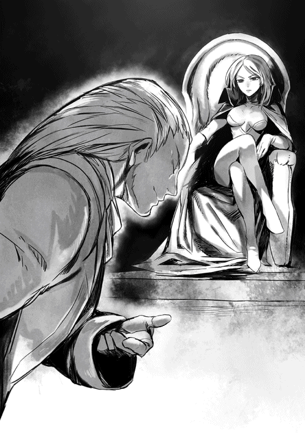
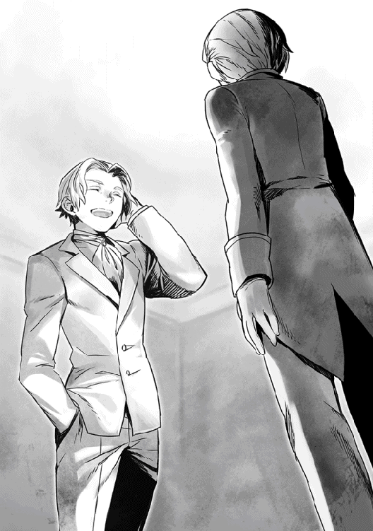

| ショウIV -新世界の始まり- | |
| 吉野匠 | |
| (2015) | |
魔王の死後、クリスタリカが魔族の王として君臨することになった。ロンザリア大陸は再び、彼女による統一へ向かうように思えたが、他の大陸から密かに上陸したグールの軍勢が魔族達に奇襲をかける。一方、人間の反乱軍を率いるショウ一行は彼らとの全面対決を決意するも、その戦いは仲間の犠牲も伴う、かつてない死闘の始まりだった。 大陸の覇権を賭けて、三つ巴の戦いが幕を開ける！


イラスト：天野 英 Hana Amano
デザイン：ヴェイア Veia
マップ制作：藤代 陽 Yoh Fujishiro
序章 新魔王誕生
魔界の帝都ヴァルマグロスでは、この夜、歴史的な事件があった。
すなわち、千数百年ぶりに先代の魔王が崩御し、新たな魔王が誕生したのだ。
ヴィルヘルム城の謁見の間にて即位宣言を行ったのは、つい先日に父を殺された（と主張する）魔王の第二女、クリスタリカである。
彼女は二女とはいえ、先代魔王の側室の娘であり、継承順位から言えば三番目に過ぎない。
本来、正当な血筋である長子のジェイルと三女のロクサーヌが健在な限り、どう転んでも魔王の座など望むべくもなかったはずだった。
しかし──皮肉にも彼らは兄妹揃って魔界を出奔し、魔族の敵である人間達に味方すべく、その陣営に身を投じている。
一度は完全に人間世界を制覇した魔族達から観れば、許されない裏切り行為であり、未だ健在な九名の魔将達からも、異議は全く出なかった。
......あくまでも表面上は、だが。
先代の魔王であるヴォルザードの死が確定的である以上、後継者を決めねばならないのは道理であるし、血筋から言えば、正当な後継者はクリスタリカしか残っていないのも事実だった。
その陰険さと粗暴な振る舞いから同族の中ですら恐れられるクリスタリカではあるが、他に玉座に相応しい者がいない以上、魔将達も納得する他はなかったのだ。
「あたしが駆け付けた時には、既にショウとその一味はよってたかって魔将の長老格だったフェルタクスを殺し、さらには我が父まで亡き者にしてしまった。あまつさえ、あのジェイルとロクサーヌも人間共と共闘しているのよ。あたしは新たな玉座に就く者として、ヤツらのこの残忍な行いを断じて許すことはできないわ！」
玉座を立ち、集まった魔将や諸将達を前に、クリスタリカは強い調子で述べる。
いつもの皮肉な物言いは鳴りを潜めていて、今や堂々たる魔王の風格があった。
衣装のみは、いつもの露出の多いビスチェとタイトなスカートだったが、亡父の形見であるマントだけは着けている。
彼女の家で家令を務めるヘンリーも、今日はこの謁見の間の隅に控えていたが、先程から開いた口が塞がらなかった。
そういう人だとは常日頃知っていたが、こうして頬を染めて力強い演説を行う主人を見ると、「この方もたいがい役者だな」と感心せざるを得ない。
さすがに先代魔王崩御の現場にはいなかったが、腹心のヘンリーは、その後で撤退してきたクリスタリカから、おおよその事実は聞いている。
その話によれば、魔王ヴォルザードや魔将フェルタクスを殺したのはショウでもロクサーヌでもなく、クリスタリカ本人なのだ。
フェルタクスとショウ達の密会を知った彼女が動き、その機に乗じてフェルタクスを先んじて殺し、さらに後から現れた魔王まで殺してしまった──簡単に言うと、これが事実である。
つまり、今回の元凶は実にクリスタリカ一人が引き起こしたと言ってもいいくらいなのだ。しかし......今、拳を振り上げて熱く語る彼女を見ると、事情を知るヘンリーでさえ、ともすれば「あれ、僕が間違ってたっけ？」などと悩んでしまう。
この演説一つをもってしても、クリスタリカがただの野望の女性ではないことがわかる。平然と忠臣と肉親を殺し、なおかつ全ての罪を他の兄妹と人間にひっかぶせてまるで動じない──皮肉ではなく、なかなかできることではないと思うのだ。
（まあ、だからこそ、僕みたいにその悪の魅力に引き込まれちゃったヤツも出てくるわけだけど）
今のところ、彼女の唯一無二の腹心であるヘンリーは、密かに満足感を持ってそう思った。
ただし、演説が終わって諸将が敬礼し、全てが万事丸く収まった──というわけにはいかなかった。
話を終えたクリスタリカが玉座に座るや否や、いち早く前へ進み出た者がいたのだ。
「クリスタリカ様」
クリスタリカに睨まれ、彼──魔将の一人であるノイマンがわざとらしく言い直した。
「いえ、もはや陛下ですな。失礼しました。陛下、よろしければ一つお尋ねしたき儀がございますが」
魔将の座に就いて三百年......フェルタクスには遠く及ばないとはいえ、彼もまた古株の一人である。

とはいえ、まだまだ白銀の髪も豊かであり、外見は人間の基準で言えば中年未満の年齢にしか見えない。常に笑みを絶やさぬ表情と、それと相反する硬骨の性格のお陰か、魔将達の中でもかなりの人望があった。
「いいわよ、言ってみなさい」
「ありがとうございます。では、お言葉に甘えまして」
クリスタリカが大仰に頷くと、シングルスーツを着た彼は、白い歯を見せて一礼した。
「......結局、フェルタクス殿は、何の用事でそのショウとやらに呼び出されたのでしょうか？ ご説明はわかったつもりですが、どうもそこのところがあやふやで、私には理解できておりません」
クリスタリカが口を開く前に、さらに彼は続けた。
「それに、風聞によれば、人間共──つまり反乱軍は、魔王陛下を殺したのは自分達ではないと強く主張している模様。これはどういうことでしょう？」
「そんなの、あたしだって知らないわよ」
クリスタリカはあっさりと言い切った。
ヘンリーに言わせれば、これも半ば嘘である。少なくとも彼女は、フェルタクスが陰でこそこそと活動していて、そのことをネタにショウに呼び出されたのだと知っている。彼女がショウ達の前に現れた時、他ならぬショウ本人からそう教えられたからだ。
ただし、その「陰でこそこそ活動」がどんなものだったのかは、クリスタリカは最後までわからず仕舞いだった。
なぜなら、途中で父たるヴォルザードの奇襲を受け、肝心な時に昏倒していたからだ。だから、ヴォルザードがショウに説明したであろう内容を、聞く機会を逸しているのだ。
......無論、ノイマンがそこまで知るはずもないが、しかし内心で何らかの疑いを抱いているのは確実らしい。
というのも、ノイマンはクリスタリカの愛想のない返事に目を細め、こう言ったからだ。
「失礼ながら、それは残念ですなぁ。ヴォルザード陛下の以前のご説明では、確か反乱軍の動きに不可解なものを感じ、陛下自らアダンの街に調査に赴いたとか。抜け目ない陛下のこと、ある程度は調べもついているかと愚考しましたが......」
黙って成り行きを見ていたヘンリーは、ここで「ヤバいっ」と思った。
というのも、気が短いクリスタリカは、ネチネチしたノイマンの言いように機嫌を悪くし、たちまち瞳を真紅に染め上げたからだ。
無論、怒鳴り散らすところまではいかないものの、ここで癇癪を起こせば、諸将にいらぬ疑いを抱かせる恐れがある。
ただ幸い、クリスタリカより先に、今回は他の魔将が前へ進み出てノイマンをたしなめた。冷酷さと粗暴なことでは魔将随一と言われる、ブラブレスである。
ノイマンより一回り大きい巨体を軍装に包んだこの巨漢は、吠えるような声で述べた。
「ノイマン、いい加減にせんか！ 我々の敵は薄汚い人間共であり、魔将でありながら敵へ寝返ったエリーゼや、ジェイル様やロクサーヌ様などの、忘恩の徒だ。それがわからんか？」
無精髭だらけのブラブレスの顔を見て、ノイマンは苦笑を浮かべた。
誰が見ても本気でそう信じ込んでいるのがわかるので、反論しにくいのだろう。どちらかといえばノイマンの敵側であるヘンリーでさえ、同情してしまったほどだ。
「お主の忠誠心は尊いものだが──」
「ならば、我らのやることは決まっているだろう！」
宥めかけたノイマンを、ブラブレスはまた大声で遮る。
見かけは上位魔族より下位魔族そのものと言われる彼だが、まさにその面目躍如といった風情だった。
「新たに玉座に就いたクリスタリカ陛下の下、挙国一致で人間共を叩き潰し、一刻も早く大陸の平和を回復することこそ、早急に成すべきことだろう。──そうですな、陛下っ」
最後はクリスタリカに向け、力一杯叫んでいた。
──この方も、単純な人だなぁ。
ヘンリーは呆れ果てて唇を歪めた。クリスタリカからすれば操縦しやすい男ではあるが、しかしあの主人の今の思惑からすれば、多少困る意見ではある。
なにしろクリスタリカは、現時点で本気で反乱軍を殲滅しようとしていないので。
というのも、まだ魔界がクリスタリカの下で完全に一致団結したとは言えず、ノイマンのようにヴォルザードの死にほのかな疑問を持つ者もいる。
そのため、ショウ達のような反乱軍の存在は、味方をまとめるネタにちょうどいいのだ。「内輪揉めしてどうするのよ！ あたし達の敵は人間なのよっ」と言えば、今の時点で大声で異論を唱える者は少ないし、それなりに大義名分も立つ。
クリスタリカとしては、その間に足場を固める時間ができるわけだ。
そういう思惑のためか、もちろんクリスタリカは表立ってはブラブレスに賛成した。
「よくぞ言ったわ、ブラブレス。さすが、武勇の誉れ高い魔将ね」
「ははあっ。有り難きお言葉！」
ブラブレスは感激した顔で深々と一礼した。
「このブラブレス、ご命令くださればすぐに軍勢をまとめ上げ、人間共の拠点に攻め込んで踏みつぶして参りましょうぞ」
「そ、そうね......あたしもそう命じたいところだけど、今はまず敵の陣容を正確に知りたいのよ」
誰に対しても厳しく容赦ないクリスタリカが、珍しくたじたじとなって言い訳などした。自分の味方であることは間違いないが、ブラブレスは別にヘンリーのような彼女の信奉者ではない。
本人は本当に忠義のつもりなのだから、これほど始末の悪い男もおるまい。
結局、クリスタリカはブラブレスに笑顔でこう命じるに留めた。
「まあ、待ちなさい。今、多くの斥候を放って反乱軍の内情を探っているところなのよ。確かなところがわかれば、その時こそ、おまえに活躍の場を与えましょう。そう遠い先の話じゃないから」
「左様ですか......では、時が来ましたらぜひっ」
ブラブレスは至極残念そうではあったが、ひとまず低頭してクリスタリカに応じた。
（こうなると近々、本当に反乱軍に軍を出すことになるだろうね。ただ、陛下暗殺の件は、今後も尾を引きそうだね）
最後まで沈黙して諸将を観察していたヘンリーは、クリスタリカの立場を思い、そう考えていた。
特に、あのノイマンは何か含むものがありそうだ。
それに......まだ問題はある。
結局、亡き陛下とショウ達とは、一体どんな会話を交わしたのだろうか、ということだ。
クリスタリカの話では、ヴォルザードが密かにやっていた後ろめたい「何か」についてらしいが、未だにその内容をクリスタリカは把握できずにいる。
ヘンリーも調査を継続してはいるが、どうも謎のほとんどの部分は、亡きヴォルザードとフェルタクスの二人で独占していたも同然だったらしい。
そんなことが有り得るのかと思うが、事実、彼らの元部下達は何も知らずにいる。
ここまで秘密にするとなると、コトは重大だと思うのだが......これも、早急に調べ出さないといけないだろう。
ヘンリーはこっそりそう決心していたが──。
しかしこの時はその彼でさえ、事態がもう絶望的なスピードで動き出していることを、知らずにいた。
☆
魔将ノイマンは、ヴィルヘルム城内に与えられた自室に戻り、そこで待っていた部下達に軽く頷いた。
談笑していた彼らはすぐにノイマンのそばへ集まってきたが、部屋にいた者だけでも、ざっと十名以上はいただろう。
全員がノイマン個人の配下だが、それと同時に長き時を共に戦ってきた仲間であり、腹心達である。
だからもちろん、そのうちの一人が「どうでした!?」と声を潜めて尋ねた時も、ノイマンにはその言わんとするところが正確にわかった。
「クリスタリカ様は、全てを人間がやったことにするつもりらしいな」
さらりと述べると、ほぼ全員が同時に唸った。
それも不思議ではなく、ここに集う者はある意味、全員が同志でもあるのだ......つまり、反クリスタリカ派という名の。
上着を脱いでソファーに投げ出したノイマンは、まだ立ったままで全員を見渡す。
「つまり、あの方の方針としては、人間に全ての罪を被せ、陛下殺害の秘密ごと叩き潰すようだ。早くもブラブレスがやる気を見せていたしな」
「ノイマン様も同じお気持ちでしょうが、私は到底信じられません」
「私もですっ。あの陛下が、簡単に人間に倒されるはずがない！」
「必ず何か裏があるはず」
「その通り！ クリスタリカ様の証言は信用ならないっ」
興奮した一同を目で抑え、ノイマンはそっと忠告する。
「気持ちはわかるが、仲間内以外で、疑問を口にしてはいけないよ。今はまだ、誰が敵で誰が味方かわからないのだ。当面は、陛下が死んだ状況を探り出すのが最重要だろう。ジェイル様から情報は来ているが、私はその情報も盲信せず、自分で確かめようと思う」
一拍置き、ノイマンは決然と述べた。
「......というと、どうなさるおつもりですか？」
心配そうに訊いた部下の一人に、ノイマンは笑って答えた。
「簡単なことさ。まず、反乱軍と接触してみる。ジェイル様はともかく、できればロクサーヌ様やショウと名乗る反乱軍の重鎮と、会って話してみたい」
「それは──危険過ぎますっ」
「先程、ご自分で仰ったではありませんか？ 誰が敵かわからないと」
「城内でも、そろそろノイマン様に目を付ける者はいましょう！」
一斉に湧き起こった声に、しかしノイマンはきっぱりと首を振った。
「危険は承知だ。少なくとも、このままクリスタリカ様の治世を認めるわけにはいかないからね。私にも魔将の意地はあるし、それに私の力なら、帝都を抜け出すのも容易いはずだよ」
暗に自分の特殊な能力を皆に思い出させ、安心させてやった。
「それはわかりますが......でも本当に実行してしまうと、ノイマン様は二度と帝都に戻れなくなりますよ」
ノイマンが目を掛けている戦士の一人、ハルトが心配そうに言ってくれた。
「心配は嬉しいが、だがここにいても私ができることは少ない。むしろ、このままでは、人間との無益な戦いに駆り出されることもありそうだ」
「......なるほど、それは確かに」
ハルトも渋々頷いた。
彼とて、日に日にクリスタリカの権力が増しているのは、わかっているのだ。
「それに、帝都を脱出するのは、なにも魔族の未来を憂うからばかりではない。私は許せないのだよ......陛下を殺した者が誰であれ」
日頃穏やかなノイマンが、この時ばかりは笑顔を消して決然と言い切った。
幼少の頃から目をかけてもらっていただけに、その死を知ったときには彼ともあろう者が、愕然としたほどだ。
遥かな昔、魔族軍において最高の地位である魔将に取り立てられた時、ノイマンはヴォルザードに呼ばれ、こう告げられた。
『おまえの誠実な性格を、予は誰よりも高く買っている』
まさか、魔王その人に目をかけてもらっていたなどとは想像もしていなかっただけに、ノイマンは言葉もなかった。
そんなノイマンを笑顔で見やり、ヴォルザードは言い聞かせるように語った。
『覚えておくがいい──遠い将来、おまえの信じる正義とは相反することが起きるかもしれぬ。おまえの心が揺らぐような大きな事件が起こり、さすがのおまえも戸惑い、迷う時がくるであろう。その時は、今日の予の言葉を思い出すがよいぞ』
言葉を切り、ヴォルザードはノイマンの目をまっすぐに見た。
『余人の言葉に惑わされず、己の心に静かに問いかけるのだ。何が正しく、何が誤っているかを、自分自身の心で見極めよ。おまえほどの男なら、過ちを犯すことはあるまい』
たったこれだけの言葉だが、今もノイマンの脳裏に鮮烈に刻まれている。
三百年以上も前のことなのに、度々思い出すほどだ。
当時のノイマンは、主君が何を言いたいのかよく理解できなかったが......クリスタリカが玉座に就いた今こそ、ヴォルザードの言葉を噛み締める時だと思っている。
皆が息を詰めたように見つめていたが、ノイマンはあえて激しい口調で言い切った。
「誰が犯人であろうと、陛下を亡き者にした者には報いを受けてもらう！」
第一章 リシャール登場
魔王ヴォルザードが亡くなってからは、人間達の反乱軍側も魔族軍側も、しばらく弛緩したような状態になっていた。
特に休戦協定も結んでいないのに、両陣営共に戦闘行動は控え、ひっそりと現状を維持したまま時が過ぎている。ヴォルザードの死は夏を迎える直前だったが、それから季節も過ぎ、今は既に初秋である。
この空白期間については、新たに魔王の座に就いたクリスタリカにとっては「自分の足下を固める」という大きな理由があったが、同時にショウ達反乱軍側にとっても幸いだったかもしれない。
とにかく、乏しかった戦力を強化する時間ができたからだ。
もちろんその他にも、魔王の死に直面したロクサーヌやユキナ（元エリーゼ）が立ち直る時間が必要だったこともある。
意見の相違から魔界を飛び出したものの、ロクサーヌは決して父親を憎んではいなかったし、クリスタリカの手によってその父が殺されたことで、ひどいショックを受けていたからだ。
これは、ユキナも同様である。
つい先日までの彼女は、ショウの妹として暮らした九年前以前の記憶が、すっぽりと抜け落ちている。
いや正確には、父である魔王ヴォルザードによって、記憶が改竄されていたのだ。
ヴォルザードはグールの再侵攻を恐れたが故に、いざという時に一族全員が殺される事態を避けようとした。そのため、末っ子のユキナが生まれてすぐ、異世界である日本へ避難させていたのだ。
ショウの家に来た時のユキナは、まだ赤ん坊に等しい年齢であり、ショウの亡父は「友人から託された」と語っていたそうだが──無論、これはヴォルザードによって捏造された記憶だろう。
ただ、ヴォルザードはここまで用心深くユキナを隠したのに、彼女は結局、九年前に日本から誘拐され、再びこのロンザリア世界に戻っている。
何者かが、ショウの家に魔族の下位種を送り込んだためだが......幸いこれは、ヴォルザードが未然にユキナを取り戻し、彼女に危害は及ばなかった。
ただし、とばっちりを受けたショウの母親は、誘拐の際に下位種によって殺されている。
この辺りの事情や記憶をヴォルザードに消され、ユキナは密かに魔族の戦士として魔将にまで取り立てられたが──。
銀仮面男の治癒術により、日本でショウと暮らした記憶が蘇っている。欠けた記憶が戻っただけでも、ユキナにとっては大きなショックだったはずだが、ショウはさらに、思い切って真実を告げた。
つまり、ヴォルザードがユキナの本当の父親であることを教え、かつユキナを日本へ隠した事情も教えてやったのだ。
死に瀕してさえ、ヴォルザードはあえて語らなかったようだが、ユキナには事実を知る権利がある......ショウとしては、そう思ったからだ。
全てを知ったユキナが大きなショックを受けたのも、当然だろう。
この打ち明け話を聞かされてからは、ユキナはなおのことひっそりと自分の部屋に閉じ籠もることが多くなってしまった。
お陰でショウは、随分と自分の決断に悩むこととなったのだが......しかし、久方ぶりに休養をとったのが良かったのか、ロクサーヌもユキナも少しずつ元気を取り戻し、夏の終わりには、ほとんど以前の変わらぬ笑顔を見せてくれるようになった。
いや、妹のユキナに関しては、以前以上かもしれない。
なぜならユキナは、ある日ふいにショウの部屋を訪れ、こんなことを言ったからだ。
「ユキナ、またこの部屋に戻ろうかな？」
前にショウが買ってやったコルセットドレスを着たユキナは、以前自分も住んでいた屋根裏部屋をぐるりと見渡し、もじもじと言った。
ベッドに横座りしたショウは、思わず目を瞬き、首を傾げる。
いや、以前この部屋で一緒に暮らしていたのは緊急措置だったはずだし、そもそもユキナは日本にいた幼女の頃だって、ちゃんと自分の部屋を与えられていたはずだ。
ショウが微妙な顔つきをしたためか、ユキナはふいに話を変えた。
「そ、そう言えばね、呼び方もきちんとしないとね......どうしようかな」
「呼び方？」
オウム返しに問うと、ユキナは両腕を後ろで組んでショウの前に立ち、俯いて頷く。
「うん、呼び方。だって、今のユキナは十七歳だけど、兄妹として一緒に住んでいた頃から、九年も時間が飛んでるもの。改めて呼び方を考えないとね......お兄様とか？」
「ああ、その呼び方な！ しかし......お、お兄様はちょっと」
「兄上はユキナが嫌だし、じゃあ、おにいちゃん？ それとも、ショウさん？ あるいは、ショウさま？」
「待て待て待てっ」
慌ててショウは片手を上げた。
「ショウさまってなんだよ。じゃなくて、名前で呼ぶことないだろ。あの打ち明け話は打ち明け話として、俺達は家族も同然じゃないか。今更、水臭いこと言うなよ」
少し寂しくなってショウが咎めると、ユキナはなぜかショウの隣に座った......それもぴったりと身体をくっつけて。
「な、なんだ」
「......水臭いとかじゃないの」
わからないかなぁ？ とユキナはじれったそうな表情で小首を傾げる。
「将来のこと考えたら、今からきちんとした方がいいかなって。だってほら」
しばらく黙り込み、思い切ったように告げる。
「ふ、二人一緒になってからも、おにいちゃんって呼ぶのはおかしくない？」
一緒になるってなんだ？ と鈍いショウは考えていたが、ユキナはショウが口を開ける前に急いで言った。
「じゃあ、おにいちゃんって呼ぶね......ここしばらくは」
「あ、ああ......うん、それでいいよ」
しかしおまえ、自分のことをユキナって呼ぶの、小学生の時のままだぞ──と思ったものの、ショウはあえて指摘せずにおいた。
妹にとっては、そちらの方が自然なのかもしれないと思ったので。
こほんと小さく咳払いして、ユキナがいきなり話を戻した。
「それで、ユキナはこの部屋に戻っていい？」
「えっ」
どうやら最初の質問は本気だったらしいとわかり、ショウは多少慌てた。
ユキナはもちろんだが、いつも一緒にいるユウリも、さすがにショウと部屋は別である。これまで、女性と同じ部屋に（長期間）住んだことなどない。
「い、いやぁ......でもほら、おまえももう十七歳だし、家族といえども節度が──」
「おにいちゃん、さっきと言ってること違う！」
いきなり膨れっ面になったユキナに、ショウは戸惑う。
弱ってしまったが、タイミングよくそこで階段を上がる足音がした。
二人してぱっと階段口を見ると、「お邪魔するよ」という声がして、いつもの純白シングルスーツ姿のジェレミーが上がってきた。
金髪碧眼の美少年風ウォーリアだが、実力の方は仲間内でもトップクラスだろう。今や、反乱軍の堂々たる重鎮でもあった。
「興味深い話の最中に邪魔して、すまないね」
いつものとろけるような笑顔で、ジェレミーは言ってくれた。
「いやおまえ、こっそり聞いてんなよ」
「ははは......いや、立ち聞きするつもりはなかったけど、だいぶ階下にまで届いてたよ、二人のやりとり。ロクサーヌとユウリさんも、下で銅像みたいに固まってたな」
「うぁあああ」
思わず呻いてしまうと、なぜかユキナが横目で見た。ひどく微妙な目つきだった。
「......気になるの、おにいちゃん？」
「気になるというか......」
言い訳しかけ、ショウは途中でジェレミーを見た。
「そういや、おまえはなんの用事だよ」
「うん。実はジェイルが僕達を呼んでてね......もちろん、ユキナさんも一緒にさ」
「おいおい、ならそっちの方が重要じゃないか」
ショウは慌てて立ち上がった。
☆
一階でロクサーヌとユウリを見つけ、ジェレミーと共に引き連れ、ショウ達はジェイルの仮住まいを訪れた。
元々は木造の家が多いこのソムニウムにあって、ひと際目立つ煉瓦造りの三階建てである。
今や、ロクサーヌも兄のジェイルと一緒に住んでいるのだが......しかし彼女の場合、今日のようにショウの屋敷に遊びに来ることが多かった。
ともあれ、居間に当たる一階の大部屋に入ると、既にテーブルにジェイルを始めとする魔族戦士が数名ほど座していた。
人間側としては、デイル一人が気まずそうにテーブルに着いていて、こいつはショウを見るなりあからさまにほっとした顔を見せた。
「遅いんだよ、おまえはっ。リーダーのくせに、チャッチャッと来いよ」
「......僕としては、なぜまたロクサーヌと君が連れ立ってくるのか、そこを問題にしたいところだが」
亡きヴォルザードの遺児、白銀の髪を長く伸ばしたジェイル・ビューゼルシュタインは、妙にすっぱい顔つきでロクサーヌとショウを見比べた。
いつものように、クラバットまで着けた隙のないダークスーツ姿である。
「まあ、よき友人関係でいてくれるのなら、小言は控えるべきかな」
友人、の部分に妙に力を入れて言われた。
ショウは特に言い訳せずに肩をすくめ、急いで仲間と共に長方形のテーブルに着く。
どうでもいいが、これだと上座に一人で座るジェイルが、まるでショウ達の主君のように見える。まあ彼の場合は前魔王の遺児でもあり、人間側を抜きにすれば、あまり違和感はない。
ジェイルの他に四人の魔族が彼の近くに座していたが、その中には、生前のダルトンと言い争っていた若者の姿もあった。ただし、彼はショウを見ると笑顔で低頭してくれたので、もはや遺恨は残っていないらしい。
「さて、だいたいのメンバーが揃ったことだし、早速情報を伝えよう。実は、ヴィルヘルム城内の同志から、定期連絡があった。クリスタリカがいよいよ仲間の要請に抗しきれず、反乱軍討伐の軍を編成するらしい」
さすがに部屋の中がざわついた。
ただし、驚き慌てる声は少ない。むしろ、これまでよくぞ時間が稼げたと、感謝してもいいくらいだろう。
皆の反応を見てから、ジェイルが誰にともなく頷く。
「今回、情報を得るのが少し遅れてね。もはや軍勢はヴァルマグロスを出たらしいんだ。今頃はメーヴィング山脈を越えている途中かもしれない。指揮官は魔将が二人らしいが、軍勢の規模はわからないな」
皆の顔がぐっと厳しくなった。
今の段階でもうあの山脈にもう達しているとなると......そうそう時間の余裕はないわけだ。
「クリスタリカにしては遅いほどですが──元々彼女は、俺達を自分の地位を固めるために利用しようって腹ですからね。動きが鈍いのも当然ですか」
「その通り」
ショウの言葉に、ジェイルは大きく頷く。
「あの女の心づもりとしては、もう少し足場を固めるまでは、我々など放置しておきたいところだろうな......おそらく、味方の突き上げを食らったのだろう。未だに魔界では、父を殺したのが反乱軍ということになっているだろうしね」
「ひどい話ですわ！」
ロクサーヌが憤慨したようにテーブルを叩いた。
「兄上、クリスタリカの所業を魔界中に広めることはできなのですかっ」
「今もやっているとも、愛する妹よ」
ジェイルは自らも残念そうに唸った。
「しかし、あの女は容赦ないヤツだからね。下手にそういう噂が流れた途端、その噂の元を辿り、こちらの貴重な同志を虫でも潰すように殺してしまう恐れがある。そう易々と流言も使えないのさ」
「まあっ」
さらに憤ったのか、ロクサーヌは唇を引き結んでいた。
父を殺されたせいか、彼女も以前とは違い、クリスタリカに姉妹の情は持っていないように見える。
「とにかく、敵の戦力や陣容を知らないことには、策も立てられない。ここは一つ、情報収集に赴きますか」
「まさか、君自身が行く気かな？」
上座に座るジェイルが、目を細めてショウを見た。
「そうだ、またしても無茶を考えてるのかな？」
離れた場所に座るジェレミーも、心配そうに言う。
「別に悪くないだろ？」
ショウは皆を見渡し、あっさり言った。
「ここにはジェイルさんもいることだし、留守にしても安心だ」
「その信頼は嬉しいが、たまにはこの僕も──」
ジェイルが言いかけ、なぜか途中ではっとしたようにドアの方を見た。
ほぼ同時に、ショウもふいに生じた気配を感じ、席を立つ。
「誰だっ」
激しく誰何すると、なぜかトボけたようなノックの音が二度して、聞き覚えのある声が言った。
「急な訪問ですまない......何か力になれないかと思ってね」
「この声はっ」
「あの銀仮面男！」
ロクサーヌとユウリが同時に声を張り上げる。
それに応えるようにドアが開き、見覚えのあるローブの男が入ってきた。
いつもながら、見れば見るほど怪しい姿だった。
丈の長いローブを羽織った上に、鼻から上を完全に隠す銀色の金属マスクまで装着している。おまけにこの銀仮面たるや、目の部分は黒い皮膜で覆われていて、その向こうにあるはずの瞳がほとんど見えないという、とりわけ怪しい代物だった。
ただ、ショウはこの男の素顔を前に見ているし、訪問を受けたお陰で、フェルタクスに密書を送ることもできた。
だから、その点では感謝もしているのだが......逆に言うと、そのために魔王はクリスタリカに殺されることになったわけだ。
それを思うと、相変わらず警戒心が湧き起こるのはやむを得ない。
現にロクサーヌなどは、見るからに渋面で男を睨んでいた。
「やあ、皆さん」
男は朗らかな声で挨拶すると、きちんと一礼した。
それからわざわざショウを見て、「座ってもいいかな」などと尋ねてきた。
「まあ、そりゃ構わないが......今後は、来る前に連絡くらいは入れてほしいもんだ」
憮然としてショウが述べると、彼は唇を微かに吊り上げ、小首を傾げた。恐縮しているらしい。
「いや、言われてみればその通りだね。今後は注意しよう」
そう述べると、さっさと空いた席に座ってしまう。
ジェイルがショウを見て、日頃まず見せない胡散臭い表情でそっと尋ねた。
「あの彼が、君が宿で出会ったという仮面の男かね？」
「その通りです......正体は、既に話したと思いますが」
療養中だったユキナを含め、ショウは既に仲間内に銀仮面男の正体を教えている。隠す意味などないからだが......さすがに本人が目の前に現れたのは驚きだったらしく、全員が声もなく男を見つめていた。
なにしろ、グールである。
遥かな昔、このロンザリア大陸に侵攻してきた異種族の敵だとされているが──。
伝承や、各地に微かに痕跡が残るくらいで、記録もほとんどは散逸している。今では、実在すら疑問視する者も多いほどだ。
魔族ですら及ばない力を持ち、人肉を食らう──などという噂があるが、真実は誰も知らなかった。
ただ、ソウルバイブルを知るショウとしては、グールは無視できない種族でもある。
なにしろ、ソウルバイブルは元々、グールが編み出した魔法体系だとされているからだ。しかも、平然とショウのそばに座った彼に至っては、ショウの養父にソウルバイブルに繋がる石版を託した者でもある。
......静まりかえる一同の中で、例外的にユキナが席を立った。ショウから聞かされた経緯を覚えているせいか、わざわざ彼に向かって礼を述べた。
「私の記憶を取り戻すために尽力してくださったそうで、どうもありがとうございます」
妹を見てショウもさすがに反省し、自分も立ち上がって頭を下げた。
「そういや、俺も礼を先に言うべきだったな。ユキナが元に戻ったのはあんたのお陰だろう。助かったよ」
「なに。多少なりとも役に立ったのなら、嬉しいことだよ」
口元だけで微笑し、彼は早速切り出す。
「さて、今回私が来たのは──」
「待ってくれ」
座り直したショウは、慌てて遮った。
「話を聞く前に、名前くらい教えてくれ。名前を知らないままじゃ、どうもな」
「ああ、これは失礼した！」
大仰に仰け反るような格好をしたかと思うと、彼は深々と一礼した。
「グールの戦士階級で、名をリシャールという。どうぞよしなに」
名前よりも「戦士階級」という聞き慣れない言葉に、一同がざわめく。
思わず眉根を寄せたショウだが、デイルが好奇心満々の顔でずばり訊いてくれた。
「なあ、リシャールはグールだって話だが、やっぱりメシ時に人間食ったりするのか？ あと、戦士階級ってどういう意味？」
「うわぁ」
「......なんという」
ショウと左隣に座るユウリの声が、図らずも重なった。
ここまで大胆で遠慮のない質問は、なかなかできるものではない。さすがは空気を読まないことでは定評のあるデイルである。
ただ、皆が訊きたいことだったのは間違いなく、全員の視線がリシャールに集中した。
「はっはっは」
意外にも、彼は朗らかに笑った。
「いや、太古の同族にはそういう者がいたことは否定しないが、でも今の時代、我々も人肉なんか食べないよ。ただ、プラーナ──すなわち、人間の生気を我が物として取り込むことはできるね」
「どういう意味かわからないんですが？」
興味深そうに聞いていたジェレミーが、すかさず尋ねた。
「実地で証明しよう。この際は、ショウ君が相応しいかな」
リシャールが立ち上がり、質問したジェレミーではなく、わざわざ反対側に座るショウの元までやってきた。同時に、まるで合図したように左右に座していたユウリとユキナが立ち上がり、ショウを庇うように立ち塞がる。
さらに、兄のそばに座っていたロクサーヌまで駆け付けてくる始末である。
「いいんだ、みんな！ 俺を殺す気なら、とうにやってるさ」
強く制止したが動かないので、ショウは苦笑して腕を引っ張って二人をどかせた。
「つか、そんなエロガキは、血の気を抜いて大人しくさせた方が世の女の子のため──」
唇を歪めて言いかけたデイルは、女性三名による視線の集中砲火を浴びて、慌てて両手を上げた。
「つ、罪のないジョークなんで」
「君は、モテるようだね」
特にからかう口調ではなく、感心したようにリシャールが言う。
ショウは答えず、とにかく三人を優しく後ろに押しやった。
「お手柔らかに頼むよ」
「もちろん。どういうものかちょっと例を示すだけさ」
リシャールは苦笑気味に述べ、ヤケに白い手をショウの右肩に置いた。途端に、男にしてはしなやかで細い手が柔らかく光り始める。
たちまち周囲がどよめいたが──同時に、ショウはふいに目眩を覚えたように足下がふらつきかけた。
「だ、大丈夫ですかっ」
「ショウっ」
「おにいちゃん！」
慌ててまた駆け寄ろうとした女性陣を手で止め、ショウは首を振る。一時覚えた目眩は、リシャールが手を離すと同時に消えていた。
ただし、多少の疲労感は残っている。
「なるほど......これが生命力を奪うということか」
「そう。当然、奪い過ぎれば相手は死ぬし、奪った側は新たな力を得るわけだ。これは、逆に与えることもできるよ」
リシャールはそう述べ、再びショウの肩に手を置く。
また手が光ったが、今度はみるみる疲労感が消えていくのがわかった。
「お詫びに、少し余計に戻しておいた」
自分の席に戻りつつ、リシャールは笑みを含んだ声で言う。
確かに、奪われる前より元気になっていたのは事実である。
「しかし......あんたの前で言うのもなんだが、これは嫌な力だなぁ」
再び座りながら、ショウは首を振る。
「なんとか防ぐ方法はないのか？」
「防ぐというか、慣れれば抵抗することはできるね」
リシャールは今度は真面目な声で頷く。
「特に、ショウ君のような戦士は有望だ。気を張っていれば、十分抵抗することができるだろう。日頃から修羅場を経験している戦士は、気をコントロールできるようになるのも早いだろうから」
「気ぃ？ 気ってなに？」
デイルはもちろん、他の仲間もぽかんとした表情で首を傾げる者が多かったが、さすがに元が日本人のショウは、「気」の概念くらいはわかる。
まあ、それをコントロールできるかどうかは、全然別問題にしても。
「質問も多いことだろうが、一応ここで、私の立場とざっくりとした事情を説明しよう。よかったら聞いてほしいんだが」
リシャールが皆を見渡し、特に反対する者がいないのを確かめた上で、ゆっくりと語り始めた。
まず、最初に私は戦士階級だと名乗ったが、グールという種族には、ざっと分けて二種類いてね。
戦士階級とその他の一般人......つまり、平階級だ。
このうち一般人の方は、実は君達とほとんど変わらない。さほど大きな力は持っていないということさ。
問題なのは、戦士階級の方だ。
先に話しておくと、我々グールは確かに太古の昔にこの世界を席巻し、支配しかけたことがある。
その後のことはショウ君から皆も聞いたと思うが、我々は代理支配者を置くことで満足し、一旦はこの大陸を離れた。
ただ、残された文献によく書かれている「異世界に戻った」というのは正確な表現ではない。いや、そういう者がいたことは否定しないが、我々の大半は他の大陸に渡っていたんだよ。そこで、新たな活動──まあ、簡単に言えば侵略行為を行っていたわけだ。
ここまで聞いただけでも、ショウ達には驚きの連続だった。
いや、元々が異世界人のショウはともかく、この世界に元からいた人間──どころか、ジェイルを含めた魔族達でさえ、「他の大陸」などがこの世界に存在するとは、全くの初耳だったからだ。
ただ、「異世界から渡ってきた」という説明よりは、理解しやすい話である。
そのためか、この段階ではリシャールを遮ってまで質問する者はいなかった。
全員のざわめきが収まるのを待ち、リシャールはまた話し始めた。
およそ千数百年前、未だグールのほとんどが戦士階級だった頃、我々の誰も、侵略に対する疑問など持たなかった。
新しい大陸や島を見つけて他種族を発見すれば、彼らを襲って自らの糧とする──単純な食料を得るより、プラーナを得る方が遥かに効率がよく、充足感も高い。
だからこそ、グールという種族は侵略のみを目的として、この世界で暴れ回っていたのさ。ただ......グールにも弱点はある。
それは、同族同士での出生率が異常なほど低いという事実だ。千組のカップルがいたとして、そのうちの五パーセントに子供が授かればいい方でね。だからこそ、長寿にもかかわらず、グール全体の人数は大したことないわけだ。
ただ、これには例外があって、他種族となら意外と容易に子供を授かるんだな、これが。お陰で、この世界ではグールと人間の混血である、「魔族」なる種が生まれたわけだ。
おっと......ジェイル君だったかな？ 君の不快はわかるが、しかし私は事実を話しているんだ。悪いが、腹を立てずに聞いてくれると嬉しい......うん、ありがとう。
どこまでだったかな？ そう、混血だ。
グールと他種族の間なら子供が授かりやすいのはいいとして、ただ問題も残る。
......グールと他種族の間に生まれた子供は、純血のグールと同様の力が持てなくなるのさ。やや力が落ちるし、プラーナの摂取も不可能となる。
これに気付いたグールの多くは、純血種のみを至上として、グールが他種族と交わることを禁じようとした。
しかし......当然、グールも一枚岩ではない。
たとえ力を失うことになろうとも、多くの種族と交流し、グールも平和に生きるべきだという者も現れた。
それが、私のような変わり者だ。
純血主義者達からは「裏切り者」と呼ばれるが、私達は自分達のことを「和平派」と呼んでいる......もっとも、これまでは公然とそう自称してこなかったがね。そんなことをすれば、「殺してくれ」と言うようなものだ。
戦い至上主義のグールの中にあって、我々和平派が異端なのは間違いないのさ。
他種族を侵略して狩るのをやめ、平和に暮らしていこうとする我々は、あいにくグールの戦士階級の中では少数派ということになる。
ただ、それでも馬鹿にできない勢力を有しているわけだ。
グールの大半を占める一般人は、混血に目くじらを立てる者が少ないから、当然なんだけどね。
とにかく、私は君達に協力を望む者であり、純血主義者の横暴に対して共に戦いたいと思っているのさ。......これで、私の立場の説明になっただろうか？
リシャールの話が終わっても、しばらく誰も口を開かなかった。
しかし、ふと疑問に思い、まずショウが口火を切った。
「戦士階級とその他の一般人は、どういう理由で分かれる？ 力の強弱で選別しているのか？」
「いい質問だ！」
なぜか嬉しそうに口元を綻ばせ、リシャールは何度も頷いた。
「グールの純血種が子供を授かりにくいことは、もう話したね？ 同時に、生まれた子供の中で戦士に相応しいほどの力を持つ者は、まず少ない。百人に一人もいないだろうな。気が遠くなるほどの昔には、グールも全員が戦士階級に相応しい力を持っていたようだが、今はあいにく、普通の人間並の者が多い。もはや、新たな戦士階級が増えることは、まずないと言っていい」
「そ、そうか......それは多少の朗報になるかな」
ショウは大きく息を吐き、ようやく笑みを見せた。
「じゃあ、次にソウルバイブルの」
「いやいや、それは後にしないか？」
身も蓋もなく、リシャールが遮る。
「それより、今そこにある危機の方が重要だろう？ 私が持ってきた情報に移った方がいいと思うよ」
「しかし、俺はこのろくでもない魔法をだな」
「まあ待ちたまえ、ショウ君」
今度は黙って聞いていたジェイルが、穏やかに、しかしきっぱりと割り込んだ。
「彼の言う通りだ。公平に見て、我々としても彼の持つ情報には興味がある。ちょうど、クリスタリカが動くという話をしていたところだしね」
「......わかりました」
渋々ショウが遠慮すると、リシャールは表情のわからない仮面顔で全員を見渡した後、いきなり爆弾を落としてくれた。
「間もなく、グールの正規軍が攻めて来る──かもしれない」
「かもしれないってなんだ、かもしれないって」
気のある女の子以外の何者にも遠慮しないデイルが、即座に突っ込んだ。
「あやふやすぎんだろ！」
「いや、面目ない」
はははっと明るく笑うリシャールである。
「しかし戦士階級には、百戦錬磨の戦士が多い中にあってさえ、さらにずば抜けた実力者がいてね。そいつの目が光っていて、なかなか情報を得るのが難しいんだ。協力者の多くは和平派だと見破られて殺されたり、あるいは身の危険を察知して逃げたりしている。もう情報提供者は、ほとんど残っていないのさ」
実に軽く言ってくれたが......実のところ、リシャールの言葉は（デイル以外には）衝撃を持って受け止められていた。
あの魔王ヴォルザードでさえ、グール達には膝を屈していたのである。
その正規軍が攻めてくると聞いて、とても笑っていられるものではない。
「時間と場所はわからないのか？」
勢い込んだショウが身を乗り出したのも、当然と言えよう。
「それがわかれば苦労はないんだが......あいにく、まだ探り出せていない。しかし、断片的な情報だけなら、一般人の方からも流れてきている。それによると、そもそも今はソムニウムではなく、魔族領との境界に近い北部が狙いだそうだが」
全員、仲良く顔を見合わせてしまった。
魔族領との境界に近いというと、メーヴィング山脈がそびえる北部ということになるだろうが......北部と言っても広い。
それに、今やあの辺りは魔族と人間の勢力圏が混在している地方でもある。
「クリスタリカが軍勢を出そうとかって時に、またとんでもないことになったもんだ。こりゃいよいよ北部に探りに行くしかないな」
そこまで口にした途端、ショウは天啓のように閃き、銀仮面男のリシャールを見た。
「そういや、あんたには便利な力があったよな」
「おお、同志よ」
おどけた口調でリシャールが両手を広げる。
思ったより愉快なヤツだったらしい。
「君が何を望んでいるのか、わかる気がするな」
「私も行きますっ」
なぜか突然、ユウリがショウを見た。
「よ、よくわからないけど、ユキナもおにいちゃんと一緒にっ」
焦ったようにユキナが同調する。
「抜け駆けですかっ」
ロクサーヌまで慌てて立ち上がった。
「当然ながら、わたくしも」
「待たないか、みんな！」
ジェイルが呆れたように全員を制止した。
「まずショウ、リシャールの便利な力とは、ひょっとすると転移のことかな？」
「そう。彼がいれば、労せずして北部まで行けます」
「労せずとはいかないよ。魔力付与のペンダントのお陰で転移できてるんだから、ちゃんと回数制限がある」
「えっ」
意表を突くリシャールの反論に、ショウは慌てて彼に向き直った。
「どういう意味!?」
「だから、あれは私の力じゃないんだよ。我々の祖先が保持していたマジックアイテムによるもので、永遠には使えないんだ。私も何度か使ったから、もうあまり使えないかもしれないな」
ぶつぶつ言うと、リシャールはローブをまくり、五芒星の形に似たペンダントを晒して見せた。薄い赤色をした不思議な金属で出来ているようだが、正体はまるでわからない。
「これさ、あの時の手品の種は。あいにく、今の我々じゃ、もう同じ物は作れない。この赤い色が全て抜けてしまったら、付与魔力の力が失せたということだ。あと何回使えることやら」
「......そんな大事な代物を、俺達を驚かすために使ったり、紅茶なんか出すのに使っていいのか、おい」
初対面の時の状況を思い出し、ショウは喉の奥で唸る。
リシャールは反省の色もなく口元だけで笑った。
「まあ、私の悪い癖だね。つい格好をつけたがる」
開いた口が塞がらないとはこのことだろうが、ショウはそれでも諦めなかった。
「とはいえ、まだ使えることは使えるわけだろ。今回こそ、本当に必要じゃないのか？ なにしろ、クリスタリカ側もグール側も侵攻を企んでいるわけだ。ここで得る情報にはタイムラグがあるし、どうしても必要なことだろう」
「後のことを考えたら控えた方がいいんだが、君の言うのも道理だ。では、こうしよう」
決断したのか、リシャールはゆっくりと言った。
「第一に、制限は歴然とあって、送り込めるのは私が知る場所に限る。今回だと、北部で私が知る街限定だな。第二に、今後のことを考え、アイテムの魔力を節約したい。そこへ送り出すのは二人までにしてほしいし、戻る方は君達自身に頼みたいということだ。これで、どうかな？」
「十分だ。じゃあ──」
俺が一人で、と言いかけたが、さすがにそうは行かなかった。
「待ちたまえ。今回こそ、私が赴く番ではないかな！」
ジェイルが急に割り込んだ。
「僕も行きたい」
「じゃあ、ついでに俺も」
「ショウが行くなら私も──」
他にも我も我もと名乗り出る皆を見て、リシャールはなぜか楽しそうに割り込んだ。
「危ない任務なのにみんな行きたいようだね。それなら、クジか何かで決めたら？」
「お、おまえなぁ、馬鹿言うなよ」
自分が行く気満々のショウは顔をしかめてしまったが、逆にジェイルはお気に召したと見て、テーブルを叩いた。
「よし、それで決めよう！ 公平でいい」
「ええっ」
ショウは思いっきり渋面になったが......どこからも文句は出ず、本当にクジで決めることになってしまった。
会議中は退屈そうにしていたデイルが真っ先に立ち上がり、「クジなら俺がささっと作ってやるぜぇ」などと、妙にやる気まで見せていたほどだ。
「本気か、えっ？ そんなやり方で決めていいのかっ」
ショウ一人が抵抗したが......ジェレミーが破顔して言ってくれた。
「無理に君が行くよりは、クジで決めた方が揉めないんで済むんじゃないかな？ 第一、君はいつも一人で何もかも片付けようとしすぎだよ」
「おまえがそれを言うかぁ？」
ショウは呆れ果ててジェレミーを睨む。
そもそも、ショウを反乱軍のリーダーに押し上げたのは、半ばはこいつのごり押しが原因だった気がする。
しかし、今やショウに賛同する者はおろか、構う者さえいなかった。
こんな時だけ素早いデイルが、どこからか無地の紙を引っ張りだし、早くも人数分のクジを作り始めている。それを仲間が、嬉々として手伝っていた。「俺が作るクジだから、引くのは俺が一番だぜえっ」などとデイルが主張しているのを聞き、ショウは頭が痛くなってきた。
こ、こいつら本気か!? 本当にクジで斥候要員を決めるのかっ。
第二章 危険な任務
クジを終えてショウ達が部屋へ戻った時、なぜかユウリやロクサーヌはついてこなかった。クジの結果について、非常に不満があるらしい。
とはいえ、文句を言われたところで、当選したショウ達も困る。
クジ自体は、紙切れを裂いたものを斥候を希望する各自に配り、赤い印がついていたら当たり──という簡単なものであり、現物も皆の見ている前でデイルが作ったものだ。
それをその場で全員に引かせたわけで、別にショウがイカサマをしたわけではない。
しかし、ユウリとロクサーヌはもちろん、ジェレミーやジェイル、それにクジを作った当人のデイルまでもが大いに不満だったらしく、ショウは皆の不服そうな視線の中、コソコソと帰宅する羽目になった。
嬉しそうにしているのは、ショウと同じくクジに当たったユキナだけである。
ショウは白銀の髪をしたユキナの変装のために、リシャールがしているようなローブを探して渡してやったが、それを羽織っている間も、ユキナはどこか夢見心地の目でクジを見つめていた。
「うふふ......運命ってやっぱりあるよね、おにいちゃん」
片手を頬に当てて小首を傾げ、上気した顔で赤い印のついたクジを眺めている。
「これ、お守りにとっておくね」
挙げ句の果てに、大事そうにどうでもいい紙切れを懐にしまった。本気らしい。
実に頭の痛い光景であり、ショウとしても返答に困るところである。
「俺は目論見通りだけど、ユキナまで当たっちゃったからな」
結局、ベッドに座ったまま、唸るように呟いた。
「そんなこと言わないで、おにいちゃん......ユキナ、いざという時は役に立つから」
かつて、魔界では魔将の地位にあり、現在もその実力は衰えていないだけに、ユキナの自信は相当なものらしい。
「いや、俺はそれより、おまえには真っ当な幸せを掴んでほしいけどなぁ」
「ユキナの真っ当な幸せは、おにいちゃんといることだよ」
「えっ」
多少──どころか、かなり焦って、ショウはユキナを見やる。
何となく兄妹二人で見つめ合うことになり、不穏な空気が流れたものの、同行していたリシャールが介入した。
「......肉体的なスキンシップに突入する気なら、私が消えてからにしてほしいな」
トボけた声で、馬鹿なことを言ってくれた。
「な、何を言い出すんだっ」
ショウは慌ててぼさっと隅に立っていたリシャールを見る。
「つまらん冗談はいいから、早いところ頼む。どうせ調査に入るなら、すぐに始めて早めに終えたいしな。ジェレミー達も別個で動くことだし、そっちも心配だ」
そう、今回ジェレミー達は、ショウ達兄妹とは別行動なのだ。
彼らはノックスの森まで遠征し、以前そこで発見した武器庫から、武器と防具を回収する任務についてもらった。
北部との境界に近い地方へ赴くショウ達よりは危険が少ないだろうが、それでも確実に安全とは言えない。今は戦時も同様だからだ。
「わかったよ、ではご希望通りに問題の北部へ送ろう。ただし、自分も同行しないとなると、正確な転移は難しいよ。一応、ご要望通りメーヴィング山脈付近の街に転移させてあげる予定だが」
「その前に、一つだけ訊いていいか」
ショウは立ち上がり、リシャールをまっすぐに見た。
「あんたの説明は聞いたが......あんたは本当に、グール達の異端なのか？ つまり俺が言うのは、俺達に協力するのは、善意のみなのかってことだが」
「う〜ん」
仮面なので表情はわからないが、リシャールはグローブを嵌めた手で軽く自分の頭を叩き、初めて驚いたような仕草を見せた。
「おいおい、なんか魂胆があったのか、やっぱり!?」
「いやいや、君が想像するようなものじゃないよ。ただ、密かに罪のない目標はある。でもまあ、それを打ち明けるのはもう少し君達の信頼を得てからにしたい。もちろん、何かを強制するようなことじゃないので、その点は安心してくれ」
ショウの表情を見て察したのか、リシャールはそんな断りを入れた。
ショウはユキナと顔を見合わせ、思わず苦笑してしまう。
「いや、俺もたいがい疑り深くてすまない。まあ、目的があると知って、逆に安心したかもな。完全な善意だと言われると、むしろ疑っちまうんだ......因果なもんだが」
「この世界での君の苦労を思えば、無理ないさ」
リシャールが理解を示してくれたが、しかしその言葉は、ショウがこの世界で何をしてきたか、ほぼ完璧に把握しているようでもある。
反乱軍の動向を探っていた事実も否定できないだろうが、そもそもリシャールがショウに目を付けたのは、未来を予測する能力があるためではないか──とショウ自身は推測している。
そうでなければ、ショウの養父にソウルバイブルを託した説明がつかない。
リシャールがショウの養父に接触した時、まだショウはこのロンザリア大陸にすら来てはいなかったからだ。つまり、今ショウがこうして反乱軍のリーダーを務める未来を、リシャールは遥かな過去に予見していたことになる。
そこに思い至り、ショウはまたその点を蒸し返そうとしたが、リシャールはわざとらしくショウとユキナのそばに歩を進め、囁くように述べた。
「では、準備いいかな？ 先に言った通り、戻る方は自分達で頼みたい」
「わかってるさ。連絡方法はあるんで、そっちはあんまり心配していない」
ショウは何となくユキナと手を繋ぎ、妹を引き寄せた。
未知の移動方法なので離されないようにとの気遣いだが......逆にユキナの方は嬉しそうに腰にしがみついてくる始末である。
「おい、ユキナ──」
「では、気をつけて！」
思わず注意しようとしたものの、リシャールはさりげなく胸元のペンダントに手を伸ばし、軽く触れて何か呟いた。
次の瞬間、ショウ達の眼前が派手に揺らぎ、兄妹は転移していた。
ただし、部屋から消えるまさにその瞬間──純白のネズミがベッドの下から走り出て、ショウの背中に飛びついた。
☆
視界が切り替わった瞬間、いきなりまばゆい陽光を浴びてしまい、ショウとユキナは二人同時に眼前に手をかざした。
部屋からいきなり戸外に出てしまったわけで、これはある意味でやむを得ないことだったが、参ったのはショウ達の周囲である。
そう言えば、転移する場所についてはリシャールに任せきりだったが......まさか、街のメインストリートのど真ん中に出るとは、全くの計算外だった。
ショウ達は何の予告もなく、いきなりその場に現れたわけで、あっという間に通行人の注目の的になってしまった。
「なんだぁ？ 今のは大道芸の一種か？」
「いや......なんか急にふっと出てこなかったか」
「まさか！ そんな魔法ないでしょ？ 聞いたことないわよ」
わいわい言いながら男女が集まってくるのを見て、ショウは慌てて曖昧な笑みを浮かべ、妹の手を引いた。
「い、いや......あんまり気にしないでくれ......はははっ」
「おい待てよ。あんた、どっかで──」
ごつそうな男が前へ出て何か言いかけたが、ショウはもう相手にせず、無言で妹と遁走した。ちょうど、気が利く誰かが先行して退路を確保してくれたらしく、路地の陰から聞き覚えのある声が、「こっちへ！」と急いで手招きしてくれた。
「おおっ、助かるっ」
「え、ええっ!?」
ユキナが何か言ったが、ショウは気にせず街路を曲がり、手招きした「彼女」の後に続いた。ただ、何度か角を曲がって誰もいない路地裏に出たところで、さすがに我に返った。
なんでユウリがここにいるんだっ!?
「待て待てっ。どうやってここへ！」
「ネズミに変化して、ついてきました」
ユウリに至極当たり前のような顔で言われ、ショウは返す言葉を失った。
もっとも、ユキナは唇を尖らせて拗ねていたが。
「せっかく、おにいちゃんと二人きりだったのに」
「我慢して。私は必ずショウについてくるんだから」
おまけにこの返事である。
二人の女性が睨み合いを始めたところで、ショウは慌てて割り込んだ。
「はいはい、その辺にしとこう。こう見えて、俺達の任務は結構、重大なんだからな」
一応、二人とも頷いたが、あまり納得している顔ではなかった。
ショウはわざと気づかないふりをして、さりげなく北の方角を見る。
「うん、とにかく目的の場所に近そうだ」
メーヴィング山脈が見えるのを確認し、一つ頷いた。
「まず、この街が北部のどの辺に当たるのかを調べて、その後で宿を取ろう。それからいよいよ情報収集だ。俺は反乱軍に協力的な傭兵ギルドの支部を当たってみるから、二人はそれぞれ、街の住人に聞き込みを頼む。こっちの素性は明かさず、『旅の者だけど、戦の行方はどうか？』的なことを訊けば、おそらく欲しい情報が得られるだろう......この街の住人が知ってるならな。ここまで質問は？ あと金は持ってるか？ 商店なんかで買い物すると訊きやすいからな」
念を押してやると、ユウリは黙って頼もしく頷いてくれたが、ユキナは妙に不安そうな顔をした。
「お金はあるけど......き、聞き込みをユキナがするの？」
上目遣いにショウを見上げ、眉を下げる。
「あれ......おまえ、まだそういうの苦手だったのか？」
ショウは多少驚いてユキナを見た。
幼少の頃は過剰なまでに人見知りが激しかったものだが、この世界では魔族軍の魔将の地位にあったことだし、もはやそんな性格は一変したと思っていたのだ。
実際、過去の記憶が消えていた妹とショウが激突した時には、ユキナはもはや別人だった気がする。
「一度記憶が幼少の時に戻ったから、魔界にいた頃の性格が少し薄れたみたい......だって、元々は昔のユキナが本当のユキナだもん」
「そうか......でもまあ、それならよい機会だから、知らない人と話す努力をしてみるといい。少し前までは普通以上にできたんだから、すぐに慣れるよきっと」
「そ、そうかなぁ」
羽織ったローブを厳重に自分の身体に巻き付け、ユキナは不安そうにショウを見やる。
「おにいちゃんと一緒にいちゃだめ？」
「いや、それだと複数で来た意味ないだろー。ここは一つ、頼むよ」
同情しそうになったが、ショウはあくまで甘い顔は見せず、励ます方を選んだ。
ユキナの今の実力なら、敵と遭遇しても簡単に不覚は取らないだろう。今後のためにも、人と話すことに慣れてもらった方がいい。
「それじゃ、適当に宿を見つけて部屋を取るか。それから、一時解散だ」
仮宿となるホテルを決めるのは、簡単だった。
大通りに戻り、街外れに近い（つまり遁走しやすい）寂れたホテルを見つけ、即決でそこに決めたのだ。
あとは、やる気満々のユウリと、最後まで不安そうなユキナと一時別行動となり、ショウは一人で街へ繰り出した。
......ショウとしては、別れ際にユキナが最後までショウの背中を見送っていたのが多少不安だったが、さすがにここは効率を考えて役割分担するしかない。
ちなみにこの街は、以前北部で立ち寄ったリンデルの街から見て、ずっと東の外れに当たるらしい。大陸の北東部に当たる「ルーデンスビル」という名の街だと判明した。
小さいながらも海辺に港もあり、貿易が盛んなようだ。
そのせいか街路を行き交う通行人も、逞しい体格をした漁師や、商社の船員が多かった。軒を連ねる商店も他とは多少違い、生活用品を売る雑貨店は少なく、むしろ土産物を売る店やホテル、それに酒場などが多い。
場所柄なのか、戦の影響で閉めているところが多いとはいえ、ギルドの支部も商社関連のものが多かった。
むしろ、一番望む傭兵ギルドの支部が見当たらず、数少ない街の住人に訊いても、皆が「ここにはないと思うねぇ」と首を傾げるばかりである。
「参ったな......妹だけじゃなくて、俺も慣れない聞き込みか」
ショウは早くもうんざりした。そう言えば、自分も別に外交的な性格とは言いがたい。おまけに、この街は魔界にも近いせいか、ちゃんと魔族の駐留軍もいた。彼らは街の北側に自分達の居住区を建設して住んでいるので、あまり街中で見かけることはないが......それでもあまりうろうろしていると、警戒中の兵士の目に留まるかもしれない。
さらに運が悪いと、ショウの素性がバレる恐れも皆無ではない。
そこで、ショウとしても周囲に気を配りながら歩いていたものの──情報収集のため、そこらの店にでも入るかと思ったその時、ふと気配を感じて振り向いた。
「うっ」
思わず声が洩れた。
というのも、繊細な顔立ちをした優男が、ショウの少し後ろからついてきていたからだ。
裾の長いシングルスーツに帯剣しており、こちらと目が合うと慌てて視線を下げたが、しかしショウはその前に見てしまった。
......彼の瞳が、薄赤い色を帯びた、魔族特有のものであることを。
居心地悪そうなスーツ姿と書生のような雰囲気だけを見れば、ショウはこいつが魔族だとは思わなかっただろう。それほど優しい顔立ちをしていたし、兵士に特有の殺気がまるで見られない。
しかし、白銀の髪だけならともかく、薄赤い瞳など魔族の上位種以外にはない。
魔族の一般人がこの戦時にこんな街をうろうろしているとは思えないし、あるいは魔族軍の斥候にでも見つかったのかもしれない。
内心で焦ったショウはさっと視線を前へ戻し、早足で歩いて手近な路地へ飛び込んだ。そこでしばらく歩いてまたそっと振り向いたのだが......ショウと違い、相手は大胆だった。
スーツの裾を翻していきなり猛ダッシュで同じ角を曲がり、こちらへ突進してきたのだ。
「──っ！」
その勢いに驚き、ショウは慌てて走り出す。
よく考えてみれば、万一身分がバレているのなら今更走って逃げても同じことなのだが、それでもとっさに逃げてしまったのだからしょうがない。
「ま、待ってくれっ。貴方はショウ・カムイだろっ」
事実、若造はいきなりずばりショウの名を呼んだ。
「いいや、人違いだねっ」
振り向きもせずに、ショウは力強く否定する。
「俺は、キンジロウ・ニノミヤという名の勤勉なフォリナーで、この街へは慈善活動で立ち寄っただけなんだっ。ついてくんなよ！」
「見え見えの大嘘じゃないかっ」
失礼なことに、向こうも即答だった。
「黒い髪に黒い瞳で、誰が見てもむちゃくちゃ目つきの悪い男と言えば、反乱軍を率いるショウ・カムイに決まってるだろ!?」
「な、なんだとおっ」
少なからずむっとして、ようやくショウは足を止めて振り向いた。
ガキに毛が生えたような魔族戦士ごときが、言うに事欠いて「むちゃくちゃ目つきの悪い男」とは何事か。この無礼なクソガキは、ちょっと奥歯をガタガタいわせてやるのが本人のためかもしれない。
「この目つきは、今たまたまだっ。いきなり尾行されたら、そりゃ顔も険しくなるだろうがあっ」
「あ、いや」
ショウが腹を立てたのが意外だったのか、そいつは目を瞬いて両手を上げた。
「落ち着いてくれ。僕は何も、貴方を捕らえるために尾行したんじゃない。実を言うと、今や僕も貴方の側なんだ」
「......えっ」
予想外の言葉を聞き、ショウは腰の刀に手をかけたまま、眉をひそめた。あまりにも驚いたので、思わず正直に訊き返してしまった。
「どう見ても魔族のあんたが、俺達の側ってどういう意味だ」
「いや......信じてもらえないかもしれませんけど」
困ったような、あるいは途方に暮れたような顔で若者はため息をつく。
「実は、新しい主君の下で戦うのが嫌になってしまって」
ひどく切ない瞳でそんなことを言われ、ショウは唖然とした。
全くもって、これは予想外だった。
☆
人目もあるので、ショウはひとまず、出て来たばかりのホテルに少年を連れて戻った。
偽装のために三人分の部屋を個別に取っていたので、彼を自分の部屋に招き入れ、備え付けのテーブルの椅子を勧める。
少なくとも魔族の脱走者というのが本当なら、現時点での魔族内での情報を持っているかもしれないのだ。
「あいにく部屋を借りたばかりで、何も出せないんだが」
「いえ、お気になさらず......それより、どこから話せばいいのか」
見た目は十代に見える彼は、実はあまり外交的な性格ではないらしい。
こうしてテーブルで向き合って座ると、逆に話しにくいようだ。綺麗に分けた髪をしきりに弄り、何か迷っている様子である。
そこで、ショウは自ら水を向けてやった。
「俺の方は知られてるらしいから、そっちの名前を聞いてもいいか？」
「これは失礼しました......僕はハルトと言います。つい先日まで、正規軍の兵士としてヴィルヘルム城に詰めていました」
上位魔族に相応しく、ハルトは礼儀正しく語った。
「じゃあ、ハルト。新しい主君というとクリスタリカだよな？ もうついていけないってことは、あんたは俺が魔王を殺したってデマについちゃ、信じてないわけだ」
「ほとんどの魔族はクリスタリカ様の言うままに信じてますが、僕は全く信じてません」
はっきりきっぱり、ハルトは言ってくれた。
「陛下がそう簡単に倒されるはずがないというのもありますが、理由は他にもあります。上官である魔将のノイマン様が反クリスタリカ派というのもあって、僕は元からあのお方をさほど信用していないのです」
──そのせいか、クリスタリカ様の方もノイマンとその配下を目の敵にしているようなのだ、とハルトは渋面で教えてくれた。
「特にクリスタリカ様が犯人だという証拠はなにもないのですが、ここ最近、ノイマン様のめぼしい配下が、次々に行方不明になっているのです」
「帝都のヴァルマグロスで？」
「そう、魔族の帝都ヴァルマグロス内で。魔将直属の部下が人知れず消えるなど、普通はあり得ないことですっ」
憤激したようにハルトは頷く。
「行方がわからなくなった者達は未だに見つかっていませんが、クリスタリカ様の側近であるヘンリーが、しきりにノイマン様の周辺を探っていたという事実もあります。言いたくありませんが、犯人がいるとすればクリスタリカ様──いえ、あの女以外に有り得ません。おそらく、消えた仲間はもう殺されているでしょう」
テーブルの上に置いた拳をぎゅっと固め、ハルトは険しい顔を見せた。
「......で、あんたは先んじて帝都から脱出したのか？」
「いえ、自儘に逃げたわけじゃないです。これは、ノイマン様のご意向でもあるのです」
ハルトは身を乗り出した。
「当初、ノイマン様は他の魔将にも呼びかけて、部下の行方不明事件を公の問題にしようとなさいました。しかしこれもクリスタリカ様が先手を打って、『最近、帝都に反乱軍の刺客が忍び込んでいるようなので、各自警戒するように』などと、わざとらしい布告を出してしまったのです。お陰で、他の大半の魔将はあの女の見え見えの説明をそのまま信じ込み、行方不明事件は反乱軍の仕業だと思い込んでしまう始末です。......念のためにお尋ねしますが、本当に貴方達じゃないですよね？」
途中、ふいに心配そうなハルトに訊かれ、終始唖然として聞いていたショウは慌ててテーブルを叩いた。
「ち、違うわっ。そもそも、簡単に魔族の本拠であるヴァルマグロスに潜入なんかできるわけないだろっ。そこまで戦況が有利になったわけじゃないし！」
「わかってます、わかってます。ノイマン様はもちろん、その配下の僕らも、クリスタリカの布告など信じてませんよ」
その割に大いにほっとした顔を見せたハルトは、いつしかクリスタリカを呼び捨てにして憎々しげに続けた。
「魔将のほとんどがクリスタリカを支持している以上、ノイマン様と僕らは帝都で孤立状態も同然です。まさかヴィルヘルム城内で公然と『あの女は怪しい！』などとぶち上げるわけにもいきません。そこで、ノイマン様は決断されたのです。当初から反乱軍と話し合いを持つおつもりだったようですが、この際、自分の同志も帝都を離れるべきだと」
これ以上の謀殺を避けるためだったと、ハルトは付け加えた。
補足したのは、上官が腰抜けだと思われたくないからだろう。元よりショウは、そのような誤解などしない。
「よくわかる。俺だってノイマンの立場なら、同じことを命じたかもな」
「そうでしょう！ だからこそ、いち早くノイマン様は命令を下されたのです。自分の配下で主だった者全てに、『あの女が手出しする前に、皆はヴァルマグロスを脱出して、反乱軍のジェイル様の元へ参じるように！』と。......もちろん、普段からクリスタリカを苦々しく思っている者達だけに限りますが、それでもかなりの数の兵士が、ヴァルマグロスを脱出しました──いえ、正確にはしようとしたのです」
「まさか、途中で見つかったのか？」
ハルトは悔しそうに唇を震わせた。
「帝都の門を出る前に、大勢の仲間が拘束されました。ノイマン様は最初からそれを見越して、全員がバラバラに脱出するようにとの仰せだったのですが......遺憾ながら、仲間内にヘンリーの息のかかった者がいたらしく」
しばらく俯いていたが、ショウが慰めの言葉をかける前に、ハルトは決然と顔を上げた。
「そ、それでもノイマン様を始め、半分は帝都を脱出したと思います。僕のように荷馬車の中に潜り込むなどして手段を選ばずに出た者も多いはず」
「......で、なんでハルトはこの街でうろうろしてたんだ」
「ここに漁港があることを思い出して、何とか漁船の中に紛れ込めないかと思ったんです。遠回りになりますが、それで南部辺りまで行ければ助かるかと思ったんですが」
「ソムニウムに行くなら、むしろ西のランガード湾で定期便でも探した方がいいんじゃないか？ あそこから船に乗れば、ソムニウムまですぐだぞ」
ショウは、脳裏に大陸の地図を思い浮かべてみた。
ランガード湾はショウ達が以前立ち寄ったリンデルの街の西方にあり、海岸沿いに幾つもの港があったはずだ。
「それは真っ先に考えましたが、最初にノイマン様に止められました。一番の早道だけに、すぐに帝都の兵士が駆け付けるだろうから、避けろと」
残念そうに言われ、ショウも納得した。なるほど、自分がクリスタリカの立場でも同じくあの周辺には目を光らせるだろう。
「よくわかった。俺としちゃ、あんたを疑う気はない......当然、今どこにいるか知らんが、魔将のノイマンとやらが来てくれるのも大歓迎だ。こっちだって心強いさ。......無事に着くといいな」
「ええ、本当に」
ハルトは大きく頷き、そこでしげしげとショウを見返した。
「ところで、ショウ・カムイさん。貴方こそこんな街で、何をしていたのです？ もう数日もすれば、ここはかなり危険になると思いますよ」
「え、なんで？」
ショウが居住まいを正した途端、ノックの音がした。
「おにいちゃん、帰ってる？」
「おぉ、戻ってるぞ。ちょっと待て」
ハルトに「妹だ」と断りを入れ、ショウは自らドアを開けてやった。
それはいいが、入ってきたユキナを見て、いきなりハルトが過剰な反応を見せた。勢いよく立ち上がったせいで椅子が後ろに倒れてしまったほどだが、それにも気づかないほど目を大きく見開いていた。
「え、エリーゼ......様!?」
「......どなた？」
既にローブを脱いでいたユキナは、戸惑ったようにショウを見上げる。
こっちはハルトなど知らないらしい。全軍の兵士をユキナが覚えているはずもないので、それは不思議ではないが、ハルトの方は「なんで魔将のエリーゼがあんたの妹だ？」と思うだろう。当然だ。
頭をかきかき、ショウはまたテーブルに戻った。
「ややこしい話だが、しかし言わないわけにもいかないな。ざっと説明するよ。その代わり、もしノイマンと合流できたら、このことはハルトから話してくれ」
最初にそう頼み、ショウはユキナと自分の数奇な運命を話してやった。
ただし、ユキナはヴォルザードと血の繋がりがある──という部分のみは伏せて。妹にしか教えてないことを、まさかハルトに語るわけにもいかない。
それでも聞かされたハルトにとっては十分に驚きだったらしく、何度もショウとユキナを見比べ、感嘆の声を上げていた。座る場所がないのでベッドに座ったユキナが、随分と居心地悪そうにしたほどである。
「なるほど......そういう経緯があっての妹さん、ですか。しかしわからないな、陛下はどうしてエリーゼ様──いえ、ユキナ様を」
「ま、まあ疑問はたくさん出てくるだろうが、まずは目前の問題だよ」
危険な質問をしようとしたハルトを遮り、ショウは急いで訊いた。
「さっき言ったよな、数日もすれば、ここはかなりヤバくなるとか？ そりゃなんでだ」
「魔族の正規軍が、やってくるからです」
即答されて、ショウは仰け反りそうになった。
「す、すると何か......クリスタリカが出した討伐軍は、ここに立ち寄るわけか」
「えっ、ご存じでしたか？」
「いや、ジェイルさんからあの女が軍勢を出すと聞いて、俺達はわざわざ偵察に来たのさ。しかし、なんだってこんな東の漁港に立ち寄るんだ？ 目当てはリンデルとか、あの辺かと思ったんだが」
「ここに駐留している魔族軍と合流し、補給を行うためだと聞きます」
ハルトがあっさり教えてくれた。
「反乱軍の拠点を攻めるのは、その後になるでしょうね」
「......やっぱりきっちり攻めてくるわけな」
「率いる魔将は誰です？」
気になったのか、ベッドに座ったユキナが口を出した。
敬語で話しかけられたせいか、ハルトは驚いたように目を瞬いたが、とにかく「さ、最後に聞いた時には、ブラブレス様とアーウィン様だとか」と答えてくれた。
「......二人とも、ガチガチの武闘派で、戦好きの男共だわ」
嫌そうな顔でユキナが眉をひそめた。
「敵には一切の容赦をしないタイプよ、おにいちゃん」
ハルトは微妙な表情でユキナを見たが、口に出しては何も言わなかった。
「とにかく、早々に情報を得られたのは良かった」
ショウはほっとして頷いた。
「あとはグール共の動向だな......こっちは容易に掴めそうにないが。ユウリが戻ってから、また話し合うか」
ショウが述べた途端、ハルトは不思議そうに二人を見比べた。
「ええと、グールって太古の侵略者ですよね。そんな不気味な名前の人がいるんですか」
「いや、名前じゃなくて、モロにその太古の種族のことだよ」
ショウは厳かに教えてやった。
「言っておくが、魔族も俺達なんかに構ってる場合じゃないんだぞ。どうもそっちじゃ、その手の情報は全く入って来てないらしいが」
こってり脅しつけてやり、ショウはグールとヴォルザードの関わりのことも教えてやった。聞いているうちに、ハルトの顔色がどんどん悪くなったが──こればかりは黙っているわけにもいかない。
話し終える頃にはユウリも戻ってきて、「街に魔族の斥候と思われる兵士が数名ほど入ってきてました」と教えてくれた。
ハルトの情報が補強されたわけで、これはいよいよその人数と規模を調べねばならないだろう。
☆
ルーデンスビルに駐留する魔族部隊は、アンダープリズンの時同様、ここでも自分達の居住区を建設して閉じ籠もっている。
つまり、街の北側のかなりの面積を魔族の直轄地として接収し、軍の駐留場所に定めているわけだ。
当然、ここに留まる数日の間、ショウ達はぴりぴりした気分で過ごしたが、幸いにして定期的に街中を巡回する魔族兵士達さえ警戒していれば、特筆するようなことは何もなかった。
これは魔族達もまた、人間側の誰が敵で誰が味方なのかわからなくなり、過剰に警戒している証拠かもしれない。
言うまでもなく、街に住むほとんどの者はブルークラス（魔族に協力的な人間達）なのだが、ショウ達の反乱以後、もはや名実ともにその区分けが意味を持たなくなっている。
つまり、魔族にせよ人間にせよ、お互いを敵視して明確な壁を作っているとも言えるのだ。名目上、このルーデンスビルの支配者は魔族ではあるが、戦況によってはいつ人間の手に取り戻されるかわからない──ハルトによれば、魔族軍はそう見ているらしかった。
それどころか、「魔王陛下が交代したことにより、その危険性はいよいよ増しています」と、駐留地の司令官が訴えてきたようだ。
この調子だと、この地に駐留する魔族軍は、友軍と合流するのを機に、そのまま街を撤収してしまう可能性が高い。
ハルトとの出会いから三日後、偵察に出ていたユウリが「魔族軍接近！」の報告を入れてくれた。彼女の場合、変化する姿は狼だけに限らず、他の生物──例えば鳥にもなれる。従って、偵察の利便性が高い。
案の定、今回もいち早く魔族軍の接近に気づいたのは、彼女だった。
その情報を元に、ショウは夕刻になってハルトを含めた全員を部屋に呼んだ。
「......おそらく、今夜未明には敵軍が街に来る」
見通しを述べた後、ショウはユキナ達を順番に見やる。
「俺達の役目は、彼らと戦うことじゃない。あらかじめ、敵軍の情報を得ることだからな！ そこは先に言っておく。万一の時の集合場所は、街に近い巨木のところだ。ちゃんと覚えてるな？ じゃあ、後は各自バラバラに探りを入れるんだ。戦力に装備に、当面の侵攻目標......知りたいことはいろいろあるが、まあユウリはやりやすいかもしれない」
「おそれいります」
ユキナと並んでベッドに座ったユウリが、艶然と微笑んだ。
明確に役に立てているのが嬉しいのだろう。隣のユキナが拗ねて頬を膨らませたほどの、よい笑顔だった。
「なるべく敵に接近して、詳しい情報を得てきますね」
「いや、無理はしないでくれよな」
そう言いつつ、ショウ本人は魔法を使って敵の陣中に忍び込もうと密かに考えているのだが、もちろんここでそんな危ないことは言わなかった。
言ったが最後、似たような魔法を使えるであろうユキナが「じゃユキナもっ」などと主張するに決まってるからだ。
無論、ユウリだって止める可能性が高いだろう。
「僕の顔なんか知るヤツはさすがに少ないでしょうから──じゃあ僕は、酒場にでも行って、一杯引っかけている仲間でも見つけます。上手く話を聞き出しますよ」
ショウと同じくテーブルに着いたハルトが、緊張した顔で言ってくれた。
おまえ、酒なんか飲んでいいのかと言いかけ、ショウは慌てて言葉を飲み込んだ。こう見えて、ハルトは既に二十三らしい。魔族の年齢は、本当に外見からはわかりにくい。
「まあ......おまえは本当に無理しなくていいよ。一応、脱走兵扱いだろうし、追っ手がこの街に皆無だと決まったわけでもない」
次にユキナを見て、ショウは厳命した。
「当然、ユキナもだ。おまえこそ、知らないヤツの方が少ない有名人なんだからな。先に街を離れてた方がいいんじゃないか？」
「やだもん」
まだ拗ねているのか、ユキナは子供っぽく首を振った。
「魔族の魔法には、他人の感覚に割り込んで自分の存在を消す魔法があるの。だから平気！」
......その魔法については、確かロクサーヌからも聞いた気がする。
しかしショウは難しい顔で釘を刺しておいた。
「それについちゃ、俺もロクサーヌが使うのを実地で見た。けど、その力だってユウリには通じなかったんだ。魔族にも、同じく通じないヤツがいるかもしれないだろう」
「ユキナは元魔将──」
「向こうにも魔将はいるだろ？」
言いかけたユキナを、ショウは穏やかに遮る。
止めても聞かないのはわかっているので、なるべく穏やかに言い聞かせた。
「動くなとは言わないから、無理しないでくれ......な？」
「......うん」
上目遣いにショウを見て、ユキナはようやく頷いてくれたが......ショウとしては心配でたまらなかった。
夜も更けた頃、魔族正規軍の部隊がとうとう街の至近に迫った。
未だに人間が主体の街なので、さすがに彼らの来着を知った途端、街中から嘘のように人の姿が減った。
店は早々に閉められ、一般家庭も鎧戸を閉めてあたかも留守のようにひっそりと静まりかえっている。通りを歩く者が皆無になったわけでないが、普段の半数以下だろう。
ブルークラスといえども、支配者と顔を合わせるのは歓迎しないらしい。
今、店を開けているのは最初から魔族を客として当て込んだレストランや、あるいは酒場、それに魔族の先遣隊によって接収された各ホテルくらいだ。
当然、ショウ達もホテル側から「今夜はお泊めできません」と言われ、この後で部屋を引き払うことになっている。
そこでホテル前で皆がバラバラに解散したが、ショウは最後の最後までユキナに「おまえは先に集合場所へ行ってろ！」と言いたくてたまらなかった。
魔将の実力を保持しているのはわかるが、どうも無茶をやりそうな気がして心配なのである。しかしそうと察したのか、今回のユキナは素早かった。
ショウがフロントで支払いを済ませる間に、自分で言っていた魔法を早速にして使い、いち早く外に飛び出してしまったのだ。こういう時だけ、逃げ足が速い。
さすがのショウも、こうなると追って止めるのは容易ではない。
やむなく、ハルトが去った後、こっそりユウリを呼び止めて頼んでおいた。
「もし、どこかであいつを見かけたら、できる範囲で気をつけてやってくれないか」
「......わかりました」
あまり嬉しそうではなかったが、とにかくユウリは素直に頷いてくれた。
しかしすぐに動かず、なぜかショウを期待に充ち満ちた瞳で見つめた。薄暗い通りの隅でユウリほどの美女に声もなく見つめられると、ショウと言えども落ち着かない気分になる。思わず、「な、なにかな？」と緊張して尋ねたほどだ。
「いえ......その前のアレは......今夜は？」
「前のアレ？」
なんだ、その恐ろしくあやふやな言い方は。
「その......魔王とショウが戦う前にあった......つまりアレです」
言いにくそうに説明され、ショウはしばらく考えてようやく気づいた。
つまりこれは......キスのことではないだろうか。実際、ユウリらしくもなく、少し頬が赤くなっている。
「な、なるほど......アレか」
あの時は特に意識せずとっさにやったことだが、しかしいざ請われると、ひどく緊張した。この場合のキスは挨拶だろっと自分に言い聞かせ、ショウは素早くユウリを引き寄せ、額に口付けする。
「よろしく頼む」
最後に、照れ隠しのようにそう言ったのだが......なぜか軽く蹴られてしまった。
これだから、女はさっぱりわからない。
☆
紆余曲折あったものの、ユウリが去った後、ようやくショウは活動を始めた。
仲間には打ち明けなかったが、街中の聞き込みや調査などはハルト達に任せ、ショウ自身は最初から危険を犯す気満々である。
ひとまず、侵攻軍が来着するまで街中で時間を潰し──街へ繰り出してきた一般の魔族兵士達などは放置して、侵攻軍の本陣があるはずの、魔族の居住区へ向かったのだ。
場所は街の北側に当たり、まるで人種の違いを見せつけるように、丸太の柵が作られていた。入り口には無論、魔族兵士が二人いて、出入りをチェックしている。
しかし、ショウが街角に潜んで観察したところでは、特に通行証などを求めている様子はない。要するに、外見的特徴だけで判断しているわけだ。
（よし......それなら透明化の魔法じゃなくてもミメシスで大丈夫のはずだ）
ミメシスとはソウルバイブルの禁忌魔法に属するもので、擬態のための術だ。
透明化などの極端な外見の差異は生じないが、この術をかけた後で敵地に入っても、周囲の魔族にはショウが自分の同胞だと映るはずだ。
似たような系統で以前ロクサーヌが使った魔法は、大人数相手ではごまかしが効かなくなるという弱点がある。しかし、このミメシスにはそのような弱点はない。逆に周囲に魔族が多ければ多いほど、完全にその集団と同化してしまうのだ。
誰も「ここに人間がいるっ」とは気づかなくなり、軍勢の中に紛れ込むには使い勝手のよい術である。
ただし、この術も万能ではない。当然ながら、自分より遥かに上手の術者が集団の中にいれば、そいつの目を欺くことはできないし、おそらくその場でバレる。
それでも、ショウは今回はためらわずにミメシスを使うことにした。
物陰から立哨に立つ魔族兵士を見つめてその特徴を把握しつつ、「我が身を彼らの同胞たらしめん──ミメシス！」と呪文を詠唱する。
その後、潜んでいた街角を抜け出し、堂々と柵に近づいた。
さすがに入り口を抜ける時は緊張したが、古参兵に見える目つきの鋭い兵士達は、しっかりとショウを観察した挙げ句、小さく頷いてくれた。
念のため、ショウが「ご苦労様」と声までかけたものの、向こうは微かに笑って応えてくれたほどだ。
（魔族は......同胞には感じいいんだよな。人間相手にした時と大違いだ）
ほっとして、ショウは魔族の居住区に侵入した。
当初、わざと一番人通りの多そうな方へ歩くと、屋根の色が統一された、三階建ての綺麗な木造家屋が並んだ通りに出た。
同じ街のはずなのに、人間側の領域とは違ってここは馬糞も落ちてないし、微かな異臭もしない。
定期的に掃除されるのか、塵一つ落ちていない清潔な通りである。
ただ、ブラブレス達の侵攻軍が到着した直後のためか、魔族独特の戦闘スーツに身を包んだ兵士の数が多かった。
それも、人間側の安宿に割り当てられた下っ端兵士と違い、ここで見かけるのは、左の胸に銀や金の記章をつけたヤツが多い。おそらく隊長クラスなのだろう。
前にジェイルに教えてもらったところでは、魔族軍にも階級はあり、十人、百人、千人という風に、階級に従って指揮する兵士の数が増えていくらしい。
魔将ともなると、指揮する兵士に制限がなくなるわけだ。
......当然だが、周囲を見る限りは全員が魔族であり、人間などショウ一人である。
居心地悪いことこの上ないが、少なくともショウを見とがめて目くじらを立てるヤツは（今のところ）皆無である。
ミメシスの恩恵である擬態は、完全に効果を発揮してくれているようだ。
（にしたって、長居はしたくないよな......さて、ブラブレスとアーウィンはどこだ？）
ハルトによると、ブラブレスは誰が観てもわかりやすい巨漢で、一番見つけやすいはず──ということだったが、あいにくそう都合よく見つからなかった。
「なあ、本当に抜けちまっていいのか？」
「いいんじゃないか？ 俺もおまえも、こっちで飲んでる方が気が休まるだろう」
ふいに背後から声がして、ショウは慌てて隅へ避けて道を譲った。
見れば、大柄な兵士二人が、辺りを憚るように話している。同時にきょろきょろしているのは、あるいは言葉通り適当な店を探しているのかもしれない。
「居住区にも酒場はあると聞いたがなぁ」
「どうせ席を外した身だ。この際、人間側の方まで行ってみるか？ 街中なら危険はないと聞くぞ」
「......なるほど、それもいいかもしれん」
そこまで聞いた直後、ある種の予感がして、ショウは彼らを尾行することにした。というのも、こいつらは魔将を上官とする配下で、なんらかの催しをこっそり抜けてきたのではないかと思ったのだ。
案の定、しばらくすると目当ての名前が出て来た。
「ブラブレス様に睨まれないか？ 別に強制参加じゃないとは言え、あの方はいないとうるさいような気がするが」
心配そうな一人に、相棒が失笑する。
「心配しすぎだよ。十騎士程度の身分の俺達なんか、あの方の眼中にあるわけないだろ。アーウィン様なら気づくかもしれんが」
「それもそうか......なら、心置きなくサボるか」
そこまで話した時、いきなり二人揃って振り向き、ショウは心臓の鼓動が跳ね上がった。というのも、二人がショウを見た途端、ぎょっとした顔をしたからだ。しかし幸いにして、ショウが心配したようなことではなかった。
「おいおい、いつからいたんだ、おまえ!?」
「脅かすなよな！」
「ははは......いえ、この街の駐留部隊の一人ですけど、皆さん大変ですね」
愛想笑いで応えると、「サボるか」と言った方がおどけた顔で口元に指を立てた。
「聞こえたならわかるだろ？ 俺達はこっそり飲みに行くけど、余計なことは言わないでくれよ」
ショウが笑顔のままぐっと指を立てると、二人とも破顔して頷き、そのまま角を曲がって柵の方へ去ってしまった。
さっき自分達で話していた通り、ここを抜け出して息抜きに行く気らしい。
彼らが見えなくなった途端、ショウは即座に、連中が歩いて来た方へと踵を返した。
というのも、今の会話からして、おそらく彼らはブラブレスとアーウィン達が集まっている中から、抜け出してきたのではないかと思ったからだ。
ずんずん歩いていくと、やがて大勢の談笑が聞こえてきて、ショウの予感は裏付けられた。街の中心部にあるちょっとした広場に、問題の魔将二人がいたのだ。
中央に燃えさかるたき火の炎があり、二名の魔将とたき火を囲むようにして、数十名ほどの兵士が集まっていた。
純白のスーツを着た魔将のみが木製の椅子に座っていて、後はそれぞれ直接地面に座り込んでいる。ほぼ全員の手に酒のグラスがあり、ショウが見たところ「戦の前の景気づけ」そのままだった。
そこかしこに酒瓶があるのも、皆が持ち寄ったものだろう。
（ひ、人の気も知らずに景気よくやりやがって！ ふざけてんのか、こいつらっ）
中継地に着いたばかりなら、その気持ちもわからないではないが、攻められる方のショウとしてはとても笑っていられない。ただ、さすがに魔将が相手だと、あまり接近しすぎるとミメシスが破られる可能性もある。
そこでやむなく、魔将二人に一番近い街路に身を潜めた。
幸い、二人はたき火の北側に二人並んで座していて、その後ろには誰もいない。魔族においては、上官は常に北面して座に着くのが慣例なので、これもそのためだろう。
当然、二人の背後に人の気配はないので、多少の距離はあっても話し声は聞こえる。
......というより、二人とも地声が大きいようで、思ったよりよく聞こえた。
「しかしクリスタリカ様も、今回はいつになく慎重であったな。お陰でわしも、説得するのに苦労したわい。はっは！」
明らかに朋輩より一回り大柄な方が、肩を揺すって笑う。
おそらくこいつが、ブラブレスだろう......なるほど、後ろ姿を見ているだけで、呆れるほど肉厚の巨漢だった。
明らかに、力で押すタイプの戦士らしい。
「左様。あのお方は、むしろ人間を皆殺しにするのをためらわない方だと思っていましたがな。......しかし今回、我らの進言にも妙に自制を促すことが多かった気がします。兵力も、随分と出し惜しみされたものです」
長身で声の低い方がアーウィンだろうが、こちらは敬語だった。同じ魔将でも、歴然と差はあるようだ。ただ、ショウの見る位置からだと辛うじてアーウィンの横顔が窺えるのだが......こいつはこいつで魔族にしては目が細く、そのせいかひどく冷酷そうに見える。
少なくとも、戦好きの片鱗が窺えた。
外見の差はともかく、二人とも武闘派というのも頷ける。
ともあれ、会話の内容がまさにこっちの知りたいところなので、ショウは息を詰めるようにして耳をすませた。
「なぁに、心配はいるまい、アーウィン。そのために、この街に立ち寄って兵力を増強したではないか。これで、ヤツらの本拠を突いて制圧できるとも。どうせ向こうで用心するべきは、ジェイル様くらいだ」
ブラブレスはジョッキかと思うような大きなグラスをぐっと上げ、無言で手を横に突き出す。すると距離を置いて控えていた兵卒が駆け寄り、新たな酒を注いだ。
あの調子で次から次へと大杯を空けているようだが、ブラブレスもアーウィンも酔っている兆しは全くなかった。
「ジェイル様は確かに強敵ですな。しかし、こちらも魔将二人。ビランデルやベルザーグ達のように油断さえしなければ、そうそう不覚は取りますまい。では、ショウとかいう男の首は私がもらってよろしいか？」
横目で窺うようにアーウィンが言う。
「おう、そちらは任せる。わしはクリスタリカ様──いや、陛下にジェイル様の首をお約束しているしな。そちらに集中しよう」
機嫌よく承知したブラブレスに、盗み聞きしていたショウは憮然とした。
勝手に自分の首をやりとりされているのだから、面白かろうはずがない。
それと......どうも会話の内容を察するに、やはりクリスタリカはこの遠征に乗り気ではないようだ。兵力が少ないだの自制を促すだの、性格に似合わない話ばかり出てくる。
本人も白状していた通り、あいつの本心では、反乱軍を共通の敵として生かしておきたいのだろう。
反乱軍のある限り、魔族は一つにまとまれるのだから、狙いとしてはよくわかる。
となると......逆に言えばクリスタリカは、ブラブレスやアーウィンにはさほど期待していないことになる。
必勝を考えるなら、最初から十分な兵力を与えるだろうから。
しかも、こいつらがこのルーデンスビルの街に立ち寄ったのは、どうやら兵力増強のための独自判断だったようだ。
さらに盗み聞きを続けて、おおよその兵力も判明した。
ここの駐留軍も併せて、総数三千。前回の侵攻でショウ達が破った、ビランデルやベルザーグが率いた兵力には及ばないが......それでも、魔族の精鋭が相手となれば、そうそう楽な戦いとはいかないだろう。
（俺達こそいい迷惑だな、くそっ）
ショウは暗がりで一人歯軋りする。
おそらくクリスタリカはショウが彼らを追い払うか倒してしまうことを望んでいるのだろうが、そう簡単に運ぶとは限らないのだ。
いっそのこと、密書でも送ってクリスタリカのやり口を告げ口してやるかと思ったほどである。しかしそんな手が通じるなら、ジェイルがこれまで魔族内に広めようとした真実もとうに魔族側に広まり、効果が出ているだろう。
だが現実は、未だにヤツらはクリスタリカが垂れ流した嘘の情報を信じている。
基本的に魔族は人間を信じていないし、逆もしかりなのだ。
密書一通で流れが変わるはずがない。
とそこで、ショウは彼らの遥か頭上を鷹が通過するのを見た。特に何とも思わなかったが、しばらくして背後で囁かれた。
「──ショウ」
「うっ」
叫び声を出しそうになるのを、ショウは危うく我慢した。
予想通り、振り向くとユウリが憂い顔で立っていた。
「おいおいっ。驚くだろ......鷹に変化するのはいいが、いきなり俺の背後に──」
抗議の途中でユウリの珍しくも焦った表情に気づき、ショウは急いで彼女の手を引いてその場から離れ、路地の奥に身を潜める。
「どうした、何かあったか？」
「......それが、海上から船が接近してきます。それも大型のものばかりです」
「海上？」
一瞬、何を言われたのかわからなかった。
「そう、海ですっ」
ユウリが早口で説明する。
「街の上空を旋回していてたまたま見つけたのですが、北の方角から大型の船が百艘近くもこの港を目指しています。なぜか明かりを全く灯さずにいるので、不審に思ってわざわざ接近して観察したのですが──」
ユウリは柄にもなく、ためらうように口を噤む。
ショウが無言で促すと、一気に告げた。
「......乗っている男女は、全て瞳が真紅でした。それも虹彩だけではなく、普通は白目に当たる部分も含めて全てがっ」
「ちょっと待て！ それってつまり」
言いかけたショウより先に、ユウリが結論を口にする。
「そう、相手はグールですっ。しかも、司令官らしき一人などは、上空を旋回する私に気づいたように見えました!!」
「な、なにっ」
ショウは驚いてユウリを見た。
いや、グールの船が接近しているというも驚きだが──鷹に変化して空を舞っているユウリに気づいただと!?
今は慣れたが、ショウですら少し前までユウリの変化をすぐには見破れなかった。好んで使っていた狼の姿ならともかく、そうでないならなおさらだ。
驚きのあまり、思わず訊き返したほどである。
「気づいたって、つまりおまえの変化を見破ったってことか」
「もちろん、こちらの素性まではわからなかったはずです。しかし、船上から空を見上げて私を見たあいつは、目が合った途端に明らかにこっちを認識して笑いました。あれは絶対に、鷹が（そのままの姿ではなく）変化した姿であることを見破っています！」
確信ありげなユウリに、ショウは背筋に冷たいものを感じた。だとすれば、そいつはショウの想像以上の強敵かもしれない。
しかしすぐに気持ちを切り替え、ユウリの肩に手を置いた。
「多分そいつらが、リシャールの言ってたグールの侵攻軍だ。ただ、今回の狙いは俺達じゃない。おそらく、この街の魔族共だっ」
「私もそう思います」
ユウリも賛成の印に頷く。
そもそも向こうがショウ達の現在地を知るはずがないし、知っていたとしても、そんな大船団で来るわけがない。
つまり、どう考えても彼らの狙いは魔族達なのだ。理由は不明だが。
「こっちの魔族共は、まだ船に気づいてないと思う。侵攻してくるまでに、どれくらいの時間的余裕がある？」
「想像以上に早いと思います。おそらく、あと二十分もすれば最初の船が着くのでは？」
「くそっ」
ショウは小さく声を洩らす。
「情報収集は中止だ！ ユウリ、悪いがみんなを探してすぐに集合場所まで退避しろと伝えてくれっ」
「ショウはどうします!?」
万事がショウ優先のユウリは、真っ先に尋ねた。
「俺もここから離れ、すぐに脱出する。だから、行ってくれ！」
「わかりましたっ」
返事と同時に身を翻して走り、ユウリは次の瞬間、軽く大地を蹴って跳んだ。同時に巨大な白い鷹の姿に変化し、矢のように街の方へ飛んでいく。
上空から仲間を探し、伝えるつもりなのだろう。
もちろん、ショウも即座に走った。こうなると、のんびりスパイ活動などやっている場合ではない。
周囲には肩を組んで和やかに歩く魔族戦士や、ほろ酔い加減で談笑する連中などがいたが、あいにく今のショウにはどうすることもできない。
「おにいちゃんっ」
あと少しで柵というところで、ショウは突然、声をかけられた。
「うわっ」
見れば、危うくショウも騙されるところだったが、なんと振り向いた先にユキナがいて、目を丸くしてこっちを見ていた。
「こ、こんなところで何をしてんだよ、おまえっ」
「え？ もちろん、魔将達に接近しようかなって思って──」
「そっちはもう中止だ！」
しかりつけるのは後にして、ショウは急いで教えてやる。
「事情が変わったんだ。グールが海から来るっ」
「え、ええっ」
話についていけないのか、ユキナは目を瞬く。
ショウは無視して、そのままユキナの手を引いて走り出した。
「後で説明するっ。とにかく今は脱出だ。すぐに敵が来るぞっ」
兄の焦りが本物であることを感じ取ったのか、ユキナもそれ以上は抗弁せず、すぐに肩を並べて走り出す。
この際、柵の入り口まで行くのは放棄し、ショウは二人で路地を走り抜け、居住区の外れまで最短距離を取った。街路を離れると、見る見る丸太を組んだ柵が接近してきたが、構わずユキナに叫ぶ。
「跳ぶぞ、いいなっ」
「うんっ」
柵は軽くショウの身長以上はあったが、この程度の高さならショウはもちろん、ユキナも余裕だろう。
事実、二人で手を繋いだまま、息があった舞いのように大地を蹴り、そのまま柵を跳び越えて向こう側に降り立った。
「ああっ。お、おい！」
気づいた者でもいたのか、背後から声がしたが、もちろん無視である。今は一刻を争うのだ。
しかし──街のメインストリートまで駆け戻ったショウ達は、そこでユウリとハルトが揉めている場面に出くわした。
ユウリがハルトの腕を掴み、なにやら激しく言い争っている。
「なにしてんだっ。早く街を出なきゃ！」
「わかっていますが、彼が聞き分けがなくて」
「当然ですっ」
ハルトが真っ赤な顔でショウを振り向いた。
「僕は確かに彼らの敵となったけど、同胞には違いない。過去の侵略者が襲ってくると聞いては、見過ごしにはできませんっ。諍いがあったとしても、僕だって魔族の一人ですっ」
「どうするつもりだっ」
「どう受け止められるかわかりませんが、これから軍の居住区に走って、ブラブレス様達に敵の接近を教えてきます。貴方だって言ったじゃないですか、グールは途方もない強敵だって。このままじゃ、グールの奇襲を受けて、魔族軍はひどい損害を被るはずっ」
まっすぐな性格そのままに、ハルトはショウを見る。
「なら、なおのこと自分だけ逃げるなんてできないっ」
「しかし、ハルトは裏切り者扱いされてるんだろ？ なら、向こうはおそらく、まともに受け取らないぞ。それに、もう敵は至近に迫っているんだ」
「それでもですっ」
きっぱり言われた。
しばらく見つめ合ったが......ショウはそっと息を吐き、ユウリに言った。
「手を離してやってくれ」
「わかりました」
ユウリが言われた通りにした途端、ハルトはすぐに走り出した。
ただ、通りを曲がる前にこちらを振り向き、低頭して叫んだ。
「貴方達は逃げてくださいっ」
「おまえも、目的を遂げたら、なんとかとか逃げて俺達のところへ来るんだぞっ」
せめての願いで叫ぶと、ハルトは最後に大きく手を振り、駆け去った。
「おにいちゃん......」
ユキナが何か言いたそうにショウを見上げる。
気持ちはわかるが、まさか自分達もハルトを見習うわけにはいかない。いや、ショウ一人なら、あるいはハルトのためにそうしたかもしれない。
しかし、ユウリやユキナが共にいる今は駄目だ！
「さあ、脱出するぞっ」
感情を押し殺して告げたその瞬間、ユウリがはっとしたように顔を上げた。
あらぬ方を見て、急に声を上げる。
「──なんてこと!?」
「ど、どうした!?」
「なにかあったの？」
ショウとユキナの問いかけに、ユウリは緊張した顔で告げた......街の出口に当たる西の方角を見つつ。
「グールが......ヤツらが、陸からもやってきます」
「なにっ」
「別働隊がいたのっ」
「おそらくは」
特にユキナの問いかけに、ユウリは頷く。
「......多分敵は、最初から誰も逃がすつもりがないみたい」
──もう、この街は囲まれたも同然です。
最後に付け加えた言葉に、ショウとユキナは顔を見合わせてしまった。
第三章 グールの策略
気づくのはユウリの方が早かったが、今やショウやユキナにも微かな殺気が感じられた。
確かに、夜の闇に沈むこのルーデンスビルの街を四方から囲むように、ひたひたと敵の気配が接近してくる。
このメインストリートの東の突き当たりは漁港だし、昼間なら船団も見えるのだろうが、あいにくこの暗さではまだ判別がつかない。
「こうなったら、侵攻の邪魔くらいはしてやるか」
ショウはむしろ、しぶとい笑みを口元に刻んで告げた。
自分の悪癖だと思うが、焦るのはいつもコトが起こる前で、起こった後はだいたい心がしんと静まりかえり、むしろいかに敵を倒すかを考え始める。
ウォーリア時代に興行主のザックが「おまえは根っからの戦士だ」と評したことがあるが、たまに自分でもそう感じることがあった。
「どうします？」
「どうするのっ」
ユウリとユキナの質問に、ショウはきっぱりと答えた。
「身を潜めるが、その前に呑気な魔族軍に敵の接近を教える」
すぐさま、魔法の呪文を唱える。
それも、周囲の魔族など一顧だにせず、右手を大きく上げて大胆にだ。
「闇よ斬り裂き、我を照らす道となれっ。フラッド・オブ・ライト！」
言下に、右手を通じて光球がまっすぐに空へ向かって浮上していく。適当なところで、ショウは掲げた右手を大きく振った。
「少しだけ眩しいぞ。目を閉じててくれっ」
二人が言われた通りに目を閉じたまさにその瞬間、夜空を圧倒するような閃光が弾けた。たちまちランプもロクに街路にないような街中が、真昼のような明るさに包まれる。
「なんだ、あいつ何をしたっ」
「いきなりどうした！」
「いや──それより、ありゃなんだっ」
騒ぎ立てた通行人のうち、目が慣れてきた一人が、東の漁港の方を指差す。
街を照らす光はある程度は海の方までカバーしていて、今やはっきりと黒い船団が見分けられる。
唖然としてそちらを見ていた連中は街で暇を潰していた魔族兵士だったが、たちまち緩んだ頬を引き締め、居住区の方へ走り去った。
さすがにこれはただ事ではないと見破ったのだろう。
無論、ショウはその場に留まって時間を浪費したりはしない。用が済んだ途端にユウリとユキナを引き連れ、とっとと遁走している。
ひとまず全力でメインストリートから外れ、人気のない路地の奥の奥まで駆けると、ショウは適当なところで廃屋の上を指差した。
「ここの屋根は屋上が平らだし、階段で繋がってないようだ。ひとまずここに潜もう」
ユウリもユキナも、すぐに頷いた。
☆
ルーデンスビルの街中は、すぐに大騒ぎになった。
ショウが放った光の魔法のお陰で、さすがに警戒心に乏しかった魔族軍も敵の接近を察知したし、屋内で息を詰めるようにして閉じ籠もっていた住人達も、奇妙な敵の侵攻に気づいたからだ。
ショウ達が潜んでいる廃屋は、古いが煉瓦造りの頑丈な二階建てで、屋上で腹這いになって周囲を観察するのにもってこいであり、街中が動揺している様がよく見える。
しかも、ショウ達が潜んだ直後に、もう黒い影のような集団が街に侵入してきた。
「......何考えてんだ、あいつら。侵攻してくる方角がバラバラだぞ」
敵の配置を見ていて、ショウは思わず呟く。
もちろん、漁港からやってくる連中が一番多いのだが、その他にも街道側に当たる西からも来るし、道なき道を通ったのか、南からまっすぐに入ってくる連中もいる。
全員、上半身にぴったりフィットした黒い鎧のみを身につけている他は、シャツとズボン姿であり、一見、普通の人間に見える。
最初、胴の鎧もショウの目にはベストのように見えたほどだ。
──ただし、彼らには明らかな特徴もあった。
両目の部分を、レンズ状の物で覆い隠す仮面を着けている......それも、全員が。
あれだと、サングラスと同じで視界が不自由になるものの、グール達の瞳をはっきり見ることは無理だろう。
つまり侵攻してきた連中は、仮面を着けた人間にしか見えない。
人数としては、まだせいぜい百名ほどだろう。ただし、誰も一言も話さず、その周囲にいた魔族達にいきなり襲いかかった。
ときの声を上げるでもなく、あるいは身分を尋ねるのでもなく、本当にいきなり。
たちまち、街中は阿鼻叫喚の有様となってしまう。
彼らの戦いぶりは唖然とする鮮やかさで、街路にいた魔族兵士も武装はしていたのに、ほとんど抵抗できず仕舞いだった。
運良く剣を合わせた者も、ほぼ二合か三合ほど斬り結んだ途端、血飛沫を上げて仰け反り、倒れてしまう。本当にあの魔族軍かと思うようなモロさである。
メインストリートに立つ生者は、あれよあれよという間に仮面の連中ばかりになってしまった。
「ユウリが空で見た時は、あんな仮面はしてなかったんだよな？」
念のためにショウが確認すると、ユウリはしっかり頷いた。
「してませんでした。真紅の両眼が剥き出しになってましたね。......街に入る直前に装着したのでは？」
「だろうな......てことは、ヤツらはまだ、自分達の正体を明かす気がないってことだ」
ユウリとユキナがはっとしたようにショウを見た。
「それってまさか──」
ユキナが顔をしかめて言いかけた途端、ずしんっと屋根にいるショウ達にまで振動が伝わる爆発音がした。
音がしたのは魔族の居住地の方で、どんな攻撃を受けたのか、夜空を焦がす勢いで火の手が立ち上っている。
おそらく魔族軍のものだろう。動揺した声や怒声、それに悲鳴まで入り交じって聞こえてきた。あいにくここからでは、他の家が邪魔になって何があったのかは見えない。
「感じましたか!?」
「もちろん」
身じろぎしたユウリに、ショウが頷く。
「爆発物かと思ったが、違うな......今、巨大な魔力を感じた」
どうせユキナも同じように感じただろうが、ショウはあえて口にした。
「居住区の方で何が起こってるのか知らんが、誰であろうとアレをやったヤツは、とんでもない実力者だぞ」
忌々しい思いで口にしたショウに、ユキナが囁く。
「侵攻軍の他の兵士も、相当な実力者だよ。援軍は間に合わなかったみたい」
ユキナが指差す方を見ると、ちょうど市街地に侵攻してきたグール達を阻止すべく、居住区の方から魔族軍の精鋭が駆け付けてきたところだった。
あいにく、その辺をふらついていた呑気な魔族兵士は全員が倒された後であり、メインストリートには死体が転々と散っている。
当然ながら、それを見た援軍部隊は怒りの声を上げた。
背後で起きた爆発に動揺はしているようだが、さすがに怖じ気づいた様子はない。隊長クラスの戦士が、「本陣の方にはブラブレス様やアーウィン様がいるっ。うろたえず、薄汚い人間共をしとめるんだ！」などと指令を下していた。
「だから、俺達じゃないっつーの」
ふて腐れてショウが呟いた次の瞬間、市街地で両軍は激突した。
ほとんどは居住区の方に残っているとはいえ、援軍に来た魔族軍も、およそ五百名はいたはずだ。対して、メインストリートにいた侵攻軍のグールどもは、せいぜい総数が百名ほどである。
しかも、魔族軍の方は正規軍ということもあり、全員が特殊素材の全身一体化型戦闘スーツを纏っている。防御力からして大差があるはず──だったが。
否応なく両軍の激突を見せられたショウは、すぐに喉の奥で唸った。
......ほとんど勝負になっていない。
襲いかかった魔族軍兵士の攻撃は容易くかわされ、次の瞬間にはグール戦士の斬撃が襲う。斬り合いになるとほとんどの場合、一瞬で勝負がついてしまっている。
普通、軍と軍とが激突すると、必ず剣撃の音がやかましいほど聞こえるものだが......この戦いでは、それも少なかった。
聞こえるのは、斬られて呻く魔族兵士の悲鳴くらいだ。
大抵は、グール戦士が先手を取ってあっさり魔族兵士の首を刎ねるか、あるいは嵐のごとく剣撃を撃ち込み、相手を防戦一方にさせている。
たまに、魔族側の強者がグール戦士とまともな斬り合いに持ち込んでも、ほとんどは長く続かない。
しばらくするとほぼ、魔族兵士の方が血飛沫を上げて倒れることになっていた。
もちろん、グール戦士が倒される場合もあるが、その数は圧倒的に少ない。数では遥かに勝るのに、魔族軍はひどく苦戦しているようだ。
グール達は、文字通り正規軍を蹂躙した。ここまでの一方的な負け方は、魔族軍としても初めてだったはずだ。
「おのれっ」
魔族軍側の部隊指揮官が、斬り合いに持ち込んだ敵をようやく倒し、めぼしい敵に襲いかかった。
相手は侵攻部隊を指揮し、最も大勢の魔族兵士を斬り殺していたグールである。
魔法付与の長剣を振り回していて、いかにも腕に覚えがありそうだった。
「貴様が指揮官かっ」
大喝するなり、マスク男に斬りかかる。
しかし相手は、まるで斬撃の軌道を予期していたように、あっさりとこれをかわした。
「──雑魚めっ」
侮蔑の声と同時に唸りを上げて長剣が襲った。
一撃目で魔族戦士の剣を持った右手が飛び、追い打ちをかけるように、返す剣で首が飛んだ。その間、数秒もかかっていない。
たちまち、踏みとどまって戦っていた魔族戦士達に動揺が走った。
「た、隊長っ」
「どうなってる！ こいつらどこの部隊だ!?」
「本当に人間なのかっ」
焦った挙げ句に同士討ちまで演じる者までいて、ショウは首を振った。
「もういい、十分だ。ユウリ、俺よりおまえの方が目がいい。どうだ、街の周囲に監視の穴はあるか？」
「南が、やや薄いようです」
頭を低くしたまま、ざっと見渡したユウリが囁き返す。
「今なら、抜けられるかもしれません。引き上げますか？」
「ああ」
ショウは即答した。
「ここで、俺達ができることはない。行くぞっ」
感情を押し殺して呟き、ショウはそっと身を起こそうとした。
ところがその時、聞き覚えのある声がした。
動揺したような小さな悲鳴を聞いた時、ショウはしまったと思った。
というのも、声の主は明らかにハルトだったからだ。
慌ててまた通りの方を見れば、ちょうどそのハルトが居住区の方から戻ってきて、呆然と立ち尽くしている。
既に全滅しかけた同胞を見て、思わず声が洩れてしまったらしい。
「馬鹿っ。さっさと逃げろ！」
ショウは祈るように呟いたが、既に遅かった。
もはや明かりの魔法が切れかかっているのでほとんど見えないが......ハルトは青白い顔のまま剣を抜いたのだ。
自分も戦う意思を示したわけで、当然、グール側の一人が気づいてハルトの方へ悠然と接近した。特に慌てるでもなく、抜き身の剣をひっ下げたままで。
「くそっ」
ショウは思わず悪態をついたが、こうなると道は二つしかない。
ハルトを見捨てて逃げるか......あるいは、何とかできないかやってみるかだ。長々と考える時間はなかったが、どのみちショウはもう決断していた。
「先に行っててくれっ」
「冗談ではありませんっ」
「そうだよっ。おにいちゃんが行くならユキナだって──」
「俺一人なら、何とかなるっ。いいから先に行ってくれ。すぐに追いつくから！」
それ以上は相手にせず、ショウは薄闇の中を思い切って跳躍し、路地に降り立つ。そのまま一度は逃げたメインストリートまで駆け戻った。
幸い、全速力で戻ったお陰か、何とか間に合った。
ハルトは未だに身構えたままであり、相手もハルトの間合いには未だ入ってない。他の連中はまだ魔族軍との戦闘中だった。
ただし、ハルトの相手をしようとしていた戦士は、早くもショウの接近に気づき、こちらを見た。銀色の仮面が遠くの炎に不気味な照り返しを見せたが、ショウはあえてそいつを無視した。
「ハルト、退くんだっ」
ショウが怒鳴ると、焦った顔のハルトが振り向いた。
「ショウさんっ!? どうして来たんです、とうに逃げてるかと思ったのにっ」
「そうしようと思ったさ、俺もっ。でも、おまえが特攻しかけているのを見たら、見捨てられないだろ、馬鹿っ。ほら、俺と一緒に退こう。今は、退くのも決断だぞっ」
ショウは懸命に説得し、なおかつ自分からハルトの方へ駆け寄ろうとした。
彼がためらうようなら、引きずっててでも連れて行くつもりでいたからだ。
ハルトは一瞬、迷うようにショウを見て──そして、自分に迫る仮面の戦士を......さらに、全滅しかけている魔族軍の仲間を見た。
次に振り向いた時、ハルトは吹っ切れた笑みを浮かべていた。
「やはり......僕にはできない。同胞をこのまま見捨てて逃げるなんて。ショウさん、貴方の実力なら、まだ間に合います。逃げてください！」
「ば、馬鹿っ」
そのまま向き直って走るハルトを見て、ショウは絶望的な声を洩らす。
こんなことなら、下手に声などかけずに無言で駆け寄るべきだったのだ！
後悔したが、もう遅かった。自ら突っ込んできたハルトを見て、仮面男も風のように躍り込み、一瞬にして二人の身体が交差した。
「......あ」
ため息のような声を洩らし、ハルトがその場に崩れ落ちる。
しかも、俯せに倒れたハルトの首筋に、仮面男が駄目押しで剣を突き立てた。一瞬だけ痙攣し、ハルトはもう動かなくなった。
「ちくしょうっ」
ショウはその場で止まり、歯がみする。
怒りで頭が沸騰しそうだったが......これ以上、相手に向かっていっても無益だと理解はしていた。もはや、助けるつもりだったハルトは逝った。
あいつに突っかかったところで意味はない。
そう思い、ショウは間近に迫った敵の隙を窺う。当然、とっとと逃げるためだ。
しかし......なぜか相手は足を止めると、口元だけで笑った。
「そう警戒するな、人間。私は退くさ......おまえの相手はあのお方がされるそうだから」
言下に、踵を返して仲間の方へ歩き去ってしまう。
「な、なにっ」
その時だった──立ちすくむショウは自らの心臓を鷲掴みにされたように、頬に冷や汗が滲んだ。
愕然として殺気が吹き付ける方を見ると......いつの間にか、居住区の方へ通じる路地から、女性が出て来た。
両腕を除き、上半身のみをカバーするプレートアーマーと、銀のマスクを着けているのは同じだが──こいつは黒いストッキングを穿いた両足に、短いスカート姿だった。
髪は肩よりやや長いし、女性以外の何者でもない。
グールにも女性がいるという当たり前の事実と......それにこの圧倒的なプレッシャーに、ショウは息を飲む思いだった。
おまけに、この女は一人だけマントを纏っていて、頭には白銀の髪を引き立たせるような、真紅のティアラがある。暗い中で見るとヘアバンドのように見えるが、おそらくあの髪飾りは象徴的な印なのだろう......たとえば、特別な身分を表すなどの。
「おまえは......こいつらよりは、マシなようね」
「どういうことだっ」
言われてようやく、呆然と見ていたショウは、女が両手に一つずつ何かを持っているのを見た。大きな球のように見えるが──。
ショウが眉をひそめた直後、女が自ら両手の荷物を転がしてくれた。
自分の足下まで転がってきた二つの球を見て、ショウは顔をしかめる。見覚えがあるどころか、ついさっきまで自分も観察していたものだった。
より正確には、その一部だ。
つまり、ブラブレスとアーウィンという、二人の魔将の首である。
もはや光を失った薄赤い瞳が、実に恨めしそうにショウを見上げてくれた。
「そいつらでは弱すぎて少し物足りなかったところ」
気怠い声で女は言ってくれた。
「まさか......さっきのとんでもない魔法を放ったのも、おまえか」
「ああ、おまえはアレが魔法だと理解できるのか。おまけに、首を見たくらいでは動揺する気配もない......いよいよ期待できそうね」
そこで女は初めて笑った。
唇を吊り上げるようにして、薄く。
真っ白な歯が見えたし、やたらと血色のよい唇だった。
「いや、買いかぶってもらってなんだが、そこそこ動揺してるよ、うん。人の生首なんか、あんまり見たくないしな」
魔族正規軍を相手に乱闘中のグール戦士達を横目で眺め、ショウは上の空で答える。ここで、このアマゾネスも青ざめそうな女と斬り合っても、ショウにとって得るものはなにもない。
だから、本音を言えばとっとと逃げに転じたいところである。
しかし......この女は終始自然体でいるように見えて、全く隙がない。今にも斬りかかってきそうな殺気を吹き付けたまま、それでも平然と話しているのだ。
ソードフェスティバルであらゆるウォーリアとやり合ったショウだが、こういうタイプの戦士は初めて見るかもしれない。
「我が名は、ヴェルマ。部隊の指揮官を務めている。おまえにはいろいろ訊きたいことがあるわ。さっき海上で見かけた鷹の件を含めて、いろいろね」
「......つーことは、ユウリが見たのはおまえかっ。なんてこった」
ショウは思わず唸る。
普段から女難の相が出てるのかと思うほど、女を相手にするとロクな敵に当たらないが、今回はまた格別だった。
「そう嫌そうな顔をしないでもらいたい。私が相手をしたいと思う者はそう多くないのだから、むしろおまえは光栄に思うべきよ」
言うなり、女──ヴェルマはマントを思い切りよく脱ぎ捨ててしまう。
女性らしいしなやかな身体が露わになり、上半身の一体型アーマーにもちゃんと胸の起伏があるのがわかった。
スカートまで穿いているくらいだから当然だが......本当にこいつは女性なのだ。
無論、ショウが倒すべき敵なのは間違いないが。
おまけに、ヴェルマが背中から抜いた長剣も、かなりのものだった。
ユウリが持つ大剣ほどではないが、見るからに重量のある巨大なタイプだった。背負っていた鞘は、片側に大きく切れ込みがあって抜ける特製らしく、本当に軽々と引き出してくれた。この女はパワーも申し分ないようで、あまり相手にしたくない。
「えー、俺は魔族じゃないし、完璧に部外者なんだが？」
ダメ元で、ショウは交渉してみた。
「ここは一つ、ハグと笑顔で再戦を約束し、気持ちよく行かせてくれるってわけには──わあっ」
いきなり眼前で巨大化したヴェルマを見て、ショウは悪態をついて大きく飛び退く。
相手が猛スピードで疾走したせいでそう見えたに過ぎないが、一瞬、本当に巨人化したのかと思ったほどである。
敵が駆け出すのとほぼ同時に、目の前を斬撃が──というより、斬撃の残像が通り過ぎた。終始警戒していたから何とか避けられたものの、そうでなければ今ので終わってかもしれない。
しかも、完全には避け切れてなかったらしく、胸にぴりっとした痛みを感じた。
シャツがすっぱり横に切れていて、薄く血が滲んでいる。
「こりゃ、後のことなんて考えてる場合じゃないなっ」
言下に、ショウは自らルナティックモードに入る。
体力の消耗が激しくなるが、この際はやむを得ない。
一瞬で人間の限界を突破したショウは、そのまま身を翻して駆け出す。ここで勝負に固執する意味は、全くない！ 逃げ切ることこそが、ショウにとっての勝利なのだ。
ぞっとすることに、メインストリートから路地に飛び込んだショウの背後で、低い笑い声が響いた。
「くくくっ。なんと、ソウルバイブルを知る者とはっ!? これは予想以上の大物に当たったようね！」
「いや、そう買い被られてもなっ」
次の瞬間、またしても殺気を感じ、ショウは通り過ぎる寸前だったどこかの角に飛び込む。代わりに、背後で壮絶な破壊音がした。
一瞬だけ振り返ると、信じがたいことに、角に建っていた木造家屋が、一部完全に破壊されている。女のごつい剣が一撃で破壊してのけたらしい。
おまけに、無駄な動作をした割には見る見る距離が詰まってくる。
世界中が静止するように見えるルナティックモードに突入しているというのに、この女は軽々とついてくるのだ。
「諦めるがいい。ソウルバイブルは私も得意だし、逃げ切れるものではない、勝負に付き合ってもらう」
「魔族を相手にしたと思ったら今度は人間かよっ。見境がないのかおまえ！」
「そうでもないが、おまえは逃がすより相手にしたい」
「こっちはご免だねっ」
井戸がある小さな広場に入った瞬間、ショウはまた背中に殺気を感じた。
今度は避ける暇もなく、やむなくとっさに振り返って抜刀する。剣撃を受けた途端に腕が痺れそうになったが、歯を食い縛って押し返し、自らも大きく飛び退く。
この機を逃さず、コマンドワードを叫んだ。
「デビジョンっ」
刀が一瞬で分離して二振りになったのを見て、ヴェルマはまた口元だけで笑った。特に警戒する様子もなく、そのまま疾風のごとく躍り込んでくる。
「調子に乗りやがってっ。これでも食らえ！」
左右の刀に瞬時に魔力をチャージし、虚空に十字を描くように振り切る。闇を切り裂く二筋の剣撃がそのまま重なり合う光刃となり、ヴェルマに殺到する。
しかし......この女はこれまでの敵とは違い、笑いながらそのまま突っ込んできた。
「ふふふっ！ 悪くないな」
左腕と右脇腹の両方に裂傷を負って血が噴き出したのだが、全く堪えない。
「自分で致命傷を避けやがったっ。だが──実は今のはただの牽制でねっ」
ショウは今度こそニヤッとほくそ笑む。
というのも、気配を殺してついてきていた二人の仲間を感じていたからだ。このタイミングを逃す彼女達ではないはず！
ユキナもユウリも、ショウの期待に存分に応えてくれた。
「おにいちゃんの敵には容赦しないっ」
叱声の直後、コマンドワードを叫ぶ声がした。
「お願い、シューティングスター！」
ユキナの叱声が闇に響き、たちまち周囲に光刃の雨が降る。一つ一つの威力はショウのそれよりやや劣るが、その代わり、効果範囲が段違いである。
どんなに身軽な戦士でも、避けきれるものではない。
青白い光刃が襲ってくるのを認めた途端、さすがのヴェルマも舌打ちして飛び退き、荒れた廃屋のそばに降り立つ。
だが、それこそが女性二人の連携によるものであり、今度はユウリの濃密な殺気が届いた。
「──むっ」
一瞬、その気配に気づいたのだろう、ヴェルマが真横の廃屋に向かい、さっと首を巡らす。しかし、その時には天地を揺るがす轟音がして、廃屋そのものが爆砕していた。
ユウリが久しぶりに一切の自制をせず、力を行使したのだ。
ただ、ショウはその結果などは確認しない。
轟音がして廃屋が木っ端微塵に破壊された時には、既に身を翻して全力で遁走していた。手近な路地に飛び込み、そのまま見る見る広場から遠ざかっていく。
むしろ、慌てたようなユキナ達の気配が、ショウを追いかけていった。
......やがて、瓦礫の山となった廃屋で倒壊した壁が震えるように動き、無造作に押しのけられた。折れた柱ごと巨大な重量を軽々と跳ね飛ばし、何事もなかったようにヴェルマが立ち上がる。
ショウに受けた軽傷も、もはや急速に癒えつつあった。
しばらく三人が逃げた路地の先を渋面で眺めていたが......ヴェルマはやがて人が変わったように唇の端を吊り上げた。
「そうか、確かショウとか言ったな、あの男。人間などどうでもいいので忘れていたが、今回に限ってはもっと早く思い出すべきだったわね」
ヴェルマは嬉しそうに肩を揺らして笑う。
「ふふふ......身元がわかっているなら、楽しみはとっておいてもいいでしょう」
悠然と呟くと、自分が来た方を見やる。
「向こうは片付いたようね」
当然のような口調で、独白した。
「では、次は人間共か」
☆
実父が亡くなったことで、継承儀式を行うことはもはや不可能となっていたが、それでもクリスタリカが新たな魔王であることに異論を挟む魔族はいない......少なくとも、表面的には。
当然、クリスタリカはもはや帝都ヴァルマグロス内に持っていた屋敷を引き払い、家中の者（ほとんど従僕ばかりだが）を連れて、ヴィルヘルム城に移っている。
彼女の腹づもりでは、今後は自分の権力を亡父以上に強固なものとし、邪魔者を完全に一掃した後で、ゆるゆると反乱軍を叩き潰すつもりだった。
その意味では、反乱軍にはちゃんと利用価値があるわけだ。
従って、クリスタリカはブラブレスの要請で軍勢を送り出しはしたものの、その兵力は決して十分とは言えなかった。
もちろん、「反乱軍の蠢動は未だに続いていて、各地のアンダープリズン脱走囚人達の対処もしなければならない」というもっともらしい理由は述べたが、元々クリスタリカは、ブラブレスやアーウィンの勝利は望んでいなかったと言える。
せいぜい、辛くも勝利の後に撤退──くらいまでが、クリスタリカにとっての許容範囲だった。
だから当然、出陣後にブラブレスの使者がヴィルヘルム城に戻った時の報告は、彼女にとっては寝耳に水の話である。
そいつは、実にあっけらかんとした顔で、こう報告してくれた。
「ブラブレス様とアーウィン様は、兵力増強のため、ルーデンスビルの街に駐留する軍勢と合流したいとのことです。このこと、事後承諾にて姫様にお知らせしたいと」
......恐れる様子もなく、平然と口上を述べた使者を、クリスタリカは玉座から睨みつけた。正直、頭に血が上っていた。
「待ちなさい、事後承諾ってなによ!? あたしは与えた兵力で何とかしなさいと命じたはずよ。それがどうして、他の街から勝手に駐留部隊を引き抜いていいって解釈になるのかしら」
「は？ い、いえ......しかし反乱軍は少なく見積もっても既に万の単位を超えていて」
「そんなことは最初からわかっていたはず」
厳しい口調で遮る。
「でも、アーウィンはともかく、ブラブレスはあたしが出せる兵力を告げた時、『自分ならこれで十分っ』と広言したはずよっ」
「そ、その通りですが、さすがに同行するアーウィン様が用心は必要だろうと申しまして」
くだくだと言い訳を始めたところで、クリスタリカは玉座から立ち上がった。
それまで足を組んでチビチビとワインを啜っていたのだが、いきなりそれをグラスごと伝令に向かってぶん投げてしまう。
グラスは見事に平伏した彼の頭に命中し、粉々になってしまった。
驚いてワインが滴る顔を上げた伝令に、クリスタリカは不吉な声音で述べた。既に瞳は真紅に染まりきっている。
「すぐに戻り、ブラブレス達に伝えなさい！ 最初の広言を忘れたのかとっ。速やかに駐留部隊の兵力を戻し、最初に与えた人数で戦いなさいとね。命令を無視する気なら、あたしも本気で怒るわよっ」
既に十分過ぎるほど怒り狂ったクリスタリカを見て、伝令は文字通り震え上がった。それでなくても、彼女の悪名は以前から囁かれていたのだ。
「は、ははああっ。ただちに戻り、陛下のお言葉を伝えまするっ」
「当然ね。ただ、おまえの話じゃ今頃は既に合流しているかもしれない。こちらからも手を打ち、早々に連絡をつけるわっ」
叩き付けように言うなり、クリスタリカは本当にその場で謁見の間を立ち去った。
......怒りが覚めやらぬクリスタリカは、元亡父の執務室に戻ると、早速、腹心のヘンリーを呼びつけた。
よく考えたら、使者が戻るより魔法による通信手段の方が早い。
いつになく素早く顔を出した彼に、早速命じてやる。
「手の空いた魔法使いに命じて、ブラブレスの大馬鹿に命令を伝えて。駐留兵力をとっとと戻し、今後は命令以外のことはするなとね──なによ、なんか文句あるの!?」
ヘンリーがひどく微妙な表情をしているのに気づき、クリスタリカは剣呑な声で問う。また何かつまらないことで言い訳したいのかと思ったからだが──。
あいにく、ヘンリーの話はそれどころではなかった。
「いえ......実は、呼ばれるまでもなく、クリスタリカ様にご報告があったんです、はい」
いつものタキシード風のスーツ姿で、ヘンリーは慇懃に告げた。
ただし、飄々とした彼には相応しくなく、今日はひどく憂い顔だった。
「謁見された使者が来たのとほぼ同時に、現地のルーデンスビルに斥候が入り、その報告を受け取っていたんですよ」
「斥候？ なんで味方に斥候がいるのよ」
「いえ、滞在予定だった他の街が、彼らの到着がやけに遅いので、心配して何名か送ったらしいです」
「......それで？」
さすがに容易ならざる空気を感じ、クリスタリカはヘンリーを促した。
「話は簡潔になさい。結論はなんなの」
「ブラブレス様とアーウィン様は、既に戦死されています。その部隊もほぼ全滅とのこと」
「ぜ、全滅っ!?」
クリスタリカは大きく息を吸い込んだ。
「ちょっと待って！ 駐留部隊と合流したら、三千以上はいたでしょ？」
「そうですが、実際に街には魔族兵士の死体で足の踏み場もないそうで......さらに言えば、元々街の住人達だった人間達が、そっくり消えているとか」
「なによそれっ。つまり、反乱軍が住人と呼応して我が軍を殺したってこと!?」
大いに腹を立てて述べたが、ヘンリーは眉根をよせて言った。
「本当にそうでしょうか？」
「他にどんな可能性があるってのよ！」
「いえ......そうなんですが、しかし戦闘があったとされる時点では、反乱軍の主力は、明らかにソムニウムから動いてなかったんですよ？ 我が軍を殲滅するほどの人数が移動すれば、いくらなんでも途中でどこかの警戒網に引っかかるはずです。そんな報告がない以上、大軍の移動はなかったと見るのが自然ではと。......となると、さすがにあそこの住人達だけで、我が軍を倒すのは不可能では？ だって、住人達は別に兵士じゃないし、ウォーリアですらないんですよ」
クリスタリカは即答せず、執務机に両手の肘をついて顎をのせ、しげしげとヘンリーを見上げた。
亡父たるヴォルザードもよくやる姿勢だったが、もちろんクリスタリカが意識的にやったわけではない。
「......おまえの言う通りだけど、この大陸にはそれなりにまとまった数の種族は、魔族か人間しかいない。となると、こっちに覚えがないなら、向こうに決まってるじゃない？」
「ですから、証拠は全て人間を指していますが、不自然だと申し上げてるんです。それに、我々は最初から、先の陛下がフェルタクス様と共有していた秘密を入手しそこなっています。あるいは、その辺りに今回の秘密があるのでは？」
ヘンリーの推理を聞き、クリスタリカはしばらく考えた。
なかなか説得力のある話で、さすがにほのかな疑いを持ったためだ。
「なるほど、おまえの意見には聞くべき部分があるみたいね。ただし、その推測は伏せておきましょう」
......この時のクリスタリカは、あえて自分の規定方針を貫くことにした。
その方が、今後のためにはいいだろうと思ったからだ。
クリスタリカの行動原理は常に己の利害中心で、そこからぶれることは、決してない。いかに眼前に事件の真相が横たわっていようと、それが自分の邪魔になるなら、変更するだけのことだ。
「そっちはそっちで、そのうち調べればいいわ。でも今は、反乱軍に泥を被せることにする。元々、最終的には滅ぼすつもりなんだから、万一真犯人が他にいようと、この場合は後回しよ。あたしの地位強化のためには、あくまで人間が悪ってことにしないと」
「では、調査は調査でやり、ブラブレス様達の死はそのように発表しますか」
最初から覚悟していたのか、ヘンリーは特に反対しなかった。
「ついでに、新魔王として人間共に正式な宣戦布告もなされば、クリスタリカ様の支持者もさらに増えると思いますけど、どうでしょうか？」
窺うように尋ねるヘンリーに、クリスタリカはようやく笑みを浮かべた。
「わかってるじゃない、ヘンリー。おまえは、あたしの望みを見誤らないから好きよ。そのうち、また可愛がってあげる」
「あ、ありがとうございますっ」
「早速、布告の文面を考えてちょうだい。魔族仲間が奮励努力するようなのをね」
「ははっ。この僕にお任せを！」
深々と一礼したヘンリーは......しかし、内心ではひどく危ぶんでいた。
執務室を辞去しつつ、ヘンリーはうそ寒い思いで石廊下の周囲を見やる。もちろん、不審者などいるはずもないが、しかし真実だけに目を向けるなら、必ずどこかに今回の犯人がいるのだ。
あるいはそれは......冷酷かつ残忍な、クリスタリカの手にすら余る存在かもしれない。現に、ブラブレスとアーウィンは手もなくひねられているし、部隊は全滅している。
クリスタリカはまだ反乱軍を疑っているようだが、この事実を無視するのはまずい。
「......やはり、調査は必要だなぁ。こればかりは、そのうちじゃ駄目だ」
ヘンリーはこっそりと独白した。
これまでは握りつぶしてきたが、魔族内に広まっている、奇妙な噂から調べてみるとするか。
☆
グールの侵攻軍から辛くも逃れた後、ショウ達は他の街で馬を手に入れ、無事ソムニウムに帰還した。
戻るや否やすぐにジェイルの屋敷に集まり、ルーデンスビルで目撃したことを皆に話したのだが──聞いた途端に、ロクサーヌが言った。
「だいたい、わたくしだけを置いていくから、そうなるのですっ」
同じテーブルについたロクサーヌは最初から膨れっ面だったが、声も随分と尖っていた。
実は彼女を始め、ジェイルやジェレミー達もノックスの森から戻ったばかりだったようだ。こちらのグループは手勢を引き連れ、あの森の中にあった武器庫のような場所から、武器や防具を回収してくるのが目的だった。
クジが外れた方はそうするのが最初の約束事だったわけだが、そちらの行程は特に問題はなかったらしい。
全部とはいかなかったものの、相当量の武器を持ち帰ったらしく、遠征は完全な成功と言えるだろう。ショウ達とは大違いだった。
「そもそも、ユウリさんもわたくし達のグループだったはずなのに、なんでこっそりついていくんですかー」
ショウの右隣に座るユウリを、ロクサーヌは正面から睨んだ。
「そうだそうだっ。ユウリさんはともかく、おまえは反省しろ、この女たらしがあっ」
デイルまで便乗して言ってくれた。
「俺達には重労働させやがってえっ」
「お、おまえなあっ。あそこにいたら、絶対そんなこと言えないぞ！」
こちらの苦労も知らずに気楽に言ってくれるデイルに唸ると、ユウリが遅れて悠然と答えた。
「とにかく、私はいつもショウと一緒ですから」
「なんですか、それはっ。答えになってませんしっ」
「まぁ待ちなさい、ロクサーヌ」
珍しくジェイルが妹を止めた。
今回はほぼずっと妹と一緒にいたのに、機嫌はあまりよくなさそうだった。
「おまえの不満もわかるが、まずは当面の問題に集中しよう。それで、僕らが道中で聞いた嫌な噂の真偽もわかった」
「嫌な噂？」
ショウが首を傾げると、ジェイルは肩をすくめてみせた。
「そうさ。反乱軍がルーデンスビルの街を襲い、魔族軍を殺し尽くしたってことになっているんだ。もはや、近隣の街に凄い勢いで広がってるね」
「え、ええっ」
「そんな！」
「ひどいっ」
ショウはもちろん、ユウリもユキナも一斉に不満を表明した。
「俺達は、屋根の上からヤツらが魔族軍を襲うのを見てただけですよっ。しかも、命からがら撤退したんだし──いや、それより」
大事なことを思い出し、ショウは声を励ます。
自分達があの街にいた時点では、少なくとも街中で襲われていたのは魔族軍のみだった。さすがにグールの連中も、無抵抗な人間には手を出してないはずだ。
「ルーデンスビルには、元から住んでた人間だって大勢いる。彼らが証人ですよっ」
ショウがテーブルを叩くと、ユウリもユキナも揃って何度も頷いた。
ショウ達が脱出する際にはまだ人間達のほとんどは家に閉じこもっていたはずなのだし、彼らは真実を見ているはずだ。
「ところが、街中から人間の姿が完全に消えていたそうだ」
ジェイルはあっさりと両手を広げてくれた。
「我が軍──いや、他の駐留地から魔族軍の斥候が後で街を調べたところ、どの家ももぬけの空だったのさ。街中には魔族軍の死体のみが転がっていたわけで、以上のことから、犯人は人間達──つまり反乱軍に違いないという結論になったようだ」
「馬鹿なっ」
ショウは強く主張しようとして、はっとした。
......偶然、人間のみが消えていたわけはない。これは元から、ショウ達をハメるためのグールの計略と見るべきだ。
「くそっ。俺達と魔族をぶつけようってか！」
「僕もそう思う」
ショウの危惧を聞いたジェイルは、あっさり頷いた。
「街中が魔族の死体だらけなのに、人間だけ完全に消えているのは、どう考えても不自然だからね。首を獲られた魔将二人の死体も見つかってるのに、人間は本当に誰も残っていない」
「その二人の首なら、おそらく俺が真っ先に見せられてます。さっきも言った通り、あのクソ女、俺の前にそいつらの首を転がしやがった」
ハルトのこともあり、ショウは不機嫌に呟く。
「君は現場でそれを見てるけど、現実問題として、この大陸の知的種族は人間と魔族しかいないことになっている。となると、コトは単純だと考える者が多いな」
沈黙していたジェレミーがようやく重い口を開く。
「犯人は魔族か人間のどちらかだし、人間の住人がそっくり消えている以上、僕ら反乱軍が怪しいわけさ。しかも今回は、魔族側の方がいち早く報復宣言を出してしまったわけだ。かくして、犯人は反乱軍側で決まりってわけさ。お陰でこのソムニウムの中でさえ、動揺が広がり始めているね」
「なんだそれ？ じゃあ、クリスタリカは自分達がこてんぱんにやられたのを認めたのか」
「布告された宣言は、そうは言ってない」
ジェイルは忌々しそうに言う。
「不肖の妹の世迷い言によれば、『反乱軍は薄汚い奇襲で寝静まった街を襲い、住人だった人間と共謀して、魔族兵士全員を殺し尽くした。この非道を我々は決して座視しないっ』とかなんとか......つまり、新魔王の正式な宣戦布告ってわけさ」
「既に正式にこっちにも届いているわけで？」
うんざりしてショウが問うと、ジェイル達は一斉に頷いた。
「もちろん。これは公式な宣戦布告と見て間違いない」
「うわぁ」
ジェイルの正面に座ったショウは、渋面で椅子にもたれた。
正直、これは全くの計算外だった。あの虐殺を自分達のせいにされるなど、とんでもない話である。
「クリスタリカだって、馬鹿じゃないんだ。グールって未知の要素が現れたのをあいつに知らせれば、納得してもらえないですかね」
「元身内については、君よりも僕らの方がよく知っている」
ジェイルはロクサーヌと憂い顔で頷き合った。
「悪いが、そんな大昔の種族が戻った話よりは、あいつはまだこっちの戦力が強化された方を信じるだろうね」
「くそっ。どうせ住人だった人間はヤツらが連れ去ったんだろうが......そっちも今、どうなっていることやら」
ショウは険しい表情のまま黙り込んだが......しばらくして、決然と顔を上げた。
「なら、否応なく納得してもらえばいい。グールは歴然と存在するし、実際に俺達のすぐそこまで迫っている。今ヤツらが狙っているのは、おそらくこっちと魔族軍が消耗戦を行い、自分達が漁夫の利──つまり労せずして成果を得ることでしょう」
ショウはぐるっと皆を見渡した。
「そこで、否応なくグール達を引っ張り出してやるのはどうです？ どうやら向こうは明らかに俺達や魔族の動向を探って動いている。ルーデンスビルの街にヤツらが現れたのが、その証拠です。となれば、今度は俺達反乱軍を襲うかもしれないっ。そこで──」
いいかけ、ショウはジェイルやロクサーヌが奇妙な表情を浮かべているのに気づいた。
「なんです？」
「いや......ちょっと驚いたのさ。実は僕らがノックスの森から立ち去る前に、例のリシャールがまた現れてね」
「え、あの森に!?」
「そう、あの森にさ。例の便利なアイテムを使ってだが、いつまで保つかわからないアレを使ってでも、知らせたかったらしいな。近々あるらしい、グールの襲撃を」
「ええっ!?」
事情を知らないショウ達が身を乗り出すのを見て、兄の言葉を引き取り、ロクサーヌが続けた。
「以前は、『襲撃があるらしい』というあやふやな情報しかなかったんですけど、リシャールさんの同志がそのグールの部隊にもいて、そっと知らせてくれたそうです。今後、魔族と人間側の拠点を交互に襲うことになったと。既にルーデンスビルの街で魔族が襲われたわけですから──」
「今度は、順序からいっても人間側？」
後を引き取ったショウに、ロクサーヌは大きく頷く。
「ショウのお話を聞くまでは、わたくしも兄上も半信半疑でしたけど、今は本当かもしれないと思ってます」
「いや......そりゃ間違いなく真実だろう。いかにもあの性格悪そうな女が考えそうな手じゃないか」
ショウは顔をしかめて吐き捨てた。
「よしっ。なら、ヤツらの計略にハマったフリをしようじゃないか」
ショウは底意地の悪い笑みを広げ、ジェイルとロクサーヌの兄妹を、そして他の仲間を見やる。
「俺達があえて部隊を繰り出し、グールを誘い出して叩くんだ。ヤツらは決して不死身じゃない。作戦によっては倒すことも可能なはずさ」
「しかし、敵がそう簡単にこっちの策に乗るかな？」
危惧を表明するジェレミーに、ショウはあっさり返した。
「だからこそ、今回はリシャールの助力が必要になると思う。まずは、あいつと話をつけないとな」
幸いというほどではないが、リシャールを呼び出す方法は既にある。
それは、現在の魔族が遠方にいる仲間と連絡を取る方法とほぼ同じで、リシャールによれば、元々これは彼らグールが混血の子孫である魔族に伝えたものだという。
つまり、規定の魔法陣を好きな場所に描き、その下に伝えたい文面を書いてコマンドワードを詠唱するのだ。
相手も同じ魔法陣が描かれたハンカチなり紙切れなりを持っている必要があるが、その条件さえ守っていれば、ちゃんと文章が向こうの魔法陣に浮き出るのだ。
この際、文面は簡単に「急用につき、何を置いても来られたし」とだけ書いて、すぐさま自室で実行した。
その場にはユキナはもちろん、ロクサーヌもユウリもいたのだが、「これで気づいて、すぐに駆け付けてくれるといいが」などとショウ達がしばらく談笑していると、幾ばくもしないうちに階下でノックの音がした。
ユウリが率先して様子を見に下りてくれて......戻ってきた時にはリシャールを連れてきてくれた。
「は、早いな、おいっ。また転移か？」
ショウはテーブルの椅子を勧めつつ、目を丸くする。
「いや、今回は違うよ。そう言えば、ジェイル君やロクサーヌ嬢には言ってなかったな」
穏やかにリシャールが告げる。
「私と仲間は、今はソムニウムに近い廃村に身を潜めているのだよ」
──これまでは、この大陸で人間と魔族の動向を見張る、グール側の監視人のような立場だったのだと、リシャールは初めて教えてくれた。
ただし、彼が人間との和平派だというのは、戦士階級の他のグール達にも薄々勘付かれていて、いつ斬られてもおかしくなかったのだという。
そこで、先手を打って僅かな味方と共に完全に離反したらしい。
「ただ、まだ同胞の中にも味方は残っているからね。細々と情報は入ってくるんだ」
リシャールは心なしか寂しそうに言った。もはや寄る辺なき身となったのを、改めて噛み締めているのかもしれない。
「近くにいるなら、ソムニウムに住めばいいじゃないか」
同じテーブルに着いたショウが眉をひそめると、リシャールは心なしか窺うようにショウを見た。
「いいのかな？ 君はともかく、他の者は警戒すると思うのだが。例えば、そこのお嬢さん方のように」
えっと思って振り向くと、なぜかベッドに女性三人が並んで座り、こちらをじっと眺めていた。
「私は、テーブルの椅子に空きがないからここに座っただけです」
ユウリの冷静な返事に、慌てたようにロクサーヌとユキナが追従する。
「わ、わたくしもですわっ」
「もちろんユキナもっ」
......ユウリはともかく、後の二人はどこか無理しているように見えないこともない。
「いや、それを言うなら、人間と魔族だって完全に上手くいってるわけじゃない。人種が違うからって忌避してたら、反乱軍なんかやってられるもんか。構わないから、来てくれ。まだ家の空きはいくらでもあるし、俺からもみんなに言っておく」
「そうか！ そう言ってもらえるとありがたい」
リシャールは本当に嬉しそうに口元を綻ばせた。
「ところで、君が戻ったのを、私は今の連絡で初めて知ったんだ。呼ばれた理由も気になるが、まずは偵察の方はどうだったか知りたい。......噂では、容易ならざる事態に遭遇したと聞くが？」
グールがルーデンスビルに侵攻した事実は既に知っているらしく、先に訊いてきた。
「そうだな、まずは盛大な愚痴を聞かせてやる」
自嘲気味に唸り、ショウは偵察に向かったルーデンスビルの街で何があったのかを、詳細に教えてやった。
リシャールは大人しく聞いていたものの、ショウがあらましを語った途端、いきなり感心したような声音で言ってくれた。
「......あのヴェルマとやり合って、まだ生きてるとは。君も成長したものだ......私なら、出会った瞬間に全力で逃げるがね」
「心強いセリフのお陰で、勇気が湧いてきたねっ」
ショウがわざとらしく声を張り上げると、リシャールは苦笑した。
「これは失礼。しかし、あの女は冷徹な戦士階級の中にあっても、別格の戦士でね。とにかく、糧を得るために戦うというよりは、自分の楽しみで剣を振り回すような女だ。いや、君が無事に戻ったのは、幸いだった」
暗に、「よく生きてたものだ」と言われているようなもので、ショウは自然と顔をしかめた。
「生きて戻ったはいいが、さっきも説明した通り、後が散々だ。反乱軍は住民と呼応して、魔族の連中を闇討ちしたことにされちまった──そこで、あんたの情報だ」
今度はショウがリシャールを窺うように見つめる番だった。
「追加情報で、次は人間側が襲われるって情報が入ったんだろ？」
「左様、さっきも言った通り、侵攻軍にも和平派はちゃんといるからね。彼らが流してくれた情報さ──おお、これはありがとう」
いつの間に階下に下りたのか、ユウリが紅茶を持ってきて、ショウとリシャールの前に置いた。それで気を良くしたらしく、リシャールは珍しく常にしている銀仮面を外し、ローブも脱いでしまう。
すると、輝く白銀の髪を長く伸ばした、意外なほど繊細そうに見える青年の顔が露わになった。瞳こそ真紅だが、それ以外は深窓の姫君のようである。いや、元々彼は女性っぽい容姿なので、なおさら。
袖を大きく折り返し、カフスボタンのついた純白のシャツも、女性が着てもおかしくないような代物だった。
優雅に紅茶など啜るリシャールを見ていると、「こいつ、ホントに戦士階級なのか」とショウですら思うほどだ。まあ、ショウの周囲には、ジェレミーやジェイルという同じタイプの戦士がいるので、さすがに見かけだけで判断はしないが。
「どうかしたかな？ 瞳のことは、もう知っていると思うが」
じろじろ見つめていたせいか、リシャールに訊かれてしまった。
しかし、どうやら熱烈観察中だったのは女性陣も同じだったらしく、ロクサーヌが慌てて「いえっ。初めてお顔を拝見したので！」などと言い訳などしていた。
ユキナなどは、「綺麗な人だねぇ、おにいちゃん」と素直すぎる意見を述べていた。いつもとまるで変わらない態度なのは、またしてもユウリだけである。そういえば、「人の美醜に興味はない」と前に聞いた気がする。こういう辺り、ユウリはやはり人間とは感覚が違う。
俺は色男は苦手なんだがなぁと口に出しかけ、ショウは慌てて自重した。
「......話を戻すが、その情報が本当なら、どうせ狙いは俺達反乱軍だろう？ ルーデンスビルでは魔族軍を叩いて俺達に罪を着せたわけだから、憎しみを煽るためにも、今度は逆をやろうってわけだ」
「私達もそう睨んでいる」
リシャールは小さく頷いた。
「ただ、グールは極端に閉鎖的な種族でね。戦士階級といえども、詳しい情報など共有しはしない。つまり、実際に攻める直前までは、ヴェルマのような指揮官クラスしか、目標がわからないということだ」
「それなら、いい手があるぞ！ こちらで、あえて目標を作ってやるのはどうだ？」
ショウは勢い込んで述べた。
「まず適当な理由を作り、反乱軍の主力をソムニウムから出陣させる。理由はまあ......魔族を刺激しないように、単なる軍勢の移動でいい。そして出陣した後、わざと隙だらけの状況を作り、グールが襲い易い村か街に駐屯するわけさ。場所は──そうだな、仮にそこから援軍を要請しても、おいそれとは派遣できないような僻地がいい。グール側が、『これなら易々と奇襲をかけられる』と思ってくれると最高だ」
「なるほど、つまり君はわざとヴェルマを誘い出す餌になるわけだ」
「まあ、言葉は悪いがそういうことだ」
ショウは頷いた。
「当然、俺達のそういう動向は、あんたの仲間がなんらかの手段で流してくれると有り難い。頼み事ばかりで済まないが、ルーデンスビルの街に元から住んでいた人間がどうなったかも、ぜひ知りたいな」
「ふむ、まあ情報の入手は当然として、その策だな」
額に手を当て、リシャールがしばし考え込んだ。
額にかかった髪を弄りながら沈思し、ようやくショウを見た。
「うん、悪くないかもしれない。今のところ、ヴェルマ達は労少なく勝つ方針で行動しているようだ。本当に君達に隙があると信じれば、あるいは引っかかるかもしれない──ただし」
一旦言葉を切り、危惧するようにショウを見つめた。
「当然ながら、君達はかなり危ういぞ。戦力差があろうと、全く安心はできない。何か勝算でもあるのかな？」
「この前覚えたばかりのソウルバイブルに、かなり広い範囲を破壊し尽くす魔法があるんだ。下準備がいるが、あれならどうだ」
「それは......もしかして大規模破壊魔法の、ダークディスペアーのことかな？」
心なしか呆れたように言われた。
「確かに今の君なら使えるだろうが、あれは術者本人にも膨大な負荷をかけるはずだ。遙かな昔、ソウルバイブルを生み出した我々の祖先ですら、あれは禁忌魔法としている」
「ショウっ」
「そんな無理してまで！」
「おにいちゃんっ」
黙って聞いていたユウリ達が、たちまちベッドから立ち上がって駆け寄ってきた。そこまで過剰な反応をされるとは思わず、ショウはちょっと驚いたほどだ。
「いや、そこまで大げさなものでもないよ。何とかなるって。今までだってソウルバイブルは使ってたんだし」
「だが、ソウルバイブルは諸刃の剣だ。それは、君もとうに気づいているはずだが？」
リシャールはなおも言い募る。
諸刃の剣というのは、ショウにも痛いほどわかっている。
現に、以前魔族と反乱軍が初の戦闘を行った時、ショウはソウルバイブルで新たに覚えた攻撃魔法を使い、危うく倒れそうになった。元より、ソウルバイブルとは、恐ろしいまでの負担を掛ける魔法なのだ。
リシャールには真剣に心配されているようで、その点ではありがたかったが......だからといって、ショウの決断は鈍らなかった。
いや、ルーデンスビルの街でグール達を見ていなければ、そこまでは考えなかったかもしれないが、ヤツらの戦いぶりを見た後では、手段を選んでいられないのも確かだった。
「忠告は嬉しいが、しかし俺はグールの戦士階級をこの目で見た。ヤツらを相手にするには、どんな手を使っても楽にはいかないさ」
「......それは確かに」
リシャールは真剣な顔で頷く。
「私も、そろそろ腹を括る必要があるかな」
「どういう意味だ？」
「いや、ソウルバイブルをショウ君以外にも会得してもらってはどうかと」
「それは駄目だっ」
目を輝かせたユウリ達がぱっとリシャールを見たが、ショウはきっぱりと首を振った。
「今、あんたも言ったじゃないか。術者に大きな負担をかけると。危ない橋を渡るのは、俺一人でたくさんだっ」
「でも、彼らを相手に楽な手段などないのも事実ですわね」
ユウリがいつになく真剣に述べた。
「そうです、そうっ。わたくしも危険を冒す覚悟はできていますっ」
「ユキナだってがんばっちゃう！」
「ば、馬鹿っ！ がんばらんでいい、そんなもんっ」
こんな時だけ団結する彼女達に、ショウは目眩がしそうになった。
「駄目って言ったら、駄目だっ」
「どうしてですか！ 私はショウと運命共同体のはずっ」
「えー、なんですか、なんですか、それえっ」
ユウリの言葉に、ロクサーヌが過剰な反応を見せた。
「ならわたくしも同じですわ！ 墓場まで一緒ですしっ」
「なにようっ。ユキナなんて、幼少の頃からおにいちゃんと一緒だもんっ。当然、あの世までずっと一緒なんだから」
「お、おまえらなあっ」
たちまちしょうもない言い争いを始めた連中に、ショウは思わず喚いた。
「少しは人の話を聞けぇーーーーっ!!」
☆
話し合いの方向はともかく、やるべきことは決まった。
またしばらく留守にすることになるので、ショウは久しぶりに昔の仲間に挨拶に出向いた。つまり、ソムニウムで雑貨店などを営む、中年男のザックである。
彼の店は、街を東西に貫く大通りの一角にあり、立地条件は最高だった。
ソムニウムに来た者は、まず必ずこの大通りを通るわけで、街へ入って数分も歩けばザックの店の前を通るからだ。店の名前もそのまま「ザックの店」と木製の看板にあり、ウォーリア連中が常連客となっている。
懐かしさもあり、ショウが愚痴のようにさっきの話し合いについて語ると、店主のザックは即答してくれた。
「ああ、そりゃおまえが悪い」
「馬鹿いえっ」
客用の椅子に座り、ショウはむっつりと店内を眺める。
中はそれこそ、「どこの倉庫だ？」と言いたくなる有様であり、即席の棚や平テーブルに、ところ狭しと商品が並んでいる。
しかも、食器やちょっとした食料などの日用品から、果ては馬の鞍に至るまで、およそ外の街に出向かなくても済むように、ありとあらゆる物が揃っている。
ザックは、店内中央の狭い通路に椅子を置き、ビヤ樽みたいな身体で大儀そうに座っていた。ほぼ早朝から夜まで営業しているらしい。
このオヤジはショウ達ウォーリアの元興行主であり、かつてはアンダープリズンで行われていたソードフェスティバルを仕切っていた。
ウォーリアが全員アンダープリズンを脱出することになり、やむを得ずくっついてきたのだが......今の拠点となっているこのソムニウムにやってきた直後から、早速、自分の居場所を確保してしまったようだ。
つまり、空き家を改装した雑貨店などを始め、それなりに上手くやっているのだ。
商魂たくましいとは、こういう男のことを言うのだろう。
さすがに昔のように道化じみた格好はしてないが、着ているスーツは古着らしく、全然サイズが合っていない。おそらく二回りは小さく、上着などはほとんど背中に引っかかっているだけである。
おまけに、今は自分の前に小さなテーブルを置き、先程からせっせと白い粉を小さな秤にかけている。
一定の量に分けた後、紙にくるんで脇に並べていた。これも売り物らしい。
「さっきから気になるが、なんだそれ？ ヤバい薬じゃないだろうな」
「馬鹿をいえ。塩だよ、塩。料理の時、あるのとないのとじゃ、大違いだろ？」
ショウの軽口に慣れているザックは、目も上げずに答える。
「そりゃまあな......で、いくらなんだ、一包み？」
「大陸共通通貨で、二百ディクス」
堂々と言ってくれた。
「たかっ。大きな街で買えば、その半分で買えるだろっ」
「相変わらず、金の価値が読めんヤツだ。わしが仕入れる手間と時間がかかってるんだから、当然だろうがあっ」
丸い顔をようやく上げ、ザックはぎろりと睨んできた。
「それより、おまえもたまにはまっとうな格好をしろっ。一日中、土木作業中みたいな格好しやがって。せっかく女ができても、それじゃ昔のショボい頃と何も変わらんだろっ。ちょうどいいのが入ったから、先日仕入れたスーツをだな──」
「いや、いいって！」
ショウは大慌てで手を振った。
後のことを頼みにきたのに、いきなりスーツなんか売りつけられても困る。
「だいたい、俺は今でも独りだろ。仲間は大勢できたけど」
「だから駄目なんだ、おまえは。駄目の駄目駄目だ」
手だけは休みなく動かし、ザックは身も蓋もなく言い返す。
「独りどころか、おまえを想う女の子が何人もできたじゃないか。さっきの話だってそうだぞ。良かれと思って無茶をするのは勝手だが、その子達だって、おまえのために何か役に立ちたいと思うのは当然だ。そんな簡単なことが、なんでわからん？」
「いや、わかってるつもりだが──」
「わかってないから、一人ですぐに無茶をやらかそうとするんだ」
にべもなく遮られてしまった。
「強大な敵を相手にするなら、なおのこと、おまえ一人で勝てるもんじゃない。そこを考えろ。あと、ちゃんと相手を決めろよ。全員に手を出すのはもってのほかだぞ？ 女は怖いからなっ。わしが別れた妻なんかおまえ」
「わかったわかった」
ショウはうんざりして途中で止めた。
このおっさんはこれで気の多い男で、未だにちらほら女性と付き合いがあると聞く。人に説教するどころではないだろうと言いたい。
「とにかく、さっきの話は置いても、しばらくまた留守になりそうなんだ。留守番する仲間の面倒、見てやってくれよ。俺の留守中にウォーリア共を抑えられそうなのは、あんただけだ」
「うむ。そちらは任せておけ」
ようやく商品を包む手を休め、ザックはまともにショウの顔を見た。隠そうとはしていたが、ひどく心配そうな表情だった。
「それよりおまえの方こそ、囮作戦なんぞやらかして大丈夫なのか？ まあ、おまえがいれば万一のことはあるまいと思うが──」
「大丈夫さ。俺がそう簡単に殺られるもんか。それはあんたが一番知っているだろう」
「そう......だな。おまえはわしが見た中じゃ、最強のウォーリアだった。見た目は全然強そうに見えんのになぁ」
ザックは目尻のしわを寄せ、妙に懐かしそうな目つきをした。
「最初におまえがわしを訪ねてきた時は、こんな骨っぽいガキが使い物になるのかと思ったもんだが......」
そう言えばショウがザックと初めて出会った時、このオヤジは開口一番、喚いてくれた。
「荒んだ目つきをしやがって！ ソードフェスティバルは殺し合いの場じゃないぞ。おまえ、全然強そうには見えんが、まさか馬鹿なことを考えているんじゃないだろうな？」
「馬鹿なこと？」
たしか自分はそう訊いたはずだ。
「そうよ」
アリーナ内にある興行主部屋に来たショウを、ザックは机の向こうから胡散臭そうに睨んでいた。
「こんな地下に押し込められた人間はなぁ、たいがい馬鹿なことを考えるのさ。もう生きてるのが嫌だから、誰かに殺してもらおうとかな」
「年中死にたくなるけど、自殺する気はないね」
ショウはきっぱりと言った。
「俺がここに来たのは生きる糧を得るためで、他の理由はない！」
「......けっ、食い詰め者めがっ」
憎々しげに言ってくれたが、ザックの目つきはどこかショウを心配しているように見えた。
「実際の試合では、本物の武器を使う。本当に死ぬことも有り得るんだ。ヤバいと思ったら、ちゃんと降参の合図をしなきゃ駄目だぞ。それが唯一、助かる道だからな。いいな、わかったなっ!?」
「わかった、忘れずにおこう──でも」
「でもぉ？ でもなんだよ、ガキ」
ザックは丸い顔に険を浮かべてショウを睨んだ。
ショウはそこで、あえて肩をそびやかせて破顔したはずだ。
そしてこう告げたのだ。
「でも......果たしてこの街に、俺を倒せるようなヤツがいるかどうかだな」
もちろん、気を悪くしたザックは喚いたものである。
「ションベン臭いガキがあっ。貴様なんぞ、最初の試合で叩きのめされるに決まっとる！」
「どうかな？ 試してみようじゃないか、ザック」
ショウは笑みを消さないまま答えた。
もちろん結果は......ザックの予想は盛大に外れたわけだ。
この時のザックとショウの会話は、今でもウォーリア達の間では語り草になっているほどだ。
「初対面の時は、あんたにめちゃくちゃ怒鳴られたよなぁ」
ショウは当時のことを思い出し、ニヤニヤと顎を撫でた。
「いやぁ、俺もまだ若かったからな。随分と生意気だったよ、うん」
「今だって十分ガキだし、生意気なままだわいっ！」
ザックは厳めしく言い返したが、そのうち堪えきれぬように笑いを洩らした。
「はははっ。しかし......実際おまえは、大口を叩くだけのことはあったよ。まさか、最後まで無敗のままで終わるとは思わなかったからな」
「まだ終わってないぞ、ザック」
ショウは借りていた椅子を立ち、冗談めかして言った。
「今も俺達は戦ってるんだ......今度こそ真剣勝負でな。違うか？」
「ああ......そうだな......うん、そうだ」
珍しくザックは素直に頷いてくれた。
「戻ってきたら、服も買ってやるから、なんか選んでおいてくれ」
別れの合図に、ショウは軽く片手を上げる。
「本当だなっ、約束だぞ」
急に返事に勢いが増したザックである。
「値段は負けろよ？」
一応、念を押しておき、ショウは立ち去ろうとした。
しかし、すぐに呼び止められた。
「なあ、ショウ」
「うん？」
振り返ると、相変わらず店の奥に座ったままのザックが、照れたような笑みを浮かべていた。
「......わしらは、随分と遠くまで来たな。無論、距離のことを言いたいんじゃないぞ」
強面の元興行主らしくもなく、しんみりした声で呟く。
「正直、アンダープリズンを出たばかりの頃は、すぐに魔族様──いや、敵軍に潰されると思ってたんだが」
「おいおい、まだまだ道半だぞ。本番はこれからじゃないか。あんたこそ、ショボいこと言うなよー」
「道半ばなのは、わかっている。ただまあ、たまたま今のうちに言っておきたかった」
ザックは穏やかに答えた。
「これから何が起ころうと、わしはおまえ達についてきてよかったと思うし、後悔などしないぞ。これは、本当に本当のことだからな！」
興行主時代にはついぞ見たことがない、悪照れしたような顔だった。
似合わないぞっ、と思わず言いかけたが──代わりにショウは破顔して手を振った。
「なら、服は格安で売ってくれよっ」
「馬鹿いえっ。親しき仲でも、商売は商売だっ」
最後はいつものザックに戻り、盛大に唾を飛ばしてくれた。
ショウは笑いながら今度こそその場を離れたが......この時のザックとの会話を、ショウは後からしばしば思い出すことになる。
それこそ......何度も何度も。
第四章 逆転後の逆転狙い
翌日、ショウ達はわざとらしく伝令を飛ばし、各地の反乱軍拠点に宛てて「主力をグレランジュの村へ移す！」と大々的に布告した。
それこそ、必要以上に伝令に人数を割き、別に反乱軍に属さない街にすら噂が届くように留意した。
大陸全土に広まらないと、こっちが困るからだ。
ちなみにグレランジュとは、ソムニウムから馬で東に十数日ほどの距離であり、ショウ達が最初に訪れたリンデルの街からだと、東南の方角に当たる。
表向きの理由としてはもちろん、「近頃、魔族軍がいわれなき疑いを我々にかけて攻勢の構えを見せているので、その警戒のため」としている。
ただ、グレランジュの街はほとんど廃村も同然の人口過疎地であり、たまたま地理的に反乱軍勢力にも魔族軍勢力にも近い位置にある──という以外には、特に戦略的価値などない。
とはいえ、元々ショウ達は「魔族軍の警戒のため」にここへ向かうのではない。
廃村も同様の村を選んだのは、単に周囲が完全に人口過疎地であり、派手に戦っても誰にも迷惑がかからないから......というのが大きかった。
もちろん、理由はそれだけではない。
グレランジュの村から馬で東へ一日あまり行くと、大戦以降に廃棄された漁村があるのだ。仮にグール共がショウ達を襲うなら、また船団で海を進み、使われていない漁村の港に停泊して馬を飛ばせば足りる。
極めて襲撃に都合のよいポイントなのだ。
身も蓋もない言い方をすると、ショウは自らも含めて、反乱軍を囮として活用しようとしているのだった。
以上の理由で、ショウはソムニウムには一般市民や病人などの非戦闘員を残し、元ウォーリアを中核とする主力を引き連れて出陣している。
今のところ、平穏な行軍が続いているが、あのグールの強さを見ているだけに、ショウは敵を甘く見ることはしなかった。
今回の出陣に際しても、日頃は留守番が多いジェイルにすら、わざわざ事情を説明して同行を願ったほどである。
ただ、まだグールの本隊に遭遇していないためか、亡命魔族軍を率いるジェイルの機嫌はすこぶるよく、「ふふふ......ついに君も僕の有り難みが理解できたようだね」などと、馬を並べて言ってくれた。
よい意味で言えば余裕であり、悪い意味で言うとグール達をナメていた。
それは妹のロクサーヌも同じで、兄と同じくショウのそばに馬を寄せ、笑顔で言ってくれたほどだ。
「兄上とショウがいれば、これほど心強いことはないですわね」
「いやいや、俺もいるよ、俺もっ。いざという時に頼りになるデイル様がここにっ」
誰も呼んでないのに、離れた場所からデイルが怒鳴った。
今回は彼も同行しているのだが、ショウがロクサーヌやユウリ達と一緒に進んでいるのが気に入らないらしい。
ショウとしては、ピクニックか何かと間違っているような気がしてならない。
「おいおい、今度の相手は本当にヤバいんだって。別にガチガチに固くなれとは言わないけど、せめて少しは緊張感をだな」
「はっ。こんだけ実力者が揃ってんのに、大丈夫だろ」
脳天気なデイルの言葉に、ショウは顔をしかめた。
怒鳴りつけてやりたかったほどだが......しかし、こればかりは本当に遭遇しないとわからないかもしれない。
元々、ウォーリアという人種は日常が戦いの連続であり、敵を怖がっているようではやっていけない仕事なのである。
グレランジュに到着するまでの間、ショウは奇襲を警戒し、夜もロクに休まずに見張りについたのだが──特に何事もなく、寂れた村に着いてしまった。
到着するなり事情を説明して、真っ先に僅かな村人達には退避してもらったが──その間も陣中の巡回を怠らないショウを見て、見かねたジェレミーが諭したほどだ。
「......君の気持ちもわからないではないけど、このままだと肝心な時に倒れるよ。後の布陣は僕らに任せて、君は空き家でも借りて休むといい」
すぐに反論しようとしたショウに、ジェレミーは強い口調で重ねて言った。
「これは君のためでもあるけど、僕達全員のためでもあるんだ。グールの脅威もわかるが、いざという時に戦えないようでは困るからね」
──ヤツらに遭遇してないおまえにわかるものかっ。
思わずそう言い返しかけたが、そばで同じく心配そうに窺うユウリやユキナを見て、ショウは余計なことを言うのを控えた。
なにより......ジェレミーは正しいのである。
いかにグールの脅威が本物でも、終始気を張っていて戦えるわけがない。
「そうだな......おまえの言う通りだ。夜まで休むよ」
柔らかな秋の日差しが降り注ぐ村を眺め、ショウは苦笑して頷いた。
ユキナ達にも同じく「みんなも休むといいぞ」と言っておいた。
☆
久しぶりにとった睡眠は、思いの外効果的で、どうもぐっすり眠っていたらしい。
昼前に休んだのに、次に目覚めた時には、もはや室内が暗くなっていた。
ショウは最初、見慣れぬ天井を眺めて「ここはどこだ」と寝ぼけ、少ししてようやく「ああ、そういえばグレランジュに着いてすぐに寝たんだな」と思い出した。
そのままゆっくりとベッドから身を起こそうとすると、ふいに声がかかった。
「この場合、おそようと言うべきかな」
視界の隅にマスクとローブが見えた途端、ショウは電光石火で自分の横に並べておいた刀をひっ掴んでいた。危うく本当に抜いて斬りつけるところだったが......見覚えのあるシルエットと声に、深々と息を吐く。
「脅かすな、リシャール」
そう......借り物のベッドの横で座っていたのは、何のことはない同行していたリシャールだったのだ。
「むしろ、そろそろ私の姿にも慣れてほしいものだ。なにしろ、行軍中もずっと随行していたのだしね」
リシャールが穏やかに言う。
敵意など欠片もないのを感じ、ショウはようやく警戒を解いた。
「わかってるが、俺はルーデンスビルで、あんたの元お仲間に散々肝を冷やされたからな。悪いとは思うが......急に来るあんたもどうかと思うぞ。何かあったのか？」
「いやぁ......そういうわけでもないが、気になることはあるんだ。そこで、悪いが君の許可を得てから、僕は一旦、ソムニウムに戻ろうかと思ってね」
さりげなく胸元を叩いて見せ、リシャールは暗に例のペンダントを使うことをほのめかした。
「それはまた急じゃないか......せっかく来てくれたのに」
ショウは慌てて起き上がり、自分もベッドに座る。
「気になることってなんだ？」
「君の言う元同胞──つまり、ヴェルマ達の下にも、僕の同志がまだ潜んでいるわけだ。しかし最近、これまでは頻繁にあった彼らからの連絡が、ふっつりと途絶えてね。どうも嫌な予感がするので、ソムニウムの様子を見に戻ろうかと思うんだ」
話を聞くうちに、ショウはすっかり目が覚めてしまった。
定期連絡が途絶えたというのは......確かに妙かもしれない。
「しかしそれは、向こうも現在、移動中だからじゃないか？ つまり、俺達が狙った通り、この街に接近しつつあるという......それなら、連絡も無理だろ？」
「うむ、その可能性はある」
リシャールは否定せず、頷いた。
「しかしまあ、僕のペンダントを使えば戻るのは一瞬だからね。君の目覚めを待っていたのは、一応の了解を取りたいと思ったからなんだ」
「なるほど......けど、ちょっと待ってくれ。少なくとも仲間の魔族達には、離れた仲間同士に連絡を取る手段があったはずだ。彼らに頼んで、ソムニウムの様子を尋ねてもらおう」
ショウは身軽にベッドから出て、急いで着替えた。
リシャールも特に異議は唱えず、準備を終えたショウと一緒に空き家を出る。ひとまず、ロクサーヌかジェイルを探そうと思ったのだが──あいにく、家を出た途端に異変に気づいた。
なぜか村中が騒がしく、仲間のウォーリア達が走って西の村外れへ行こうとしている。驚いたショウは、顔見知りのウォーリアを見つけて、呼び止めた。
「おい、どうした!?」
「あ、あたしにもわからないけどっ。でも、なんか魔族の仲間が、ソムニウムの方に煙が上がってるって！」
「け、煙だって!?」
驚いたショウは彼女を離してやり、自分は西の空を眺めた。
しかし、ショウの目には特に異状は見当たらない。ただ、魔族の視力は人間よりいいと聞くので、まだわからないが──。
「なんてことだ」
自分も村外れに走ろうとした途端、リシャールがいつになく深刻な口調で囁いた。
「裏をかかれたということか」
「なにっ。じゃあ、あんたの目には煙が見えるのかっ」
「悪いけど、はっきりとね。あの方角にはソムニウムしかない。おそらく、僕らの留守が狙われたんだ」
「ちくしょうっ」
ショウが悪態をついたその時、村の境界の方角から、ロクサーヌとユキナが揃って走ってくるのを見えた。
「ショウ、聞きましたか!?」
「おにいちゃん、ソムニウムがっ」
「ユキナにも見えるのか？」
「うんっ。多分、大規模な火事は確実だよ。しゅ、襲撃かどうかはまだわからないけど」
心配のためかどもりながら言う妹を制し、ショウは振り返った。
「リシャール、俺をすぐに──て、あいつっ」
さっきまで立っていたはずのリシャールは、もうその辺にいなかった。
おそらく、まず自分の目で確かめに跳んだのだろう。
即座に戻る手段がなくなってしまい、ショウは歯軋りした。もしもこれが単純な火事ではなく、敵の襲撃によるものだとすると......ショウ達は作戦の裏をかかれたことになる。
魔族ほど視力に優れないショウは、結局その煙とやらを見ることはできなかった。
しかし、ロクサーヌ達魔族の言い分が正しいことは、翌朝には早くも明らかになった。というのも、例の魔族独自の魔法陣を使った通信手段はもちろん、他の反乱軍部隊の狼煙や早馬による報告でも、続々と詳細が入り始めたからだ。
どうやら、ショウがグレランジュの村で安らかに眠っている夜に襲撃が行われたらしい。部隊の詳細は不明だが、おそらくグールで間違いないとショウは睨んでいる。
なぜなら、報告の内容を聞くと、を聞いただけでも、受けた被害が大きすぎるからだ。
それに、もしもクリスタリカ率いる魔族軍が犯人だとすれば、行軍の途中で必ずこっちの警戒網に引っかかるはずだ。ソムニウム周辺は完全な反乱軍の勢力下にあるし、そこで大軍を移動させれば、人目につかないはずがない。
こうして考えると、犯人はグール達以外にあり得ない。
とにかく、襲撃が判明したからには、もはやグレランジュなどに留まる意味はない。到着したばかりだったものの、ショウは即座に全軍に帰還を命じた。
何より、昨晩からリシャールが戻らないのが、ショウとしても大いに気になったからだ。
ショウ達は、急げる者は馬を飛ばしに飛ばし、拠点のソムニウムへの道のりを急いだ。今更慌てても遅いのはわかっているが、こればかりは気持ちの問題である。
結果的に、帰りは日数を大幅に短縮して戻ったのだが──接近するにつれて、その惨状が明らかになってきた。
「まだ......煙が上がっている！」
相当の距離があっても、昼間ならさすがにショウ達人間にも立ち上る煙は見える。
今や、あれが火の不始末による火災などではないとわかっているので、気を揉むのもひとしおだった。
主力のほとんどを引き連れて出たとはいえ、ショウとて街に残したままの知人も多い。
だが──祈るような思いでようやく戻った街は、惨憺たる有様だった。
街の何割かは燃やされて灰燼に帰し、街路には毛布を被せられた死者の群れが、埋葬が間に合わず、一時的に並べられていた。
当然、留守部隊も無傷の者はほとんどいない有様である。
微かに死臭が漂い始めたソムニウムを呆然と眺め、ショウはただ黙って拳を固めていた。
言うまでもなく、これはショウの決断が招いたことなのだ......。
☆
ソムニウムに戻った直後から、ショウは仲間に指示を出して、すぐに破壊された家屋の修理と被害状況の調査を頼んだ。
戦死者の数は数百名だったが、その中には病人や動けなかった怪我人なども多く、ショウを始めとして仲間の怒りを誘った。
普通ならここで、同じグールであるリシャールへの不信感が募っても無理のない状況だったかもしれない。
彼が襲撃部隊と同じ手合いのはずはないが、なんと言っても同種族なのだから。
しかし、今回は彼もまた、被害者の一人だった。
なぜなら、グール陣営に潜んでいた彼の仲間──和平派が二人ほど殺され、その死体がよりにもよってソムニウムの入り口に晒されていたからだ。
両名共に、首を刎ねられてそれぞれ胴体だけが放置されていた。
これは多分、死体がグールである証拠を残したくなかったのだろうと推測される。
しかし、リシャールは「私の仲間に間違いない」と断言し、事実、彼らの埋葬が終了するまで一言も口をきかなかった。
帰還してすぐに戻らなかったのは、ずっとソムニウムで呆然としていたからであり、その後の密かな嘆きようを見ているだけに、仲間内ではむしろリシャールに同情が集まっていた。
人間に味方さえしなければ、彼の仲間も死ぬことはなかったわけだ。
「おそらく、何らかの方法で彼らが和平派だと気づいたのだろうな、ヴェルマは。当然、首を刎ねたのもあの女だろう」
落ち着こうと努めているのがありありとわかる態度で、リシャールはそう言った。
実際にヴェルマと対決したショウとしても、「あいつなら有り得る」と納得できた。目的のためなら敵はおろか、仲間にさえ容赦しない──そんな冷酷さが感じられた。
もちろん、リシャールの仲間の死にショウも同情していたが、しかし戦死者の報告が入るうちに、「元興行主のザックも殺された」と聞いた時は、さすがに愕然とした。
「──ザックが!?」
わざわざ知らせに来てくれた女ウォーリアに、ショウは思わず訊き返す。
「うん。あのオヤジさん、襲撃があった時は真っ先に気づいたクチなんだけどね。でも、自分は最後まで逃げないで、あたしらを指揮して一般人を逃がすために奮闘してたんだ」
足を怪我していて今回の遠征に参加できなかった彼女は、目を潤ませていた。
ショウ同様に彼女も、ウォーリア時代にはザックに世話になっていたのである。
「あたしも他の仲間も言ったんだよ。オヤジさんはあんな体格だし、逃げるのだって遅いに決まってるから、後はあたしらに任せて退けって。でも......どうしても聞かなくてさ。『わしは留守を任されたんだっ。おまえ達こそ退け！』とか言って......に、似合わないよね、不細工なオヤジがさ......あははっ」
最後は無理に笑おうとしたが、とても成功したとは言えず、彼女の顔はたちまち歪んでしまった。
ショウが黙って両手を広げると、飛び込んできてわんわん泣き出したほどだ。
「なんでだろうっ......なんでこうなっちまったんだろう！ ウォーリアのあたしは生き延びたってのにさ！」
泣きながら声を絞り出していた。
ショウは背中を軽く叩いてやり、それ以上は何も言わなかったが......もちろん、原因は明らかである。少なくとも、ショウとしては間違いようがなかった。
──留守の間は頼む。
ソムニウムを出陣する前、ザックにそう声をかけたのは、誰あろうショウ自身である。つまり、彼の死も自分の責任なのだ。
この時のショウの表情は、たまたまそばにいたロクサーヌが怯えるほど厳しいものであり、ショウはこの後しばらく、誰とも口を利かなかった。
仲間が帰った後、気を利かせたユキナは部屋を出てショウを一人にしてくれた。
お陰でショウは一人で座し、しばらく考え込むことができた。
最後まで生き残るに違いないと信じていたザックが戦死したのはもちろん、その他に大勢の仲間を失ったことでも、ショウはひどく自分を責めていた。
思えば今回、ルーデンスビルの街でも、仲間になったばかりのハルトを戦死させている。もちろん、誰もそれがショウの責任だなどとは言わないが、ショウ自身ははっきりと責任を感じていた。
だからこそ、憎きグールを罠に嵌めるつもりで今回の策を練ったのだが......結果的に、また仲間を死なせてしまった。今のところ、してやられてばかりである。
「くそっ」
髪を掻きむしり、ショウは人知れず呻く。
最善を尽くしたつもりだが、結果がついてこない。しかも、この焦燥感と敗北感だけは、ショウ以外の誰も背負うことができないのだ。
リーダーを降りればいいのだろうが、今のショウにその気はない。
グールを倒し、そして魔族と人間を本当の意味で和解させるまでは、苦しくても続ける気でいる。誰が諦めてやるもんかと決心しているほどだ。
ショウはふと、先日死闘を繰り広げた魔王ヴォルザードを思い出した。
おそらくは彼も、自分と似たような敗北感に打ちのめされたことがあったはずだ。それこそ、何度も何度も。
「あんたが背負っていた重責が、俺にもようやく理解できたよ」
闇の中でそっと独白した後、ショウは顔を上げた。
「だが、俺は決してヤツらに屈する気はない！」
特に泣き言を述べたわけでもないのに、いつの間にか「ショウが責任を感じて落ち込んでいるらしい」という噂が広まり、実にいろんな相手がショウを訪ねてきて慰めてくれた。
ただ、ショウにとって意外だったのは、名前をのみを知る魔族の戦士がショウの仮住まいを訪れたことだろう。
「ジェイル様にまずお会いして話したのだが、君ともぜひ会いたいと思っていた」
驚くべきことに、一人でふいに訪問した彼は、そんなことを言った。
スーツの上衣のみを脱いだ姿で、黒いズボンと純白のシャツの襟元にはジャボ（ヒダの多いレース飾り）で飾られている。
身だしなみからして貴族の風格があり、切れ長の目は理知的で戦士にはとても見えない。ただ、ふと笑みを消した時には、さすがに猟犬のように精悍な表情になる。
それも当然で、彼は魔族軍の魔将の一人でもあるのだ。
いかに穏やかそうな青年に見えようと、魔族最強を謳われる魔将の一人であることは間違いない。
名をノイマンという......彼の名は、亡きハルトからショウも既に聞いていた。
魔将にしては珍しく、人間には理解があるらしい。
「ご迷惑ではなかったかな？」
「いえ、まさか」
驚きはしたものの、ショウはとにかく自分の屋根裏部屋に招き、テーブルの椅子を勧めた。亡きハルトの話を信じるなら、彼は人間に好意的であり、歓迎すべき人物なのは間違いない。
多分、万事に気の利くユウリが、すぐに紅茶を持ってきてくれるだろう......どうせ魔将の訪問で気を揉んでるに決まっているので。
「お名前はハルトから伺ってました......貴方にお会いしたら謝ろうと思ってましたよ。彼を助けられずに申し訳ない」
テーブルに額がつくほど深々と低頭したが、むしろノイマンの方が慌てていた。
「やめていただきたい。ハルトの死は確かに残念だが、あらましはジェイル様よりだいたい聞いた。むしろ君は助けようと尽力して、逃げ遅れそうになったらしいじゃないか......私こそ頭を下げねばならない」
手を上げて制した後、ノイマンはショウをまっすぐに見て言った。
印象的な上がり眉のせいか、やはり真面目な顔をすると途端に戦士の風格が出る。
「ただ、反乱軍のリーダーとしての君の口から、魔王陛下の死の前後の状況と、グールについて詳しく教えてもらいたい。既にジェイル様からあらましは聞いたが、私は君の口からも聞きたいのだ」
「ああ、当然でしょうね。ハルトも、貴方はそのために魔族領を脱出したように聞いていますし」
ショウは微笑み、もちろん要請通りに話した──自分が知る限りの全てを。
もちろん、ユキナの出生の秘密など、魔王ヴォルザードがあえて秘密にしたいであろうことは伏せたが、それ以外はだいたい語り尽くしたように思う。
ショウが話して聞かせる間、案の定ユウリがやってきて飲み物の用意をしてくれたり、あるいはロクサーヌとユキナがそっと入ってきたりしたが......とにかく最後まで長い話を語り終えることができた。
全てを聞いた後、ノイマンは深々と息を吐き、しばらく何も言わなかったが、やがてゆっくりと首を振った。
「なる......ほど。いや、ロクサーヌ様やエリーゼまで君と一緒にいるくらいだ、ほとんど疑ってなかったが──やはり、訪問して正解だったようだ」
ノイマンはベッドに座る二人を見やり、軽く低頭した。
「今はユキナよ、ノイマンさん」
ユキナが恥ずかしそうに言うと、ちょっと首を傾げた。
以前と印象が違うことに気づいたのだろう。しかし、深く訊くことはせず、笑って頷いた。なかなか気配りのできる男らしい。
「これは失礼。以後、気をつけよう」
「おにいちゃん、ノイマンさんは部下も大勢連れてきたくれたらしいわ。ジェイル様が喜んでたよ」
ユキナがショウに教えてくれた。
驚いてノイマンを見ると、彼は朗らかな表情で両手を広げた。
「私も、別に帝都で孤立していたわけではなくてね。いささかの同志はいた。残念ながら、クリスタリカの目が厳しく、全員が帝都を脱出せざるを得なかったが」
「それもハルトから聞きました。しかし、意外に時間がかかりましたね。やはり、監視の目が厳しかったのですか？」
なにげなくショウが尋ねると、ノイマンは笑みを消して真剣な表情になった。
「それもあるが、最大の理由は他にある。実は私は、魔族領から脱出した際に、グールとおぼしき部隊を見ているんだ」
ショウ達は素早く視線を交わした。
ノイマンは大きく頷き、居住まいを正す。
「発見した位置からすると、多分、このソムニウムを襲った部隊と同じだと思う。西からやってきて、街道から離れた大陸中央部の山沿いを人目を憚るように進んでいた。全員がローブ姿なので妙だと思ったよ。......特に勘が働いたわけでもないが、私はその時、途中で合流した部下達にその場に留まるように命じ、自分一人でそいつらを尾行してみたんだ。大勢なら気づかれただろうが、私一人なら気づかれない自信があったんでね」
「それで、ヤツらはどこに!?」
思わず身を乗り出すショウに、ノイマンはあっさりと告げた。
「数日ほど我慢して尾行した甲斐はあった。全員、人間達がノックスの森と呼ぶ、南部の広大な森に入っていったな。一応、距離を置いて私も同じく森に侵入してみたが......森の北端間近に集落のようなものがあった。彼らが建設したというわけではなく、前から森の中にあった、小さな廃村だろう。ヤツらは、そこに引き上げたようだ」
拳を固めるショウに、ノイマンは慎重に付け加えた。
「もちろん、その時は私もヤツらがグールだとは想像もしていなかった。ただ、その多くが奇妙な金属の仮面で両目を隠していたので、大いに怪しんではいたけどね」
「間違いない、ヤツらだ！」
ショウは左手の掌に、右手の拳をばしっと叩き付ける。
ノックスの森......別名幻影の森にグールが拠点を定めたのは、あそこにあった武器庫の存在をアテにしたからかもしれない。
しかし、あいにくそこにあった武器や防具は、ショウの仲間が回収してしまっている。
この点では、行動を早めておいてよかったと思う。
「今もまだいてくれるといいが」
ノックスの森の北端なら、近所のようなものである。行軍数日の距離とはいえ、ソムニウムからは目と鼻の先に近い。
灯台下暗しとは、このことだろう。
張り詰めたショウの顔をしばらく眺め、ノイマンはほのかな笑みを浮かべた。
「君が何を考えているか想像できるが、できれば私も同行したいものだ。彼らのお陰で、我が種族ものっぴきならない立場に追い込まれたのだしね」
「もちろん、貴方の案内は必要ですし、お願いしたい」
ショウは早くも立ち上がり、きっぱりと言った。
「今夜にも軍議を開きます！」
軍議の前に、ショウは大陸南部出身の者に問題の廃村の存在を訊いた──ほとんどの者から「幻影の森には近付かないから」と言われたものの、中にはちゃんと知っている者もいた。
その証言によると、「でもあそこは、魔族との戦いが起きる以前に、もう廃村だったように思うなぁ」とのことである。
住民が去ったのは、人がよく行方不明になるという噂と関係あるかもしれないが、廃村の実在がわかれば、ショウとしては文句はない。
ただ、軍議を招集したショウは、「虐殺に近いような襲撃があった後だし、反対する者も多いのではないか？」と密かに思っていたが、その予想は外れた。
今回、ノイマンは参加しなかったものの──例によってジェイルの屋敷に集まったウォーリアと亡命魔族達は、例外なく「すぐに逆襲に出るべし！」とショウに賛同した。
広間の中が主戦論の熱気で渦巻くほどである。
元興行主のザックを始めとする人間達だけではなく、魔族側にも戦死者はいる。仲間を大勢殺された恨みが、それだけ大きかったせいかもしれない。
現状、ルーデンスビル周辺で魔族軍がうろついているという情報も入っていたが、そんな遠方のことより、ふざけたグール共を叩く方が先だという意見が圧倒的だった。
ただもちろん、ジェレミーのように「襲撃は賛成だけど、これがまた敵の手の込んだ罠だという可能性はないかな？」という意見もあった。
「もしこれが罠だとすれば、僕らは今度こそ立ち直れないダメージを受けるかもしれない」
彼はそう付け加え、これにはちらほら同じ危惧を表明する者もいた。
実は、ショウ自身も多少はそう思わないでもない。
ただし魔族側の出席者は、全員が例外なく不快な表情を見せた。
「それは......つまり、あのノイマンが嘘をついて我々を陥れようとしていると？ 君はそう言いたいわけかな？」
特に亡き魔王の長子、ジェイル・ビューゼルシュタインが不吉な声音で訊いたが、見かけの割にくそ度胸の持ち主であるジェレミーは、眉一つ動かさなかった。
「そうは言いません。しかし、グールがあえて尾行に気づかないふりをして、偽の拠点を提示してみせたという可能性はあるでしょう？」
「ある、その可能性はある」
ショウはあえてジェイルとジェレミーの間に割って入るように、賛同した。
「だが、襲撃をかける前に入念に斥候を出して調べればいいだろう。なにより、ノイマンさんの情報が本当だった場合、俺達にとって大きなチャンスなのは間違いないんだから」
「なるほど、そういうことなら僕も否やはない」
ジェレミーはすぐに納得して頷いた。
「言い出した責任上、なんだったら僕が斥候を務めてもいいよ」
「まあ、それは後から検討するとして──」
ショウはテーブルの上座に座るジェイルをまっすぐに見つめた。
「では、第二次遠征は決定でいいですね？」
「今回も、僕が同行するという条件でね」
ジェイルは胸を反らして悠然と微笑んだ。
「魔王の長子としては、連中は見過ごせない存在でもある。目に物を見せてやらねば」
☆
この時、実は魔族領からも、帝都ヴァルマグロスを出立した軍勢があった。
これはもちろん、クリスタリカがルーデンスビルで全滅した魔族軍の報復のために送り込んだ部隊で、魔将のロキという男が指揮官を務めている。
数は前のブラブレス達より多い四千の精鋭だが、なるべく人間側に気づかれるのを遅らせる意図で、部隊を八つに分け、それぞれ別のルートを進んでいた。
全ての部隊が未だに魔族側が支配する街を通り、単なる駐留部隊のように見せかける作戦だった。
ただし、攻撃目標はソムニウムではなく、先日手痛い敗戦を喫したルーデンスビルの街周辺を、完全に再制圧するのが目的である。
とはいえ、ルーデンスビル近郊ではあれ以後は魔族も人間も確たる支配権を確立しておらず、一種の地図上の空白地帯になっている。
加えて、元々あの街の周辺は魔族達の本領である、北部にごく近い。
普通に考えてもこれは容易な任務になるはずだったし、それがわかっていたからこそ、クリスタリカも許可したのである。
何もせずにいると復讐を叫ぶ配下達の不満を招くので、ひとまず動いてみせたということだ。それでも万事に疑り深いクリスタリカは、今回は軍監として腹心のヘンリーを同行させ、部隊が余計な行動を取らないように監視もさせていた。
彼女にしてみれば、もうブラブレスやアーウィンの二の舞はご免だったのである。
この、いかにも楽な制圧行動は、特に問題もなく運びそうだった......あくまで当初は。
ルーデンスビルの至近で予定通り分割した軍勢を併せ、問題なく街の再制圧は完了した。
なおかつ付近の村々にも軍勢を繰り出し、周囲一帯を完全に魔族の支配下に取り戻している。
ただ、ルーデンスビルの街が落ちる前は、元々そういう状態だったのだから、「以前に戻っただけ」と言えないこともない。
当初は緊張していたヘンリーも任務を果たしたことにほっとして、早速笑顔で指揮官を労ったほどだ。
魔将のロキは、ルーデンスビルで仮の本陣に定めたホテルの部屋にいて、こちらも笑顔で出迎えてくれた。
「お疲れ様でした、ロキ殿。後は駐留軍を残し、帝都に引き上げましょう」
テーブルの椅子を勧められたヘンリーが早速切り出すと、魔将のロキは何気ない表情でこう言ってくれた。
「軍監殿もご苦労でした。......ところで、人間達が新たな動きをしているとの情報が入りました」
「と言いますと？」
まさか面倒ごとか！ と思わず身構えてしまう。
なにしろ、反乱軍絡みではロクなことがなかったので。
「どうやら、ソムニウムに襲撃をかけた謎の連中がいたようで......その報復のために、反乱軍のリーダーが出陣するらしいですな」
深沈とした男が多い魔将にあって、ロキは癖毛の目立つ悪戯小僧のような風貌の戦士である。今も、特にどうということのない笑顔で言ってくれたが──。
聞いていたヘンリーは顔をしかめた。
自分も知らない情報だったからだ。
「それは......初耳ですね。僕の方にはまだ届いてない情報です」
「多分その襲撃で、そちらの間諜も一緒に殺されたのでは？ 確かめた方がいいですねぇ」
朗らかな表情と声で、ロキが言ってくれた。
「俺の方の間諜は運良く生き延びてくれたらしく、そいつが送ってくれたんですよ」
身分は自分の方が上なのに、クリスタリカに気を遣っているのか、ロキは丁寧に答えてくれた。ただ......魔将が反乱軍の街に間諜を潜り込ませているなど、極めて珍しい。
見かけを裏切る用心深い男らしかった。
「なる......ほど」
ヘンリーは用心深く頷き、ロキを見返した。
「それで、ロキ殿には何かお考えが？」
「いやぁ、まあクリスタリカ様──いや、陛下次第ですけどね。この後、もしも反乱軍が本当に軍勢を出したとわかれば、俺の軍勢から一部を割いて、ヤツらを尾行しようかと思うんですが......いかが？」
「尾行、ですか」
「左様。俺達に覚えがない以上、反乱軍の街を襲った連中の正体が気になるじゃないですか？ 人間達の問題なんで、手出しは控えますが......しかし、その謎の連中の正体を見極めたい。......まあ、要するに情報収集ですねぇ」
そこまで説明すると、ロキはほのかな笑みを浮かべたまま、ヘンリーに低頭などした。
「ぜひ、ヘンリー殿から陛下に許可を取って頂きたい。俺よりも、貴方の方が効果がありそうですから」
「な、なるほど......」
聞いているうちに、ヘンリーはすっかり元の緊張感を取り戻していた。
「もしや、ロキ殿はグールなどという連中の存在を信じておられる？」
大胆に、直球で尋ねてみたが──。
意外にも、ロキは楽しそうに笑った。
「はっはっは！ いやいや、まさか」
心底おかしそうに笑いつつ、ロキは首を振った。
「先祖の遺跡や文献にちらっと名前が出てくる程度の、謎の種族でしょ？ そんなの、俺は信じませんよ。今回も案外、襲撃の正体は反乱軍内の仲間割れ──なんてオチかもしれませんね。まあ、俺もその辺がわかれば満足なんです」
「そうですね、それはいかにもありそうです」
ヘンリーもお愛想で笑ったが、内心では首を傾げていた。
ロキは笑い飛ばしたが、ソムニウムを襲った連中というのは、真面目な話、グールとやらのことではないのか。もはや、魔族内でもちらほら噂が流れているくらいだし。
とはいえ、ヘンリーとしては伝承にしか登場しない、そんな古くさい連中の存在をまだ認めたわけではない。あくまでも「その可能性もある」と思うだけだ。
それに仮に実在したとしても、今は静観するのが一番のはず。
ただ、ロキの要請はあくまでも魔将としての職務の範囲内だし、その言い分も筋が通っている。正面切って断ると、むしろ無邪気な顔で「どうして駄目ですか？」と逆襲されそうだった。
それに断ったことにより、この話がまた広まる危険性もあるだろう。
考えた末に、ヘンリーはこの件をそのままクリスタリカに丸投げすることにした。自分の一存では決められるわけがないし、勝手に判断して後で叱責されたくない。
「よくわかりました。ロキ殿のご意見として、早速クリスタリカ様にご報告致しましょう。お返事が届くまで、しばらくお待ちあれ」
「なにぶん、お願いしますよ」
ヘンリーを見送るために自分も立ち上がり、ロキは愛想良く頷く。
癖毛の目立つ髪を手でかき混ぜ、実に友好的な笑みを浮かべた。
「本当に、ヤツらは今にも出陣しそうなので」
しっかり念を押してくれた。
疑り深いヘンリーの目から見ても、自然な受け答えであり、特に怪しいわけではない。
少なくとも、何か含むようなものがありそうには見えない......見かけだけは。
「わ、わかりました......では、取り急ぎ」
ヘンリーは慌ててロキの部屋を辞した。
廊下を歩きながらふと思う。
......あのロキは魔将としては常に中立だったはずだが......まさか、本当は逃亡したノイマンの仲間、なんてことはないだろうね？

だとしたら、早めに手を打たないといけないんだけど。
自分のためというよりクリスタリカを案じてだが、この時、ヘンリーはロキの態度にやや警戒すべきものを感じた。
それに決定的なのは、グールと聞いて笑い飛ばした時のロキは、どうも目が全く笑ってなかったような気がするのだ。
第五章 明け方の奇襲
グレランジュに遠征した時と同じく、ショウは有力な仲間をほぼ全員引き連れてソムニウムを出た。
偶然だが、ショウも魔将のロキが使ったのと同じ手を使っている。
つまり、二千に及ぶ軍勢を十の部隊に分割し、それぞれ近隣の反乱軍側の支配下にある街ばかりを選んで南下したのだ。
もちろん、ノックスの森に近付いたところで再集結を図り、そこからは一気にグールの拠点を叩くつもりだった。
ただ、先陣として出陣したショウは、気になる報告を聞いた。
それというのも、ルーデンスビルの近郊でうろついていた魔族軍部隊のうち、数百名ほどが本隊を離れ、急速に南下を始めたという知らせだ。
これは、ジェイルが魔族軍内にいる協力者から受けた連絡だが......ショウは数が少ないからといって無視することはせず、ユウリに頼んで敵の規模とその意図を正確に見極めてもらった。
彼女なら、怪しまれずに変化して接近できるからだ。
結果、情報収集に向かった三日後には、夜営していた陣所にユウリが戻り、さらに詳しい事実を知らせてくれた。
「敵勢はおよそ三百、魔将の一人であるロキという男が指揮をとっていて、明らかに我々の部隊を尾行する意図があるようです。先行した斥候が、こちらについてきてますから」
「本当か!?」
ショウは思わず居住まいを正す。
たき火を囲んで、ロクサーヌ達と和やかに談笑していたところだったが、たちまち陣所の中に緊張感が走った。
「しかし、三百名やそこらじゃ、どうにもならないだろう？ 俺達の部隊が再集結したら、戦力差が大きすぎる」
「それなんですが──あくまで、彼が率いる兵士達の雑談を盗み聞いた話です」
そう断りを入れた後、ユウリは説明してくれた。
「噂では、魔将のロキという男がソムニウムを襲撃した謎の部隊の存在を嗅ぎつけ、軍監のヘンリーに進言して、反乱軍部隊の動きを見張る許可を得たらしいですね。ですから、尾行している彼らは、別に我々を襲う意図はないようです。あくまで監視でしょうか？」
「ありがとう、ユウリ。だいぶ助かった......しかし、ロキってのは気になる人だな」
ショウは口元を綻ばせ、ぐるりと仲間を見渡した。
特にロクサーヌと並んで座すジェイルに目を留め、尋ねてみた。
「魔将のロキって男、どういう人です？」
「そうだな......独特の癖があるヤツだ」
考え考え、ジェイルは首を傾げた。
「我が父に対する忠誠心は疑いもなかったが、少なくとも不肖の妹であるクリスタリカからは距離を置いていたな。あからさまに嫌うこともないが、決して深入りもしない......そんな態度だった。まあ常に中立という印象かな」
「あの方は、わたくしが子供の頃によく遊んでくださいました」
そこでロクサーヌが懐かしそうな笑顔で述べ、ジェイルの顔をしかめさせた。
「なにっ。それは初耳だ！」
「それは、大抵兄上や父上がいない時でしたもの。でも、わたくしには優しかったですよ。いろんな遊びも教えてくださいましたし」
「ぬううっ。ショウ君、前言は撤回する。ロキとは、実に油断ならぬ男だ!!」
吐き捨てるようなジェイルの言いように、ショウは思わず苦笑する。
しかし、ロキに興味が出て来たのは事実である。念のために、同じくそばにいたユキナやノイマンの意見も訊いたが、二人とも、ロキに対しては好意的だった。
「ユキナの愛想が悪い時でも、いつも笑顔だったよ」とユキナは言うし、ノイマンに至っては、「彼は用心深く、かつ信用できる男です」と断言されてしまった。
日本語の語彙で言うと、「縁の下の力持ち」的な存在らしい。
状況がわからぬうちは決してみだりに動かないが、いざという時が来ると、はっきりと態度を示すことが多かったと。
「なるほど......人数も少ないことだし、そういう人ならしばらく放置していてもいいでしょう。というより──」
ショウはニヤッと笑って続けた。
「むしろ、彼にはとくと見届けてほしいですね。......グールの実在を」
予期しない魔族軍の尾行に気づいたものの、ロキ率いる小部隊は、ショウ達を尾行する以上のことは何もしてこなかった。
お陰で、反乱軍の主力は予定通りにノックスの森の至近にまで到着し、夕刻過ぎには部隊の再集結を図ることができた。
一応、ノックスの森に一番近い反乱軍側の街に籠もっているので、すぐに見つかることもないだろう。騎行数時間ほどの距離だが、特に街道でノックスの森と結ばれているわけでもない。
それでも、用心のために斥候は常に放っているが、今のところはノックスの森から誰かが出て来た様子もなかった。
「ただし、さすがに大軍でドヤドヤと森の中に入った後は、そうもいかないだろう」
最後の軍議の席で、ショウは述べた。
街に唯一あるホテルのフロント前で集まっての軍議だが、見知った顔は全員集まっていた。
「用心のため、せめて最終的な斥候を森の中に放ち、ヤツらの拠点を偵察してもらわないといけないんだが──」
当然のように頷く皆を見渡し、ショウは声を潜める。
「ヤツらはどうも、ひどく気配に敏感らしい。通常の斥候を送り出すと、たちまち見破られる恐れがあってな」
「一度は成功しているのだし、私が行こう」
新たに仲間に加わったノイマンが、力強く申し出た。
「こう見えて、気配を隠す魔法は得意技の一つだ」
「それはロクサーヌからも聞いてます。確か、インターセプションですね」
ショウは笑顔で応じた。
「もちろん、貴方には行ってもらうつもりです。なんと言っても実際に拠点を見ているのですから、アテにしていますとも」
「なら、私も行くべきだな」
リシャールがひっそりと前へ出る。
敵と同族のグールということで一斉に注目が集まったが、仲間を殺された彼にはむしろ同情が集まっていて、反感を感じる視線はまれだった。
そもそも、ウォーリアは一般社会より遥かに差別の類いは少ない。
「あんただと、気づかれにくい？」
「まあ、魔族に伝わるインターセプションも、元々はグールの術だからね。多分、上手く気配を殺せると思う」
そう言い切った後、リシャールは仮面を取ってわざわざショウを赤い瞳で見た。
「......なにより、私は仲間の仇を討ちたいのだよ」
「うん、よくわかる」
ショウは何度も頷き、そっとリシャールの肩に触れた。
「じゃあ、ノイマンさんとリシャールに頼むとして......ただ、複数の目で見るという意味でも、あと一人ほど斥候に割きたいんだが」
ショウが仲間を見渡すと、ロクサーヌが嬉しそうに前へ出て「それならわたくしがっ」などと勢い込んで言おうとした......それを見た兄のジェイルまで焦って「いや、ここは僕が」と急に申し出ようとしたのだが、誰よりも早かったのは、実はユウリである。
微かな鳴き声がして、ショウの足下に白い狼が纏わり付く。
それまでぼけっと他人事みたいに聞いていたデイルが、途端にわっとばかりに後退した。
「おわっ。まだいたのか、その犬はあっ。とうに野生に返したのかと思ってたぜ！」
物凄く嫌そうな顔で呻く。
「いつの間についてきてんだよっ。いい加減捨てろよ」
「誰が捨てるか、馬鹿野郎。あと、犬じゃないって前に言ったろ。おまえの目はガラス玉か？ ユウリは狼だっ」
ショウはデイルに言い返し、屈んでユウリの綺麗な毛並みを撫でてやった。
「そうだな......悪いけど、ユウリにも頼むか」
（お任せください）
目を細め、ユウリが小さく鳴く。付き合いが長いので、鳴き声だけで言わんとするところがわかってしまう。
ユウリの方も、鼻面をしきりにショウの掌に押しつけて、甘えてきた。
「こ、この狼さんって......もしかして」
さすがに何か感じるものがあったのか、ユキナが珍しく唖然としたようにユウリを眺めていた。
「そう、そのもしかして──ですよ」
ロクサーヌが呆れたようにデイルを横目で見る。
「初対面のユキナちゃんでも気付くのに、デイルさんときたら」
「な、なんだよ、それっ。犬と狼を間違っただけじゃないか！」
不服そうにデイルが言ったが、これは最初から全然わかっていない証拠である。
現に、同じく早くに気づいていたジェレミーが、「じっと観察してると、雰囲気も同じだから割とわかるのにねぇ」と余裕の発言をしていた。
ショウは一切相手にせず、ユウリの頭を抱え込むようにして、「危ないと思ったら、ノイマンさんと一緒に即引き上げてくれな」と注意しておいた。
「なにをペットに話しかけんだよ、ショウ。本気でこいつに斥候役を期待してんじゃないだろうなぁ。大丈夫かおまえ？」
デイルが顔をしかめ──そのくせ、ユウリが怖いのか忍び足で歩み寄った。
「しかし......毛並みがいいのは俺も認める、うん。人間の方のユウリさんと同じで、毛がつやつやしてるな。なあ、この狼ってメスなんだよな？」
「おまえな、せめて女性と言え。ユウリの機嫌を損ねるぞ」
ショウは重々しく注意してやったが、こいつは人の忠告を聞かないヤツだった。
「なんだぁ、そのもったいぶった言い方は。ひょっとして今まで隠してたけど、実はオスなのか？」
ぶつぶつ呟きながらユウリを眺めていたが、デイルはふいにその場にしゃがみ込み、床すれすれにまで頭を持ってきた。
どうも、何かを覗き込もうとしているように見える。
「......なにやってんだよ？」
眉をひそめて訊くショウに、堂々と答えてくれた。
「いや、そういえばちゃんと確認せずにこれまで来たから、こいつの腹とか股間とか見たら雄雌がわかるかなって──て、いっでぇえええええっ」
サイレンのごとくデイルが喚いた。
痴漢じみた行為に、ユウリが素早くその場を飛び退き、がぶっとデイルの足首に噛みついたのだ。
大の男が力一杯悲鳴を上げる勢いであり、ユウリの憤慨ぶりがよくわかる。今回はだいぶ遠慮なしに噛みついたのだろう。
たちまち、爆笑の渦が湧き起こった。
「あっはっは！ 狼の女の子にまで反感買ってるよっ」
「いやぁ、でも今のはあたしでも怒るよねっ。むしろ殺すよね！」
「ぐははっ。ばっかでー」
「さすが女日照りのデイルだっ。期待を裏切らないっ」
「彼がユウリさんにとっちめられるのは、いつものことだけどねぇ」
爆笑しつつ、ウォーリア仲間が囃す。ちなみに、最後のセリフはスーツのポケットに片手を突っ込んで見ていた、ジェレミーである。
彼はもちろんのこと、ショウも含めて同情して助けようとする者など、皆無だった。
普段は馬鹿騒ぎなどに加わらない魔族のジェイルまで、顎を撫でて言ったほどだ。
「うむ、彼は女性に対する気配りが足りないようだな」
全員が他人事のように見物する中、一人だけ脂汗を流して跳ね回るデイルが喚いた。
「見てないで、こいつを俺から離してくれぇえええっ」
......おまえら、もう少し緊張感をだな──と注意しかけ、ショウは結局、苦笑するに留めた。
戦の前に仲間と気兼ねなく笑い合えるのは、そう悪いことではないかもしれない。
☆
廃村の地下に急遽作られた「安置所」にいたヴェルマは、仲間の報告を聞いた時、驚くよりもむしろ唇の端を吊り上げて笑った。
「接近してきたその連中は......斥候で間違いないのだな？」
「間違いないと思われます」
腹心の女性兵士は、しっかりと保証してくれた。
「私が確実に気づいたのは一人ですが、そいつは魔族でした。他にも怪しい気配を何度か感じてます。そちらの姿は見ていませんが、おそらく複数の斥候がこちらを観察していたはずです」
「なるほど......確か反乱軍には、魔族兵士も加わっていると聞くわ」
ヴェルマは考えながら言う。
「ここは魔族軍の本拠から遠いから、それはおそらく反乱軍側の斥候でしょう。......となると、あのショウ・カムイとやらもいるかもしれない」
むしろいてほしいような言い方だった。
「如何なさいますか？ 向こうはまだ、こちらが気づいたことを知らないようですが」
しばらくして尋ねた彼女に、ヴェルマは地下空間に延々と置かれた「もの」を見渡し、ほくそ笑んだ。
「せっかく来てくれたのなら、無粋な真似をせず、大人しく来るのを待つわ。足を運んでもらった歓迎もしてやらないと。......ただ、まずは彼らに働いてもらおう」
彼女にしてはめずらしく、ヴェルマは声を上げて笑った。
「強者を相手にするのは望むところだが、さすがに雑魚まで平等に面倒みる義理はないわ。それに、人間相手には人間の方がいいでしょう......その間、私は本命のショウの相手をしよう」
「ひとまず、我が部下にも戦闘準備を命じます」
生真面目な部下に、ヴェルマは悠然と頷いてやった。
「そうしなさい。ただし、実際に本隊が出るのは、こいつらの後よ」
ロクに光も差さぬ地下で、ヴェルマは凄みのある微笑を見せた。
☆
心配した割には、ユウリを始めとして、ノイマンもリシャールも無事に偵察を終えて戻ってきた。
三人が一致して、「村の中には確実に大勢の気配がある」と報告してくれたし、その位置も、かつて廃村があった場所に間違いないと保証してくれた。
ということは、特に案内がなくても地図があれば簡単に着けるだろう。
ショウもこれでようやく決心がついた。
唯一気になったのは、ユウリが報告してくれた「他の二人は気づかなかったようですが、私は微かに死臭を嗅ぎつけました」と言ったことである。
狼に変化したユウリの鼻は、どんな種族よりも利く。
ユウリが言うなら、ほぼ間違いないと断言してもいいくらいだ。
ただ......この時のショウは、「それは、消えたルーデンスビルの住人達の死体ではないか」と予想した。あの街から忽然と消えていたが、おそらくグール共が住人を連行し、プラーナとやらを搾り尽くして殺したのだろうと。
それなら、死臭がするのも頷ける。だからショウは端的に答えた。
「ならなおのこと、ハルトや住人の分まで戦わないとな」と。
もはや時刻は明け方に近かったが、ほとんどの者は仮眠を済ませていて、気力体力共に十分である。
おまけに、リシャールのお陰で回収できたグールの武器や防具がようやく役立つ時が来たのだ。
早速、ショウ以外の大半の仲間が、太古の昔のグールの装備を纏う。
ルーデンスビルの街で見かけた兵士がしていたような、薄い金属製のプレートアーマーや、あるいは魔法付与の効果がある長剣である。
ショウの知識で見る限りは、銃に似た形状の武器もあったが、今回ショウはあえてその武器を使わせなかった。
まだテストもしていないし、どんな効果があるのかまだよくわかっていないからだ。
その他の武器もさすがに全ての戦闘員に配るほどの数はなかったが、主立ったウォーリアにはほぼ全員に行き渡っている。
装備した連中は、デイルのように「おぉおおお、俺もとうとう魔剣持ちかっ。まあ遅かったくらいだな！」などと大喜びする者が多かった。
実際にデイルは、うっとりと危ない目つきで輝く長剣を持ち上げ、次にショウを見て、ニタッと笑ったほどだ。
「はっはっは！ 見てろ、ショウ。俺も今後はモテモテ確定だからなあっ」
「......いや、おもちゃ買ってもらって喜ぶガキじゃないんだから」
ショウは思わず苦笑する。
「少なくとも、あれでモテるはずないですね」
ロクサーヌがこっそり酷評した。
「まあ......そこは同感だ、うん」
緊張感もなにもあったものではないが、別にデイルに限らず、ウォーリアの連中はだいたい皆が似たような反応なのだ。ショウは呆れかえるロクサーヌに、「震え上がってガチガチに緊張してるよりいいじゃないか」と言ってやったほどだ。
事実、士気の高さだけは申し分ない。
「おにいちゃんも、せめてこの薄いプレートアーマーくらいはしたら？」
魔将時代に纏っていた、全身一体化の戦闘スーツ姿になっているユキナが、心配そうに提案してくれた。
「ユキナは元の自分のがあるからいらないけど......でも、グールの防具や武器って、確かに魔族のものより使い勝手がよさそうよ」
「俺はいいよ」
ショウは穏やかに、しかしきっぱり拒否した。
「武器はオヤジの形見の魔剣ならぬ魔刀があるし、防具はいつも使わない。身軽な方が、戦うのに不自由がなくていいんだ」
顔見知りのウォーリア仲間では、ショウ以外はほとんど新たな装備を纏っていたが、ショウはあくまでいつもの装備のままだった。
──準備が整うと、そろそろ朝焼けの兆しが見える空の下で、ショウは端的に号令を出した。
「よしっ。では、俺達の意地を見せてやろうじゃないか！」
『おぉーーーーっ!!』
奇襲ということで応答こそ控えめだったが、二千に及ぶ喊声は、見事に一つにまとまっていた。
ショウはジェイルと相談して、二千の軍勢を今度は五つに分け、それぞれ時を合わせてグールが潜む廃村を囲むように奇襲を掛けることとした。
最初から数では圧倒しているはずだが、この際、あらゆる手段を使ってグールの動揺を誘おうとしたわけだ。
軍を分ける時、自然とジェイルやノイマンを慕って集まってきた元魔族軍兵士は、完全に魔族軍だけで固まることになった
しかし、ロクサーヌだけは、なぜか当然のようにショウと一緒の軍勢に同行してきた。
ジェイルが懸命に止めたし、ユウリなども「兄上と一緒に行く方が安心では？」などと斜め方向からの嫌みを言ったりしたが、ロクサーヌは頑固に己の信念を貫いた。
というより、ショウが思うに彼女の「いつもいつも、ユウリさんやユキナちゃんに抜け駆けされてたまるものですかっ」というセリフに、本音が透けていたような気もする。
それより参ったのは、ジェイルが最後にショウに近寄ってきて、こっそりプレッシャーをかけてくれたことだ。
「ショウ君......言うまでもないことだが、前に我々の間で結んだ協定はまだ有効だ。というより、いつまでも有効なのだよ」
「協定、と言いますと？」
皆から離れて、ひそひそと囁くジェイルに、ショウは眉根を寄せる。
「もちろん、妹達のことだよ。僕がいない間、彼女達の安全については君が責任を持つという協定のことさ」
......それは確か、アンダープリズンを出る日に、ジェイルに頼まれたことである。
いつの間に、あの時の立ち話が協定になったのか？......いや、それよりジェイルの言い草に気になるものを覚え、ショウはあえて訊き返した。
「彼女......達？ 妹というのは、ロクサーヌのことでしょう？ なんで複数形です？」
「はっは、トボけてくれるな、ショウ君。無論、もう一人はエリーゼのことさ。今やエリーゼも我が妹とわかったからには、僕の愛が及ぶのは当然だろう」
「いや、及ばんでいいというか──て、いつの間にその事実をっ」
遅まきながら驚愕して、ジェイルの女性的な美貌を見返す。
「エリーゼ、いや君に敬意を表してユキナと呼ぶが......とにかく、あの子が僕にこっそり出生の秘密を教えてくれたよ。まあ、僕はまだロクサーヌには告げてないが、いずれは彼女も知る権利があるだろうね」
言われ、ショウは驚いてユキナの方を見る。
ちょうど向こうも皆から離れたこっちを見ていて、何の話をしているのか見当をつけたらしく、控えめに微笑んだ。
「うう......確かに貴方にも知る権利があるし、ユキナが話す決心をしたなら、俺がとやかく言うことじゃないですね」
「ふ......わかってるじゃないか。どうせなら早めに教えてほしかったが......まあ、ユキナの意思に任せたということで、そこは大目に見よう。とりあえず、ユキナの打ち明け話を聞いて以後、僕の彼女に対する好感度は益々上がったね。今から思えば、魔将時代からあの子は、可愛いところがあった」
遠い目をして、ジェイルはそんなセリフをほざく。
「そ、そんな現金なっ。前と言ってることが違いますし！」
さすがに呆れて突っ込んだものの、ジェイルはどこ吹く風だった。
「君の信念は置いて、その調子なら二人とも守ってくれそうだ。ロクサーヌは当然としてユキナも、良識を持った節度ある付き合いを頼むよ」
気安く肩を叩いて、そのまま自分の部隊に戻ってしまった。
彼とは、いつか決着をつける必要があるかもしれない......ショウはそう思った。
ロクサーヌどころか、ユキナにまで「気が変わったら、いつでも僕の部隊に来なさい」などと声をかけているジェイルを見ると、特に。
もう戦う前からごっそり精神力を削られた気分だが、とにもかくにも、ショウ達の部隊はノックスの森に侵入した。
既に夜明けが近く、一定間隔でヒノキが林立する森の中も、進むのに不自由はない。
ここのヒノキはショウの世界のものよりかなり背が高く、一番低い樹でも二十メートル以上はありそうに見えるし、幹も太めだった。
ただ、樹と樹の間は比較的余裕があり、見通しもある程度は利く。
ショウとユウリ、それにリシャールの三人が先頭になり、黙々と先を急いでいたが......しばらく進むと、ふとユウリが立ち止まった。
「どうした？」
「それが......例の死臭が濃くなってます」
「なにっ」
ショウはもちろん、同じ組に入ったデイルも大慌ててで周囲を見たが、あいにく特に変化はない。
ただ、今回はリシャールも同じく足を止め、「ユウリ君の言う通りだな。死臭がする......はて？」と首を傾げていた。
さすがに警戒し、ショウ達は全員がきょろきょろと辺りを見渡したが、やはり静まりかえった森に変化はない。やむなくショウは、「気にはなるが、用心して進もう」と言いかけた──が。
あらぬ方向から悲鳴が聞こえ、ぎょっとしてまた足を止めた。
「なんだっ」
そちらを見たが、もちろん樹の幹が邪魔になって、遠くまでは見えない。しかし、悲鳴や怒号は益々激しさを増している。おそらく、これは全て人間のものだ。
「ショウっ。方向からして、あれは別働隊の連中の悲鳴じゃないか!?」
デイルが珍しく鋭い指摘をした。
「確かに、そっちから聞こえるな。しかし、じゃあヤツらが先に敵部隊と遭遇したってことなのか」
ショウが呟いた途端、リシャールがぱっと顔をあげた。
銀仮面のせいで表情はわからないが、ある方向を見つめて愕然としている様子である。
「ヴェルマめ......ソウルバイブルを使ったか！」
「なにっ」
リシャールの言葉に驚き、さっとそちらを見ると──今や、ショウにも見えた。恐ろしく顔色の悪い連中が、わらわらと森の奥から出てくる。
目が赤いわけではないので、グールとは無関係の人間に見えるが──。
しかし、歩き方がどうもおかしい。重心が定まらず、ふらふらと振り子のように身体を揺らして進んでいる。おまけに、視線も茫洋としていて、はっきり定まっていない。
男女の別なく大勢いたが、全員が武装しており、なぜか無表情にショウ達に接近してくるのだ。
「うっ......くせえっ。ユウリさんの言う通りだ！ 本当に死臭がするっ」
前へ出て来たデイルが、あからさまに鼻を押さえる。
「これがあいつらの体臭だっていうなら、たまらんよなっ」
「待て、何かおかしいぞっ。──リシャール？」
ショウが尋ねるまでもなく、彼は頷いた。
「君の予感通り、あれは生者じゃない。ソウルバイブルの呪法の一つ、コープスソルジャーで蘇った兵士さ。つまり、死せる戦士だ」
「そんな魔法は、俺も知らないぞっ」
顔をしかめたショウが反論すると、リシャールは早くも自分の長剣を抜いて答えた。
「邪道とされて、元々ソウルバイブルを編みだした祖先すら、廃棄した呪法なのさ。だから、正典には出てこない。ヴェルマらしい、手段を選ばないやり方だ」
「......待てよ」
リシャールの言い草に、ショウは嫌なことを思い出した。
「まさか、あれってルーデンスビルで消えた人間達の成れの果てじゃ──」
「ショウ、彼らがっ」
ユウリの警告の声に、ショウは我に返った。
それまでのたのたと歩いていた連中が、ふいに走り出している。全員が剣や弓などそれぞれの武器を持ち、攻撃態勢に入っていた。
そろそろ矢も飛来し始めていて、早速、部隊に犠牲者が出ていた。
「くそ、死者のくせに走るのかよっ。やむを得ない、応戦だ！」
気は引けるが、相手は既に死んでいる。
ここまで接近すると、目を見れば生者のそれではないことが一目瞭然だった。ショウの叱咤の声で吹っ切れたのか、ウォーリア側も一斉に駆け出した。
ショウ自身が先頭を駆け、長剣を振りかざして突っ込んできた男と斬り結ぶ。振り下ろされた斬撃をあっさりかわし、首筋の急所目掛けて思い切って斬り下げた。
──しかし、普通なら派手に血飛沫を上げて倒れるはずの男は、けろっとして逆襲してきた。傷口からはほとんど出血が見られず、ただぱっくりと裂けた跡があるだけだ。
「な、なにっ」
全く予期していなかったショウは慌てて飛び退く。
しかし、焦点を結ばない濁った目をしたまま、相手は無造作とも言える動きで、さらに間合いを詰めてきた。
その進み方も、普通の戦士なら有り得ないのものだ。自らが攻撃を受ける可能性を全く考えず、ただ機械的に進んでくるのだ。
死者のくせに、目を見張るほどの速さで。
今や次々と敵の後続が追いついてきて、新たな敵がショウに向かってくる。人数も唖然とするほど多かった。
「くそっ。あの街の死者の群れそのものなのか！」
斬っても斬ってもまるで堪えない連中に、仲間はそろそろ怯えた声を上げ始めていた。
動きは生前より速いし、向こうはこちらの攻撃をまるで恐れないのである。これほど不利な戦いもないだろう。
「ど、どうなってやがる!?」
「おいおい、こいつら倒れないぞおっ」
「臭いし、最悪だようっ」
ウォーリアにあるまじき狼狽の声が周囲に満ちた。
「き、気持ち悪いですっ」
彼女専用である、白銀の鎧姿になっていたロクサーヌが、嫌悪感に塗れた声を上げた。
「落ち着けっ」
ショウは大喝した。
「何も不死身ってわけじゃないはずだ。頭だ、頭を狙えっ」
指示を出した後、自ら敵の眼前に躍り込む。
向こうはまた剣を振り上げて無表情に前進しようとしていたが、ショウは逆に間合いに飛び込み、唸りを上げて襲ってきた剣を刀で受け流す。
そこで素早く体勢を入れ替え、真横から首筋に斬撃を叩き付けた。
「これでどうだっ」
思い切って首を跳ね飛ばした途端──死体兵士はゆっくりと傾ぎ、倒れた。さすがにもう動かない。
「おおっ。よし！」
ショウの戦い方を見た味方が、闘志を奮い立たせて次々に同じ手段を使い始める。それでようやく敵の数が減り始めたが......しかし、敵の数が多い！
森の奥から次から次へと新手が現れ、濁った目で全力疾走してくるのだ。
「か、感情を持たない敵ほど始末に負えない者はないなっ」
ショウが呻いたその時、リシャールの声がした。
「万能なる闇よ、ここに力の理を示せ。我が命により天を隠し、地に破壊をもたらさんことをっ──来たれ、キリングフィールドっ」
「ソウルバイブルっ。しかも、コマンドワードを使わずにかっ」
思わずショウが呻いたのには理由がある。
素早く術を展開する意図で短縮呪文を使うのと違い、正式な詠唱はそれだけ隙が多くなる。その代わり、威力の方は比べ物にならないほど大きい。
仮に、戦闘中に詠唱を最後まで続ける余裕があったとしても、ショウは普段から短縮コードしか使わないほどだ。
次に起こる惨事を予測し、ショウはすぐさまそばにいたユウリとユキナの手を引き、ぐいっと後ろへ下がらせた。
まさにその直後、森の直上で天が陰ったように暗くなり、朝日を完全に隠してしまった。
「な、なんだっ」
「どうして──」
疑問の声を上げたウォーリアの声を吹き飛ばすように、森の中に壮絶な破壊音が轟く。
ヒノキが十数本ほどまとめて倒壊し、術の効果範囲にいた死者の群れ──おそらく三十名を超える敵が、大地にめり込むほどの勢いで叩き付けられてしまう。
当然、頭部などぐしゃぐしゃに潰れていて、起き上がってくる者など皆無である。
「あ、危ないだろっ」
振り返って苦情を述べたが、リシャールは逆に前を指差した。
「先へ行くんだ、ショウ君。ヴェルマ達が逃げるとは思えんが、万一ということもある。ここは私が引き受けようっ」
「──むっ」
言われてみれば、確かに今の攻撃で死者の群れに、ぽっかりと空白が生まれている。
先行すれば危険もあるだろうが、ショウは迷わず駆け出した。
「先に行くっ。ついてくる余力のある者は来てくれっ」
一応、掛け声だけはかけて、全力で走った。
いきなり数を減らされたためか、死体兵士の群れもすぐにはショウに襲いかかって来なかった。他のウォーリア仲間がリシャールの援護に意を強くし、逆襲に転じたというのもある。
お陰でショウはきっちり群れを抜け出し、包囲を突破することができた。
「どれだけ抜けられた!?」
振り返ると、背後にぴったりと離れずについてきたユウリを始めとして、ユキナやロクサーヌ、それにジェレミーやデイルといった面々はおおよそ全員が突破していた。他の仲間も半数以上は来ているようだ。
「人数だけなら、これでもまだグールの本隊より多いはずだが」
「おいおい、帝王のあだ名が泣くだろっ。ショボいこと言うなって！」
考え込んだショウを焚きつけるように、デイルが景気のいい声を張り上げる。
「鎧も剣も申し分ないんだ！ 今ガンガン行かずに、いつ行くんだよ。どうせ遅れた連中もすぐ追いついてくるだろうし、先行しようぜぇ」
......デイルの悩みのない歓声を聞いていると目眩がするし、こいつはただ、手に入れた魔剣の切れ味を試したいだけの気もするが、ショウはお陰で吹っ切ることができた。
「そうだな......リシャールが切り開いてくれたんだし、先行するかっ」
覚悟を決め、ショウは再び身を翻して走り出した。
「ユウリ、あとどれくらいだっ」
「おそらく、あと五分もないかと思います！」
呼吸も乱さず併走するユウリが、きっぱりと答えた。
彼女の言う通り、しばらく走ると木々の隙間に集落のような廃村が見えた。まだ、他のグループは誰も到着していないらしい。
「一番乗りらしいなっ」
ショウは後続の仲間に静かにするように合図した。
「即、突っ込まないのか？」
脳天気なデイルの問いかけには顔をしかめてみせ、代わりにユキナに問う。
「おまえは気配にも敏感だったと思うが、どうだ、あそこに人外の気配を感じるか？」
「う、うん」
ユキナは慎重に集落を見渡した後、素直に頷いた。
「どの小屋からも気配を感じる......確かにこれは人間じゃないよ。ただ、完全には読み取れなくて、人数まではわからないわ」
念のためにユウリも見ると、同じく頷いた。
「絶対に人間の気配ではありません。でも、人数は本当に読めないですね......何らかの妨害なのかもしれません」
「そうか......つまり、俺の感じる違和感と同じだな」
そばでロクサーヌが「なんでわたくしには訊いてくださらないんですかーっ」と膨れていたが、ショウは聞こえない振りをした。
すぐに首を振り、間近に見える集落を睨んだ。
「まあいいさ。それなら、無理に炙り出してやるだけだ──ここはリシャールを見習って、俺も正式詠唱で行くっ」
決心したショウは、体内の魔力を集中し、低い声で詠唱を始めた。
「万物の結束を解き、虚無へと戻さんことを！ この地を死の輝きで満たし、大地に存在する全てを灰燼に帰さんと欲す。──来たれ、バーストレクイエムっ」
詠唱終了と同時に、ショウが振り上げた手から、特大の光弾が集落の中心へ向かって飛ぶ。途中で邪魔されるかと危惧したが、特に防ぐような気配もなく、光はそのまま目指す地点まで飛び──そこで停止した。
その刹那、周囲に「ギィインンッ」という歪んだ音が鳴り響き、恐ろしい勢いで死の光が集落を覆い尽くす。
集落はおろか、村の上空まで半球状に覆い尽くしてしまった。
光の内側では、家屋が次々に倒壊し、文字通り崩れ落ちていくのが見えた。
慣れているショウはタイミングよく目を伏せたが、ぽかんと直視していたデイルなどは、「ぎゃあああっ。目がああっ」と派手に喚いていたほどだ。
「安心しろっ。効果範囲外で光を見ても、眩しいだけだ」
光が収まった後で慰めてやったが、逆に怒鳴られた。
「それでも事前に警告しろ、馬鹿野郎ぉおおっ。目が潰れたかと思っただろうがあっ」
ショウは苦情をきっぱり無視し、光が収まった途端、叫んだ。
「よし、行くぞっ」
集落の中に駆け入ったショウは、予想通りのものを見た。
この術を使った時はいつもそうだが、今回は特にコマンドワードを使わず、正式な詠唱で魔法を行使したのだ。
その破壊力は絶大だった。
みっしりと集まっていた集落の家屋は、そのほとんどが骨組みだけを残して破壊されるか......あるいは家ごと崩れて倒壊している。
鬨の声を上げて駆け入ったショウ達は、すぐにも来るであろう反撃を覚悟して身構えたが......しかし、あいにく村の中は静まりかえっていた。
「なんだぁ？ もしかして、今ので全部片付いたか？」
むしろ、不機嫌そうにデイルがショウを睨む。
ショウは答えず......顔をしかめて傍らの一軒に足を踏み入れた。
四方の壁は完全に崩れているが、破壊された壁の下に、誰かが倒れているのが辛うじて見える。
下敷きになっているのは確かにグールであり、見開いた両目にはもう生気がなかった。「しかし......一人しかいないぞ」
ショウは急速に嫌な予感が兆し、仲間を振り返った。
「おい、手分けして倒壊家屋を調べてくれ。敵がどれだけ倒れているか見てほしい」
「わかった！」
「待っててっ」
皆、ショウの指示に応じて周囲に散ったが......すぐにあちこちから声が返ってきた。
「こっちには一人しかいないよぉ」
「この家も一人だけ潰れてらぁ」
「おいおい、ここもだ」
集落を貫く唯一の通りに立ち、ショウは慌てて周囲を見た。
「ま、まさかっ」
『ようやく気づいたかな、ショウ・カムイとやら』
「うお、女の声っ」
デイルが驚いたように仰け反ったが、それどころではない。
「ヴェルマかっ」
『そう、私だとも。よく来てくれたな......こちらから出向く手間が省けた』
ヴェルマの声がした途端、村の周囲に次々と新たな気配が生じた。
まだ姿は見せないが、それぞれヒノキの陰に隠れるようにして集落の中を見ているようだ。
『聡いおまえのことだ......そろそろからくりに気づいたと思うが、どうかな？』
ヴェルマの声に、事情がわからない仲間が、さっとショウに注目した。
特にジェレミーは、既に自分でも悟ったのか、険しい顔をしていた。
「罠だったようだね」
「......らしいな」
「罠、どういう罠だよ、ちゃんと家の中に連中がいたじゃないか」
デイルの反論には、ユウリが答えた......醒めた声で。
「でも、各家に一人ずつしかいなかったわ。つまり、その一人は私達を誘い込むための囮なのよ。初めから死ぬために家の中にいたようなもの」
「ど、どういう理由でっ」
飛び出しそうな目をしたデイルに、今度はユキナが返す。
「気配を読み取れるユキナやおにいちゃんが、集落に敵が潜んでいると確信するように。そして自分達の本隊は完全に気配を消して、逆に集落の外に出て森の中に隠れるの」
「じゃ、じゃあ......私達は敵の包囲網の真ん中にいるということですか」
ぞっとしたようにロクサーヌが後を引き取ると、笑みを含んだヴェルマの声がまたした。反響が妙にキツく、声がしても現在地は読めないが。
『その女の言う通りだ。あいにく奇襲を受けるのは我々の方ではない......おまえ達の方というわけね』
「各家一人ずつとはいえ、自分達の仲間を犠牲にしたってことかよ!?」
呆れ声のデイルに、侮蔑の声が返ってきた。
『その考えが既に甘いのだ、人間。戦いに犠牲がつきものなのは当然のことよ。グールの戦士階級は、勝利のためなら手段を選ばぬ。もちろん、自ら犠牲になるべき時が来れば、誰もためらいはしない。おまえ達脆弱な人間が我々に立ち向かうなど、千年早かったな。せっかく横取りした防具と武器も、無駄だったようね』
「自分達がいかに冷酷か得々と語ってんなよ、間抜けっ」
ショウは冷たく言い返した。
そうしている間も必死にヴェルマの居場所を探っているが、今のところ先程と似た妨害が続いていて、やはり声の位置は掴めない。
「そんなご託を聞いて感心するようなヤツぁ、少なくも俺の仲間にはいないっつーんだ。意味のない説教はいいから、とっとと俺の前に出て来たらどうだ」
『そう、そのつもりはしている......ただし、おまえがこの後を生き延びられたらな』
ヴェルマの声にショウは密かに息を飲み、散っている仲間を見渡した。
視線と手の合図で、自分の近くに寄るように指示を出す。
気を利かせたユウリが、指を口元に持ってきて、『声を出さずにっ』と合図していた。
「他の仲間だって、もうすぐここへ来るっ。俺達だけじゃないんだ！」
時間稼ぎの意味もあり、ショウはあえて怒鳴り返した。
『それもあいにくだったな。今のところ、おまえ達以外にコープスソルジャーの群れを突破した者はいない。おそらく、我々がおまえ達を片付ける時間内には間に合わないわね。つまり──おまえ達のうち何割かは、既に死が確定しているということだっ』
ヴェルマの最後のセリフに明確な殺気を感じた瞬間、ショウは叫んだ。
「ユウリ、防御をっ」
「はいっ！」
『潰れなさい、ダムド・ハンマー！』
天空より雷鳴のごとき爆発音が鳴り響き、既に半壊した集落全体を巨大な魔力が押し包んだ。
「させるものですかっ」
その瞬間、ユウリの力で軍勢全てを半球状の結界が囲んだが、さらにその内側でショウも魔法を行使した。
「マジックウォール！」
夢中で、届く限りの範囲に魔法防壁を展開した。ソウルバイブルではなく、魔族や人間も知る、魔法体系の防御術だ。
この時だけは、ソウルバイブルで攻撃系の魔法ばかり覚えていたことを後悔したが、今更どうにもならない。
最初に衝撃を引き受けたユウリの防御結界が、まず打ち破られた。
粉雪のように淡い光が舞い、半透明の結界が四散してしまう。次にショウが展開したマジックウォールがその破壊力に耐えかね、歪むような音と共に消失してしまった。
最後の瞬間、ショウは「伏せろおっ」と大声で叫び、ロクサーヌとユキナの両方を押し倒した。その上からさらにユウリが身を投げたのを覚えている。
巨大な拳が一撃したような衝撃が来た。
大地が大きく抉れ、半壊した家屋が吹き飛び、砂塵が盛大に舞った。
しかしショウやロクサーヌ達に関しては、ほとんどのダメージをユウリが引き受けてくれたらしい。ショウも、打撲の痛みに呻いたのみですぐに跳ね起きることができた──が。
周りの惨状を見て愕然とする。
ついてきていた仲間のうち、数十名が大地を鮮血で染め、既に息絶えていた。
運良く攻撃を凌ぎきった者も、そのダメージの大きさ故に、立ち上がることもできずにいる者が多い。
「くっ」
『はっはっは！ さて、もう一度同じことをしたら......今度は何名が残るかな？』
ヴェルマの言葉に歯軋りして身構えかけたが──。
しかし、そこでようやく遠くから新たな喊声が聞こえた。
『魔族の誇りを見せる時だぞーっ』
聞き覚えのあるジェイル・ヴューゼルシュタインの声がする。
さらに続けて、『ショウや妹達に遅れを取るなーーっ』と叫んでいた。
「死者の群れを突破したのは、俺達だけじゃなかったようだなあっ」
ショウは歓喜の声を上げると、焦る気持ちを抑えて号令を発した。
「反撃だっ。敵は集落のすぐ外にいるっ。これからが本番だぞーーーっ」
『おぉおーーーーっ』
返事ができる余裕のある者は、全員がショウに合わせて叫んだ。
ヴェルマはともかく、他のグール共の気配は村の外に確実にある。ショウは雄叫びを上げ、敵を求めて集落から走り出た。
☆
集落から走り出ると、既に押し寄せたジェイルの軍勢を迎え撃つべく応戦しているグール戦士達が目に入った。
さらにバラバラと魔族軍に躍り込もうとする者も数名ほどいる。
ヤツらに先制攻撃をかけるかとショウが決心しかけた途端、ロクサーヌの張りのある声が響く。
「先程の返礼ですわ！ ブラッディストリームっ」
その刹那、大気が派手に揺らぎ、純粋な魔力エネルギーの奔流がまっすぐに走って、固まっていたグール達の背後から直撃した。
不意を突かれたためか、グールにしては他愛なく吹き飛び、一撃で二名ほどが動かなくなってしまった。
他にも大地に叩き付けられたり、ヒノキの太い幹に背中からぶち当たったりして、五〜六名ほどが痛みに呻いている。
「後ろから狙うのは卑怯かもしれませんが、彼らのやり方に憤りを覚えましたので」
ショウの視線に、もじもじと言い訳のようにロクサーヌが言う。
「責める気なんてないって！ 実際、ヤツら相手に遠慮なんかいらないだろうさっ。俺も、今日ばかりは一片の遠慮もしないっ」
叱声と同時にショウが駆け、そして俊足のユウリがたちまち横に並ぶ。
付近に十数名はいたグール側もショウ達に気づき、たちまち間合いを詰めてきた。
「デビジョンっ」
コマンドワードに反応し、ショウの刀が一瞬で二振りに分割される。
それを素早く十字に構え、ショウは己の魔力を一気に高め、両手の刀を振り切った。
「クロスブレード！」
次の瞬間、木漏れ日をかき消すようなまばゆい光刃が放たれる。
歪な十字形をした魔法の刃は、進路上にあるヒノキを何本も切断しつつ、グールに迫っていく。重なり合う光刃は飛距離が伸びると異様に広がり、まるで死の翼のように射程内のグール達を捉えた。
「ぐうっ」
「ちっ！」
飛び退いて避けきることができたものは少なく、倒れていくヒノキ同様、グール戦士が次々と鮮血を噴き上げて転がった。中には真っ二つにされた者すらいたほどで、ショウの久しぶりの本気をまざまざと見せつけた。
「我らの餌も同然の人間ごときがっ」
捨てセリフを吐いて、辛うじて避けたグール戦士が迫ってきた。
そいつらも無傷というわけにはいかなかったのか、脇腹や頬に裂傷を負って出血している。しかし──迎え撃とうとしたショウより先に、ユキナの凜とした声が響いた。
「おにいちゃんの敵は倒すわっ。──お願い、シューティングスター！」
『──っ！』
宙を乱舞しつつ殺到する光刃の束を目にした途端、躍り込む寸前だったグール戦士は頬を引きつらせた。
個々の威力はショウより落ちるとはいえ、何しろ二桁を優に超える数の光刃が、上下左右に広がって押し寄せ来るのだ。
ある者は死にもの狂いで横っ飛びに避けようとし、ある者はその場で剣を立てて防ごうとし、またある者は大地に身を投げてやり過ごそうとした。
しかし......結局、無事に避けられた者は皆無で、それぞれ身体のどこかを抉られ、弾き飛ばされてしまう。
二人ほどが首を切断されて転がり、残る数名もそれぞれ上半身から派手に血を噴き上げた。たまらず後退しようとしたところへ、最後の仕上げとばかりに、ユウリが彼らのど真ん中に躍り込んで行く。
既に、自らの神力で引き寄せた剣が右手にある。
常人では持ち上げることすら不可能な巨大な業物であり、本人の身長を超える大きさがある。それを片手で軽々と持ち上げ、前傾姿勢で敵に襲いかかった。
「消え失せなさいっ!!」
間合いに突入すると同時に、裂帛の気合で横殴りの一撃を叩き付けた。
その斬撃は閃光に等しく、まとめて三名をあっさりと輪切りにしてしまった。途中に樹の幹を挟んでいたのに、刃が食い込むどころか、ロクに障害にすらならなかった。
敵が肉片と化して転がってから、ようやく樹が傾いで倒れたほどである。
「す、すっげぇええええええっ」
息切れしつつようやく追いついたデイルが、眼前の戦果を見て叫ぶ。主にユウリに熱っぽい視線を浴びせ、拳を振り上げていた。
「うぉおお、この場で結婚したいっ」
集落から飛び出した他のウォーリア仲間も、全員が歓声を上げていた。
「かっこいい、かっこよすぎる！ 戦女神かよっ」
「それより、ロクサーヌちゃんが凜々しかった」
「俺、ユウリさん見てると、もうチビりそうっ」
「ユキナちゃん、可愛いのに強すぎだろっ」
「こりゃ、帝王（ショウ）は誰とくっついても夫婦喧嘩できねぇなぁ」
男のくせに黄色い声を張り上げている連中は置いて、ショウは気を抜かずに周囲を確認している。
......後続のジェイルの部隊は未だに奮戦中であり、戦況は一進一退だ。ただ、数が桁違いなので、このままなら加勢するまでもなく勝てるはず。
それより問題なのは──肝心な連中がいないっ。
「おかしい、ここまで少なくなかったはずだぞっ」
「捨て石だよ、ショウ君」
静かな声に、ショウは慌ててそちらを見た。
「無事だったか！」
ようやく死者の群れを突破したのか、リシャールを先頭に、遅れていたショウの部隊が全員揃っていた。
「しかし──捨て石だって!?」
ショウが訊き返すと、リシャールは唇を引き結んで頷いた。
「戦士階級のグールがよく使う戦術だ。一番弱い戦士達を捨て石にして戦場に放置し、自分達主力はさっさと離脱する......多分、これもそうだ。現に、ヴェルマの姿が見えないだろ？」
「ヴェルマはどっちに逃げた？ あんたにわかるか!?」
立て続けに尋ねたが、リシャールは首を振った。
「残念だが──」
「お待ちください、ショウ」
代わりにユウリが述べ、その場で跳躍した。
たちまちとんでもない高度まで上昇していき、遥か上空に見えていたヒノキの枝にふんわりと着地した。
「わっ。ま、魔法だよな、これって？」
「まぁな」
誰かが訊いたので、ショウは適当に頷いておいた。
どうせ「彼女は元異世界の神様だ」などと言っても、信じてもらえないに決まっているからだ。
忠実なユウリは、上空からぐるりと周囲を睨み回した末、ある一点を指差した。
「東ですっ。枝の葉が不自然に揺れるのが見えます」
「助かる！」
どうやら、最後の最後まで体力を温存しておいて、正解だったらしい。
ショウはユウリに笑いかけた後、周囲の味方に叫んだ。
「みんなはジェイルと協力して、残党を片付けてくれっ。俺はヴェルマを追う！」
言うなり、その場でルナティックモードに入った。
「ちょっと待っ」
「ゆ、ユキナも」
慌てたロクサーヌ達の声が聞こえたが、加速状態に入ると同時に、ぶつ切りのようにすっぱり途切れた。あっさりと人間の限界を超えて走り出したため、可聴域から一瞬で遠ざかってしまったためだ。
林立するヒノキの間を縫って走り、ショウは一陣の風のように東へと急ぐ。
しかし、すぐに背後から追従する足音が聞こえた。
振り返るまでもなく、いつもの純白狼の姿に変化したユウリが、ショウと並んで走る。
「ユウリを振り切るのは無理か」
こっそり独白すると、併走するユウリが横目で見た。
「いつだって、私はショウから離れませんよ」
声帯の変化のせいで聞き取りにくかったが、確かにそう聞こえた。
☆
しかし、しばらく疾走していると、いきなりコマンドワードを叫ぶ声がした。
「ブラックインフェルノ！」
ショウはとっさに殺気を感じを、夢中で叫んだ。
「跳べ、ユウリっ」
「ショウ！」
もちろん、同時に自分も大きく横っ飛びに跳んだ。ルナティックモード中のことでもあり、筋力もいつもの比ではない。
正味、そのお陰で助かったようなものである。
十メートル近くを跳躍して、転がるように避けた瞬間、それまで走っていた場所に、巨大な黒い球体が広がるのが見えた。
優に何十名もすっぽり収まるほどの大きさがあり、不気味なほど真っ黒である。
その球体は一瞬で広がってすぐに消えたが──なんとあとには、綺麗にクレーターだけが残っていた。
半球状に抉れた大地を含め、その周辺に立っていたヒノキも、全て巻き込んでしまったらしい。根元からすぱっと消滅した木々が、連鎖して倒れていく。轟音に等しい倒木の音の中、ショウは前方から三名のグール達が戻ってくるのを見た。
その先頭には、相変わらず肌に貼り付くような薄いプレートアーマーを上半身のみに纏った、マント姿のヴェルマがいる。
銀の仮面を着けてはいるが、髪に真紅のティアラがあることからして、間違いないだろう。
「そちらから来てくれるとは嬉しいわね」
銀仮面を着けたヴェルマの顔が、ニイッと笑った。
「期待外れで悪いが、別にデートの誘いに来たわけじゃない」
「ふふ、それは残念だ......その怖い物知らずの傲岸さに免じ、ソウルバイブルではなく、武器で相手をしてあげるわ」
「先に盛大にぶっ放しておいて、何を言いやがるっ。当たってたら責任取れんのか、おまえはっ」
並んだユウリと目が合うと、彼女はたちまち狼の変化を解除し、元の人間の姿に戻ってしまった。すぐに右手を横に伸ばし、自らの大剣を手にした。
ただ、ユウリの変化を目撃しても、グールの三名は全く驚いた様子もなかった。そんなものは、しょっちゅう見ていると言わんばかりの態度である。
ヴェルマが、背負った鞘から自分のとさほど遜色のない大剣を引き出すのを見て、ユウリはショウに告げた。
「では、私があの先頭の女ということで──」
「余裕で却下！ 俺が先頭に決まってるだろっ。おまえは他の二名を頼む！」
きっぱりとショウが首を振ると、ユウリは眉をひそめたが、やがて諦めてくれたのか、息を吐いた。
「わかりました......でも、こっちが終わったら介入しますよ」
「あまり、私の部下も甘くみない方がいいわよ、異世界の女」
ヴェルマが面白そうに割り込み、ショウとユウリは揃って顔をしかめた。
リーダーでもあるショウの出自が知られているのは間違いないだろうが、なんとこいつは、ユウリの素性まで当ててしまったのだ。
「この二人も、戦士階級に恥じない実力の持ち主だ。捨て石にしてきた他の連中と一緒にしない方がいい」
「どうでもいいわ、そんなの。どうせ最後は、真っ二つにするのだから」
元から人間のような恐怖心など持たないユウリは、顎を上げて無表情に前進する。強敵と見たのか、相手にする二名のグールも素早く剣を抜いた。
ショウもユウリを見習い、再び抜刀してヴェルマと対峙した。
「さて、魔将の仇ってわけでもないが、今回は俺があんたの首をいただくかな」
魔力の輝きを放つ刀を構えると、ヴェルマはその場でマントを脱ぎ捨て、また笑った。「いーや、今回も私が首をもらうことになるだろう。勝利の印に後でちゃんと仲間に送り届けてやるから、そこは安心しろっ」
最後のセリフを叩きつけるや否や、ヴェルマの身体がまた一瞬で巨大化した。ルーデンスビルの街で既にこいつのスピードを体験済みのショウは、自らも再びルナティックモードに入り、襲いかかった剣を受け止めようと──
「なにっ」
こっちの頭を割る勢いだった斬撃が、機敏にさっと方向を変えた。
無造作に手首を返したヴェルマは、中断した斬撃から、今度はショウの脇腹を狙って横殴りの一撃を叩き込む。嘘のようにはっきりと風切り音が聞こえ、夢中で大地に飛んだショウのすぐ上を大剣が薙いだ。
一拍置き、メリメリッとやかましい音を立ててまたヒノキが倒れる。
ユウリも近くで戦っているはずだが、そちらを気遣う余裕は今のショウにはなかった。跳ね起きたと同時に、今度は哄笑しつつ躍り込んで来たヴェルマの剣が、眼前に大きく映った。
「ぬうっ」
とっさに両手で刀を構えたが、ほぼ同時にヴェルマの大剣がぶち当たり、ギィィンンと魂が吹き飛ぶような音を立てた。
容易く両足が大地から離れ、ショウは軽々と森の中を滑空した。
木の棒でぬいぐるみを撥ね除けたとしても、ここまで飛ばなかったかもしれない。
「う、嘘だろっ」
呻いたショウが受け身を取ろうと身構えた時、なんと真横から声が聞こえた。
「まさか、もう終わりではあるまいな？」
「同時に走っていただとっ」
呻いた次の瞬間、樹の幹に激突する寸前だったショウに、ヴェルマが片手で振りきった剣が、唸りを上げて襲ってきた。
反射的にこれも刀で受けたが、お陰でバットで打たれたボールのような有様になり、ショウは大地に叩き付けられ、そのまま二転三転して転がってしまう。
どこかの幹に背中から激突してやっと止まったが、全てが強化されたルナティックモード中であっても、華々しい痛みが全身を襲った。
「ソウルバイブルを知り、それを会得してルナティックモードをも使えるようになったのは、大したものだ......人間にしては。しかし、ソウルバイブルを知るのは私も同じだ。それに、おまえの体力で、いつまでその状態を維持できるかな？」
「せめて俺の減らず口を止めてから言ってみやがれっ」
吐き捨てると、ショウは背中に当たった幹を支えにして、ゆっくりと起き上がる。膝が笑いそうになっていたが、断固として顔には出さなかった。
「デビジョンっ」
魔法のコマンドワードで、刀を分割する。
二刀を構え、凄惨な笑みを広げた。
「エラそうに講釈垂れてないで、とっとと来い！」
「強がりは嫌いじゃない」
ヴェルマもまた、ニヤッと笑った。
仮面のお陰で口元しか見えないが、おそらく真紅の両目は歓喜に輝いているのだろう。「首を寄越せ、ショウ！」
「ご免だねっ──クロスブレードっ」
自分も駆けつつ、必殺の光刃を放つ。
「こんなものがなんになるっ」
大喝したヴェルマは、思った通り、まっすぐに突っ込んできた。豪快に大剣を横薙ぎにし、二筋の光刃を一撃で消滅させようとしている。
しかし、その時にはショウは思い切って跳躍している。
空に舞い、ヴェルマを直下に捉えたところで、瞬時に双刀を十字に構え、再び全力で技を放った。
「これはどうだ!! ダブル・クロスブレードっ」
「むっ」
ちょうど、正面からの光刃を大剣の一振りで吹き飛ばしたヴェルマだが、ほとんど間を置かない新たな攻撃に、さっと上空を振り仰いだ。
既に、飛び退いて避けるような時間はない。
決まったかっとショウは思った。
上空のショウ、そして大地から振り仰ぐヴェルマ──仮面越しとはいえ、この一瞬、ショウとヴェルマの視線が真っ向からかち合っていたはずだ。
「悪くない手ねっ」
「な、なにっ」
躊躇せず、即座に自分も跳躍したヴェルマに、ショウは息を飲む。
ショウの放ったダブル・クロスブレードの一筋が、ヴェルマの顔面を掠った。しかし、光刃を受けてなお、ヴェルマが豪快に大剣を繰り出す。
まず、ショウの左手の刀が手から弾き飛ばされてしまった。
「く、くそっ」
夢中で身をひねりつつ、ショウはまだ残る右手の刀を大きく振る。
「甘いっ」
「どっちがだ！」
空中で魔剣と魔剣が激突し、またしても弾き飛ばされたショウは、また別の樹に叩き付けられ、大地に落ちた。
大地という支点を持たない空中での斬撃なのに、とんでもない威力だった。
その剛力と激突のショックで、ショウは左腕の骨が折れたのを感じた。
それでもまた幹を支えに必死に起き上がると......なぜかヴェルマは、少し先で仁王立ちしてショウを見つめていた。
かさにかかって襲いかかってこない。
両目を覆っていた仮面が吹き飛び、額にざっくりとショウの光刃が抉った跡がある。
しかし、骨折したショウより全然ダメージは少ないし、事実、ヴェルマは平然と笑っていた。意外にも、切れ長で美しいとさえ言えるような真紅の両眼だったが......見つめていると背筋に冷たいものが走った。
好戦的なその瞳が、ぎらぎらとショウを見据えていた。
あたかも獲物を前にした肉食獣のように。
「トドメを刺す時間くらいはあるかもしれないが......今は退いてやろう、ショウ。邪魔が入ったことを喜ぶといいわ」
「邪魔だと？」
役立たずの左手をだらりと下げたまま、ショウはそれでも右手のみで刀を構える。
「勝負は預ける。せいぜい、次までに精進しておくがいい」
「吐かせっ」
最悪の場合相打ちを覚悟するつもりだったが、ヴェルマは言葉通り、そのまま身を翻して走り去ってしまった。
入れ替わりに、今度は複数の足音がして、北の方角からバラバラと魔族らしき者達が走ってきた。
先頭にいたのは、明らかに魔将専用の白い戦闘スーツを纏った魔族戦士で、ショウを見ると器用に片方の眉を上げた。
抜剣しないところを見ると、斬りかかる気はないようだ。
「ひどい有様だが......君、まだ死んでくれるなよ？」
「当然！ この程度で死んでたまるかって──いててっ」
ショウが呻いた途端、今度は聞き覚えのある叫び声がした。ユウリが木々の間を駆け抜け、焦った表情でショウの前に屈み込む。
「ショウっ」
「平気だって」
安心させてやってから、ショウは肩口に傷を負ったユウリを見た。軽傷には違いないが、しかしユウリに傷を負わせるとは！
「そっちはどうだった？」
「結果的に、討ち洩らしました......面目ありません」
「なに、こっちも同様さ」
ショウは喉の奥で唸り、ユウリが膝に抱え込むまま、動かずにいた。
彼女が治癒に入るつもりだと、わかっていたからだ。
そろそろ、置いてきた他の部隊の兵士の声も接近しているし、確かにあれ以上の戦闘継続は無理だったろう。
「時に......あんたは俺達を尾行してた部隊の人かな？」
癖毛の少年じみた魔将と──次々に追いついてくる他の魔族兵士を見やり、ショウはようやく尋ねる。
「ああ、やはりバレてたか」
心配そうにショウを見下ろしていた彼は、挨拶のつもりか、中指と人差し指の二本を敬礼するように額に当てた。
「魔将のロキだ、よろしくな。グールとやらの噂が本当かどうか、確かめに来させてもらった」
そのまま首を巡らせ、ロキはヴェルマの置き土産である銀仮面を見つめた。
「......どうやら、あんた達の主張は正しかったようだな」
しかし、治癒の気怠さに身を任せていたためか、ショウは既に意識を失っていた。
終章 勝利への長い道
ノックスの森における奇襲作戦は、結果だけを見るならグール側の撤退に終わり、ショウ達の勝利に見える。
しかし......最後にヴェルマと戦ったショウに言わせれば、とても勝利とは呼べないような結果だった。
そもそも撤退したグール達の方が、遥かに戦死者の数が少ないのだ。
おそらく、あの廃村に潜んでいたヴェルマ達の総数は五百にも満たない数だったはず。
なのに奇襲で命を落としたのは、最後の戦いで捨て石にされた、せいぜい数十名程度の戦士だ。
対する反乱軍側は、最初に森で迎え撃った死者の群れ──つまりコープスソルジャーによって、いきなり大量の戦死者を出している。
当然、廃村に一番乗りして斬り込んだショウの部隊は、グールの本隊と激突したお陰で、戦死者はさらに多い。
森を出たショウが浮かぬ顔だったのは、ある意味で当然だった。
しかも帰還時の今は、治癒したばかりということで、馬の背に揺られている。いつもなら歩くのだが、今はさすがに安静にしないとまずい。
左手を包帯で吊っていて、手綱も片手で握っている有様である。
......ショウが思うに、ヴェルマ以外のグール戦士だけで判断するなら、まだ勝機はあるだろう。
しかし、ヴェルマと二度の激突を経たショウは、彼女の底知れぬ強さを悟ってしまった。
戦っていた時には終始、魔王ヴォルザードを凌駕するプレッシャーを感じていたのだ。
ショウの戦歴において、今日ほど己の死を間近に感じたことはなかったと断言できる。ヴェルマとの勝負に比べれば、これまでの死闘などは前哨戦のようなものだった。
（勝てるのか......俺は）
怖じ気づきはしないが、それだけが不安だった。
あの女を倒さない限りは勝利など有り得ないというのもあるが、なにより自分の仲間が傷つくのが嫌なのである。
例えば妹のユキナやロクサーヌ、それにユウリなどがあいつの手にかかるかもしれないと考えると、ぞっとする。
（なんとしても俺が倒さないとっ）
馬上、ショウは決意を新たにした。
「まあ、そう落ち込みたもうな、君」
わざとなのかあるいはそれが地なのか......別れを告げに来た魔将のロキは、おどけたような表情でショウを見た。
慰めるつもりか、ショウと馬を並べる。
左に並んでいたユウリが眉をひそめたが、ロキは気にした様子もなく続けた。
「世界はまだ君達の苦労を知らないし、相変わらず反乱軍は悪者のままだ。しかし、いつまでもそうじゃないさ。俺のように最初から怪しんでいる者だって、魔族にはちゃんといる。機会を窺い、時が来れば必ず俺も立つさ」
そこでロキは、ジェイルのそばで話しているノイマンを振り向いた。
たまたま今は、彼以外にユキナやロクサーヌもジェイルのそばでなにやら談笑している。おそらくジェイルが、自分がいない間のことを尋ねているのだろう。
彼らを見やり、ロキは小さく首を振った。
「ノイマン殿には今回、貧乏クジを引かせたな。今は会わせる顔がないんで、俺はこのまま引き上げる。悪いが、君からよろしく言っておいてくれないか」
つい先程、ショウから大半の事情を聞いたロキは、随分と肩身が狭そうだった。
「ジェイル様にはさすがにさっき挨拶だけはしたが、どうも気まずくてなぁ。俺はあの方が前から苦手なんだ」
「その気持ちはわかる気がしますね」
正直すぎる意見に、ショウは苦労して苦笑を浮かべた。
「でも、誰にだって立場ってものがありますよ。貴方のように『今は雌伏してチャンスを待つ』というのも、一つの戦い方です。実際、クリスタリカがどんなにヤバい女なのか、俺はよく知っているんです。俺が貴方の立場でも、動く時はよほど慎重にやると思いますね。命をかけるんだから、それが当然です」
「おお、わかってもらえてありがたい。君はリーダーにしては、堅苦しいことを言わないから好きだ」
ロキは晴れやかな顔で笑った。
そういう風に自然な笑みを見せると、やはりやんちゃな少年のように見える。
「まあ、今もヘンリーの野郎の目が光っている身でね。ここまで来たのはごく一部とはいえ、すぐに戻らないと俺の部下までとばっちりを食う。......ただ、さっきも言った通り、いつまでもクリスタリカの使い走りをしている気はない。あの女が陛下の仇だとわかったからには、なおのことな」
ゆっくりと笑みを消して目を細めたロキは、途端に魔将に相応しい凄みを見せた。
だが、途中でショウの視線に気づき、照れたように笑う。
「いや、余計なことだった。まあ、次に会う時は同じ陣営だといいなってことさ」
元の悪戯っぽい表情に戻り、ロキはそのまま去った。
最後には、ちゃんとショウの隣にいるユウリにも手を振る念入りぶりである。もっとも、ユウリはいつものように軽く頷いただけだが。
ほとんど雑談のような会話だったものの......ショウはこの短い間に、ロキの本心を垣間見た気がする。
おそらく言葉通り、ロキはチャンスと見れば必ず動くだろう。
「味方が増えてきたのを喜ぶべきか」
「そう、そうです！」
「ノイマンさんが来てくれたのは、心強いと思う」
ようやくジェイルの元から離れたのか、ロクサーヌとユキナが戻ってきた。
特にロクサーヌは、力を込めて付け加えた。
「兄上も言ってましたよ。今回、ショウにばかり戦わせたのは、僕の不覚だったって」
「......言い方を変えれば、おまえは目立ちすぎだってことかもな」
冗談に紛らわせ、ショウは肩をすくめた。
いや、事実ジェイルのセリフはそういうことだと思っている。
ロクサーヌは「そんなことはっ」と言い募りかけたが......しかし、ひっそりと馬を寄せて来たリシャールを見て、そのまま黙り込んでしまった。
さすがに、まだリシャールには慣れていないらしい。
「悪い、ちょっと場所を空けてくれないか」
何か話があると見たショウは、あえてロクサーヌ達に頼もうとしたが──珍しく、ユウリが低頭して自ら下がってくれた。
ユウリのいた左側に馬を並べ、リシャールはひそひそと告げた。
「死者の群れを突破するのが遅れて、すまなかった」
「......なぜかみんな俺に気を遣ってくれるけど、それぞれ全力で戦ったんだし、俺はなんとも思ってないさ。むしろ、まずい戦い方をした自分自身に腹を立ててる」
「それなんだが......前に話したことを実行する気はないか？」
「それって、ソウルバイブルを皆に習得させろってことか」
仮面のせいで表情がわからないが、リシャールはゆっくりと頷いた。
「ヴェルマ達は、まだ本気で攻めてない。連中には、強固な精神支配能力があるのに、未だにそれすら使ってないからね。しかし、追い詰められれば牙を剥くだろう。となれば、今後は今回以上に苦しい戦いが続くと思う」
「しかし......魔法は先天的に覚えられない者もいるし、仮に習得できてもソウルバイブルはな。何度も命を助けられているんであまり言いたくないが──これほど、諸刃の剣って言葉が似合う魔法もないと思う。この魔法体系は、むしろ呪法なんじゃないかと思うほどだ。使う度に、ちょっとずつ寿命が縮んでる気がしてるからな」
似合わぬ長広舌など振るってしまったが、リシャールは別に否定しなかった。
実にあっさりと、「君の言う通りだ、ショウ」と言い切ってくれた。
「──わかってるなら」
渋面で言いかけたショウを、リシャールは軽く手を上げて抑える。
銀仮面をショウに向け、はっきりと言い切った。
「だが、このままではヴェルマ達戦士階級は倒せないぞ......仮に、我々にとってコトが上手く運び、魔族の全てが仲間になったとしても」
「そ、そこまで凄い戦士なんですか、彼らはっ」
ロクサーヌは驚きの声を上げたが、一度はヴェルマの戦いぶりを見ているユキナはもちろん、彼女と二度もやり合ったショウは、リシャールの言葉に頷かざるを得ない。
正直、あの女一人でも、ソウルバイブルをフルに使って戦えれば、反乱軍を相当苦しめることができそうだ。
「......他に手はないのか」
ショウは思わず呟きを洩らしたが、それに答える者は誰もいなかった。
あとがき
四冊目のショウです。
シリーズ化になり、長く続けることができて、嬉しく思います。
さて、ヒーローとなる主人公が登場する物語の宿命とも言えるのですが、大抵の場合は敵となるキャラが必要となります。
戦いを主体とする物語で、「敵はいません」という物語は、あまりないような気がしますしね。だからこそ、どのような敵を設定するかで悩むわけですが------。
今回、新たに登場した強敵、少なくともショウの前に立ちはだかるメインの敵は、女性なのですねー。
実を言いますと、私は最初、男性の敵にするつもりでした。
......しかし、女性の強敵がいても別にいいんじゃないかと思い、最終的にはこういう形になったわけです。
加えて、主人公のショウも、この巻から大きな変化が生じています。
ショウがこのロンザリア世界に来たのは妹のユキナのためですが、彼女は既にショウの元に戻り、記憶も取り戻しています。
ショウとしては、いわば後は「もう俺に関わりのないこと」として、全てを投げ出してしまっても不自然ではないわけです。
しかし......結果的にショウは、誰に言われずとも戦いへの道を継続します。共に戦う仲間と、この世界の未来のために。
あえて困難な道を選ぶショウの活躍を、今後も見守って頂ければと思います。
この本を出すに辺り、ご助力をくださった全ての方達にお礼を申し上げます。
最後はもちろん、この本を手にしてくださったあなたに、精一杯の感謝を。
吉野 匠 拝
著者プロフィール
吉野 匠
Yoshino Takumi
シリーズ累計115万部を突破した『レイン』（アルファポリス）を筆頭に、『ユート 拉致から始まる異世界軍師』（このライトノベルがすごい！文庫）、『アヴァロン42』（ぽにきゃんＢＯＯＫＳ）等、幅広い作品で活躍中。
２０１５年で作家デビュー10周年を迎えた。
ＨＰ「小説を書こう！」
ショウⅣ ─新世界の始まり─
2015年５月１日発行 ver.1.0
著 者 吉野 匠
発行所 TOブックス
〒150-0011 東京都渋谷区東1-32-12
渋谷プロパティータワー13階
03-6427-9625（編集）
0120-933-772（営業フリーダイヤル）
Ⓒ2015 Takumi Yoshino
※無断で複製・複写・データ配信などをすることは、かたくお断りいたします。
本電子書籍は下記にもとづいて制作しました
ショウⅣ ─新世界の始まり─
発行日 2015年３月１日 発行
本作品の全部または一部を無断で複製、転載、配信、送信したり、ホームぺージ上に転載することを禁止します。また、本作品の内容を無断で改変、改ざん等を行うことも禁止します。
本作品購入時にご承諾いただいた規約により、有償・無償にかかわらず本作品を第三者に譲渡することはできません。
本作品を示すサムネイルなどのイメージ画像は、再ダウンロード時に予告なく変更される場合があります。
本作品は縦書きでレイアウトされています。
また、ご覧になるリーディングシステムにより、表示の差が認められることがあります。